25 ترانسفورماتورها و پستهای برق
25.1 نقشهٔ فصل
پس از این فصل، خواننده میتواند:
- ترانسفورماتور را از قانونِ فارادی، شار، نسبتِ دور، مدارِ معادل، راکتانسِ نشتی، تلف و بازده، حدهای گرمایی، تنشِ دیالکتریک، صدا و نیروی اتصالِ کوتاه توضیح دهد.
- مقدارهای نامی، امپدانس، گروهِ برداری، سرمایش، عایق، تلف، بارگذاری و افزایشِ دما، جریانِ هجومی، تنظیمِ ولتاژ و کارِ موازی را تفسیر و ورودیهای مشخصه را از الزامها و مطالعهها جمع کند.
- توالیِ طراحی و وابستگیها را با معادلههای ساده دنبال کند و بداند این معادلهها جانشینِ نرمافزار و بازبینیِ سازنده نیستند.
- ترانسفورماتور را به اجزایش تجزیه، مسیرِ کارخانهٔ روغنی و خشک و دروازههای کیفیت را دنبال، و پروندهٔ آزمون را در برابرِ قرارداد تفسیر کند.
- ترانسفورماتورِ روغنی و خشک، حمل و نصب، نگهداشتِ روغن، رابطهای حریق و صدا را بی نسخهٔ عمومی بسنجد.
- پستِ صادرات و رابطِ پایانهٔ شبکه را با آرایشِ شینه، بِیها، ترانسفورماتورهای اندازهگیری، برقگیر، کنتور، مخابرات، خدماتِ ایستگاه، مرزِ مالکیت، مرحلهبندی و دسترسیِ شبکه طراحیِ مفهومی کند.
پیشنیازها: مدارهای AC و مغناطیس (فصل 7)، ماشینها (فصل 8) و نمودارِ تکخطی (فصل 23).
- ولتاژِ القاشده در یک دور با شارِ سینوسی به چه چیزهایی بستگی دارد؟
- نسبتِ دورِ 132/33 چیست؟
- اگر جریان دو برابر شود، نیروی میانِ دو رسانا چند برابر میشود؟
- بازدهِ یک دستگاهِ 1,000 kW با 10 kW تلف چیست؟
- ستاره و مثلث چه فرقی در نول دارند؟
پاسخها: (۱) فرکانس، شارِ بیشینه، مقطع (\(4.44 f B A\))؛ (۲) ۴؛ (۳) چهار؛ (۴) \(1{,}000/1{,}010 = 99.0\,\%\)؛ (۵) ستاره نول دارد. اگر دو پرسش یا بیشتر را نتوانستید، فصل 7 و فصل 8 را مرور کنید.
جایگاهِ این فصل در نیروگاهِ P. نمودارِ تکخطی (فصلِ ۲۳) دو ترانسفورماتورِ 63 MVA و یک بِیِ خط دارد و فصلِ ۲۴ کابلها و تابلوها را برگزید. این فصل ترانسفورماتورها را مشخص میکند، پیشنهادها را با تلف میسنجد، پروندهٔ آزمون را بازبینی میکند و پستِ صادرات را با رابطهایش میسازد. تحویلدادنی: مشخصه، بازبینیِ رابط و حریق، پروندهٔ آزمون و آرایشِ پست، با تصمیمِ D-029.
مقدارهای ترانسفورماتور، پیشنهادها، رواداریها و خرابیها آموزشیاند (A-326 تا A-330)؛ رواداریها شرطِ قراردادِ آموزشیاند، نه عددِ استاندارد. آزمونهای ولتاژِ بالا، خلأ، فشار، روغنِ داغ و دیالکتریک، و کار در پستِ برقدار به تأسیساتِ ویژه، روالهای تأییدشده و کارکنانِ صلاحیتدار نیاز دارند و اینجا فقط با هدف و شاهد آمدهاند. طراحیِ حریق و فاصلهها با مهندسِ حریق و مقام است.
25.2 الف. نظریه و مشخصهٔ ترانسفورماتور
25.2.1 قانونِ فارادی، دور و هسته
ایده. شارِ مغناطیسیِ متناوب در هسته در هر دورِ سیمپیچ ولتاژی القا میکند. برای شارِ سینوسی، ولتاژِ هر دور:
\[ \frac{E}{N} = 4.44\, f\, \hat{B}\, A_\text{c} \tag{25.1}\]
که \(\hat{B}\) چگالیِ شارِ بیشینه و \(A_\text{c}\) مقطعِ هسته است. نسبتِ ولتاژها همان نسبتِ دورهاست. چگالیِ جریان در رسانا (\(J\)) مقطعِ سیمپیچ را تعیین میکند. این رابطهها وابستگیها را نشان میدهند، نه طرح را: طرحِ واقعی کارِ نرمافزار و تجربهٔ سازنده است.
def volts_per_turn(b_peak: float, a_core_m2: float, f: float = F_HZ) -> float:
"""E/N = 4.44 f B A (sinusoidal flux)."""
return 4.44 * f * b_peak * a_core_m2
def turns(v_phase: float, b_peak: float, a_core_m2: float,
f: float = F_HZ) -> float:
return v_phase / volts_per_turn(b_peak, a_core_m2, f)
def conductor_mm2(i: float, j_a_mm2: float) -> float:
"""Section for a current density j (A/mm2)."""
return i / j_a_mm2volts per turn and turns of the 63 MVA unit (teaching core):
B peak T core m2 V/turn HV turns (76.2 kV) LV turns (33 kV)
1.6 0.45 159.8 477 206
1.7 0.45 169.8 449 194
1.7 0.40 151.0 505 219
LV delta winding current 636 A; at 3 A/mm2: 212 mm2
higher flux density means fewer turns and a smaller core
but more core loss and noise and less margin against
over-excitation: the maker's choice, checked in reviewمثال 25.1 (دورهای ترانسفورماتورِ اصلی) پرسش. با \(\hat{B} = 1.7\,\text{T}\) و هستهٔ 0.45 m²، ولتاژِ هر دور و دورهای فشارِ قوی (فازِ 76.2 kV) و فشارِ متوسط (33 kV روی مثلث) چیست؟
پاسخ. حدودِ 170 V در هر دور؛ ۴۴۹ دور و ۱۹۴ دور. جریانِ سیمپیچِ مثلث 636 A و با 3 A/mm² مقطعِ 212 mm².
تفسیر. چگالیِ شارِ بیشتر یعنی دورِ کمتر و هستهٔ کوچکتر، اما تلفِ هسته، صدا و کمشدنِ حاشیه در برابرِ اضافهتحریک؛ انتخابِ سازنده است و در بازبینی وارسی میشود. سیمپیچِ مثلث جریانِ فاز را \(1/\sqrt{3}\) جریانِ خط میبرد. وارسی: \(4.44 \times 50 \times 1.7 \times 0.45 = 169.8\).
25.2.2 مدارِ معادل، تنظیمِ ولتاژ و بازده
ایده. ترانسفورماتور در مدارِ معادلِ پریونیت (شکل 25.1) یک شاخهٔ سری (\(r\) و راکتانسِ نشتیِ \(x\)) و یک شاخهٔ موازی (تلفِ هسته \(g\) و مغناطیسکنندگی \(b\)) دارد. آزمونِ بیباری (\(P_0\) و \(I_0\)) شاخهٔ موازی و آزمونِ اتصالِ کوتاه (\(P_\text{k}\) و \(u_\text{k}\)) شاخهٔ سری را میدهد. تنظیمِ ولتاژ و بازده:
\[ \varepsilon \approx u_r\cos\varphi + u_x\sin\varphi + \frac{(u_x\cos\varphi - u_r\sin\varphi)^2}{200} \tag{25.2}\]
\[ \eta = \frac{k S \cos\varphi}{k S \cos\varphi + P_0 + k^2 P_\text{k}} \tag{25.3}\]
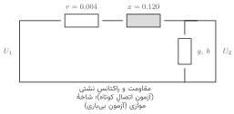
def from_tests(s_kva: float, u_kv: float, p0_kw: float, i0_pct: float,
pk_kw: float, uk_pct: float) -> dict:
"""Per-unit equivalent circuit from the no-load test (P0, I0) and the
short-circuit test (Pk at rated current, uk): series r, x and the
shunt magnetising branch, referred to the rated base."""
r = pk_kw / s_kva
z = uk_pct / 100
x = math.sqrt(max(z ** 2 - r ** 2, 0.0))
g = p0_kw / s_kva
y = i0_pct / 100
b = math.sqrt(max(y ** 2 - g ** 2, 0.0))
return {"r": r, "x": x, "z": z, "g": g, "b": b}
def regulation_pct(r: float, x: float, load: float, pf: float) -> float:
"""Voltage regulation (%) at a per-unit load and power factor
(lagging): u_r cos + u_x sin + (u_x cos - u_r sin)^2 / 200, with
u_r and u_x in % at that load."""
s = math.sin(math.acos(pf))
ur, ux = 100 * r * load, 100 * x * load
return ur * pf + ux * s + (ux * pf - ur * s) ** 2 / 200
def efficiency(load: float, s_kva: float, pf: float, p0_kw: float,
pk_kw: float) -> float:
out = load * s_kva * pf
return out / (out + p0_kw + load ** 2 * pk_kw)equivalent circuit from the tests (per unit on 63 MVA):
series r 0.00397, x 0.11993, z 0.120 (x/r 30)
shunt g 0.000556, b 0.001921
regulation and efficiency at full load:
pf regulation % efficiency %
1.00 1.12 99.550
0.95 4.76 99.526
0.90 6.15 99.500
efficiency is highest where load loss = no-load loss: at 0.37 of rating
the regulation is mostly the reactance: at pf 1 the
voltage falls little, at pf 0.9 lagging it falls ~6 %,
which the tap changer and the plant's reactive power absorb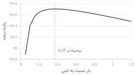
مثال 25.2 (راکتانس، نه مقاومت) پرسش. \(r\) و \(x\) ترانسفورماتورِ 63 MVA با \(P_\text{k} = 250\,\text{kW}\) و \(u_\text{k} = 12\,\%\) چیست؟ تنظیمِ ولتاژ و بازده در بارِ کامل با ضریبِ توانِ 0.95؟ بازده کجا بیشینه است؟
پاسخ. \(r = 0.00397\) و \(x = 0.1199\) (نسبتِ \(x/r\) حدودِ ۳۰)؛ تنظیم 4.76 %، بازده 99.53 %؛ بیشینهٔ بازده در \(k = \sqrt{35/250} = 0.37\).
تفسیر. افتِ ولتاژ تقریباً همه از راکتانس است و با ضریبِ توانِ پسفاز بزرگ میشود (6.15 % در 0.9)؛ تپچنجر و توانِ واکنشیِ نیروگاه آن را جبران میکنند. بیشینهٔ بازده جایی است که تلفِ بار با تلفِ بیباری برابر شود: برای نیروگاهی با بارِ میانگینِ حدودِ 0.3، نزدیک به کارِ واقعی. وارسی: \(250/63{,}000 = 0.00397\).
- معادلهٔ 25.1 را برای 1.6 T و 0.40 m² حساب کنید.
- کدام آزمون شاخهٔ سری و کدام شاخهٔ موازی را میدهد؟
- چرا تنظیمِ ولتاژ با ضریبِ توانِ پسفاز بیشتر است؟
- بارِ بیشینهٔ بازده را برای \(P_0 = 28\) و \(P_\text{k} = 215\,\text{kW}\) حساب کنید.
25.2.3 مقدارهای نامی، گروهِ برداری، تپ، کارِ موازی و خطا
گروهِ برداری. نامِ YNd11 یعنی فشارِ قوی ستاره با نولِ در دسترس، فشارِ متوسط مثلث، و ولتاژِ فشارِ متوسط در «ساعتِ ۱۱» نسبت به فشارِ قوی در «ساعتِ ۱۲» (شکل 25.3):
vector group YNd11 (clock notation, teaching):
HV star with an earthed neutral (YN), LV delta (d), and
the LV voltage at 11 o'clock against HV at 12: it leads
by 30 degrees
consequences on the one-line (ch 23):
- the 132 kV neutral can be earthed; the 33 kV side needs
earthing transformers (no neutral on a delta)
- two transformers in parallel need the same group;
a d1 unit beside a d11 would short a 60-degree shift
- protection and metering CTs see the 30-degree shift and
the relay compensates it (ch 26)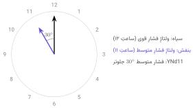
تپچنجر.
on-load tap changer -10 % to +10 % in 1.25 % steps: 17 positions
HV voltage seen at each end of the range for 33 kV on the LV:
tap -10.00 %: LV 33 kV at HV 118.8 kV
tap +0.00 %: LV 33 kV at HV 132.0 kV
tap +10.00 %: LV 33 kV at HV 145.2 kV
the range covers the grid's voltage band at the POC and the
regulation across the transformer (above); the range and
steps are fixed with the grid study (ch 28) - an open item
of the specification until thenمثال 25.3 (هفده پله) پرسش. تپچنجرِ ±10 % با پلههای 1.25 % چند وضعیت دارد و چه بازهای از ولتاژِ شبکه را پوشش میدهد؟
پاسخ. ۱۷ وضعیت؛ با 33 kV در سمتِ متوسط، شبکه از 118.8 تا 145.2 kV.
تفسیر. بازه باید بازهٔ ولتاژِ شبکه در نقطهٔ اتصال و تنظیمِ ولتاژِ خودِ ترانسفورماتور (مثال 25.2) را بپوشاند؛ بازه و پلهها با مطالعهٔ شبکه (فصلِ ۲۸) بسته میشوند و تا آن زمان موردِ باز (U-096) مشخصهاند. وارسی: \(20/1.25 + 1 = 17\).
کارِ موازی. دو ترانسفورماتورِ موازی بار را به نسبتِ مقدارِ نامی تقسیم بر امپدانس تقسیم میکنند:
two 63 MVA units in parallel (coupler closed), 100 MVA load:
z 12 % and 12.0 %: 50.0 and 50.0 MVA (79% and 79% of rating)
z 12 % and 13.0 %: 52.0 and 48.0 MVA (83% and 76% of rating)
z 12 % and 15.0 %: 55.6 and 44.4 MVA (88% and 71% of rating)
at 126 MVA (both ratings) with 12 % and 15 %: 70.0 and 56.0 MVA
- the first is at 111% before the pair is full
the lower impedance takes more load; equal ratio, vector
group and close impedances are conditions of parallel
operation (Plant P runs them split, ch 23)مثال 25.4 (امپدانسِ کمتر، بارِ بیشتر) پرسش. دو واحدِ 63 MVA با 12 و 15 % در مجموع 126 MVA میبرند. هر کدام چقدر؟
پاسخ. 70.0 و 56.0 MVA: نخستی 111 % بار دارد پیش از آنکه جفت پر شود.
تفسیر. شرطهای کارِ موازی: نسبتِ برابر، گروهِ برداریِ یکسان و امپدانسهای نزدیک. نیروگاهِ P دو ترانسفورماتور را جدا (کوپلرِ باز) کار میدهد (فصلِ ۲۳)، اما برای کارِ موازی در نگهداری، امپدانسها در مشخصه نزدیک به هم خواسته میشوند. وارسی: \(126 \times (63/0.12)/(63/0.12 + 63/0.15) = 70.0\).
اتصالِ کوتاه و جریانِ هجومی.
short circuit and inrush of the 63 MVA unit (infinite bus):
fault on the 33 kV terminals: 9.2 kA = 8.3 x rated
force on the windings ~ I^2: 69 x the rated-current force (x peak factor^2)
inrush on energising: a few times to over ten times rated
current for some cycles, decaying over seconds, rich in
the 2nd harmonic - the protection must not trip on it (ch 26)
the windings and clamping are designed and type-proved for
the short-circuit force; the specification states the
fault level the transformer must withstand (ch 23 faults)مثال 25.5 (شصتونُه برابرِ نیرو) پرسش. جریانِ خطا در پایانههای 33 kV پشتِ امپدانسِ 12 % چند برابرِ نامی است و نیرو چند برابر؟
پاسخ. \(1/0.12 = 8.3\) برابر (9.2 kA)؛ نیرو با مجذورِ جریان: حدودِ ۶۹ برابر (ضربِ مجذورِ ضریبِ قله).
تفسیر. سیمپیچها و بستها برای این نیرو طراحی و با آزمونِ نوعی یا اثباتِ طرح ثابت میشوند؛ مشخصه سطحِ خطایی را که باید تحمل شود (از فصلِ ۲۳) مینویسد. امپدانسِ کمتر یعنی جریان و نیروی بیشتر؛ امپدانسِ بیشتر یعنی تنظیمِ ولتاژِ بدتر: امپدانس یک مصالحه است. جریانِ هجومیِ وصل، غنی از هارمونیکِ دوم، نباید حفاظت را بیجا عمل دهد (فصلِ ۲۶). وارسی: \((1/0.12)^2 = 69\).
| ورودیِ مشخصه | از کجا میآید |
|---|---|
| مقدارِ نامی و سرمایش | بارِ بخشِ شینه و محدودیتِ کنترلگر (فصلهای ۲۰ و ۲۳) |
| ولتاژها، فرکانس، فاز | نمودارِ تکخطی و شبکه |
| گروهِ برداری | زمینِ سامانه و کارِ موازی (فصلِ ۲۳) |
| امپدانس | جریانِ خطا در برابرِ تنظیمِ ولتاژ (فصلهای ۲۳ و ۲۸) |
| بازهٔ تپ | مطالعهٔ ولتاژِ شبکه (فصلِ ۲۸) |
| سطحِ عایق | هماهنگیِ عایق و صاعقه (فصلِ ۲۶) |
| تضمینِ تلف | ضریبهای ارزیابی (بخش 25.2.4) |
| محیط، صدا، جا | محل، مطالعهٔ صدا (فصلهای ۱۴ و ۳۳) |
| راهبردِ حریق | طراحیِ حریق (فصلِ ۳۱) |
- YNd11 را بخوانید و دو پیامدش برای نمودارِ تکخطی را بنویسید.
- چرا بازهٔ تپ تا مطالعهٔ شبکه باز است؟
- سه شرطِ کارِ موازی را نام ببرید.
- چرا امپدانس یک مصالحه است؟
25.2.4 ارزیابیِ تلف، بارگذاری، دما و پیرشدن
ارزشِ تلف. خریدار پیشنهادها را با قیمت بهاضافهٔ ارزشِ فعلیِ تلفها میسنجد: \(A P_0 + B P_\text{k}\). ضریبِ \(A\) ارزشِ هر کیلوواتِ تلفِ بیباری در تمامِ ساعتهای عمر است و \(B = A \times\) ضریبِ تلفِ بار (میانگینِ مجذورِ بارِ پریونیت):
def loss_cost(p0_kw: float, pk_kw: float, a_per_kw: float,
b_per_kw: float) -> float:
"""Capitalised cost of losses: A P0 + B Pk (k u when A, B are k u/kW)."""
return a_per_kw * p0_kw + b_per_kw * pk_kw
def ab_factors(price: float, years: int, rate: float, load_loss_factor: float,
hours: float = 8760.0) -> tuple[float, float]:
"""A (no-load) and B (load-loss) factors in k u per kW: energy price
(u/MWh) over the years at the rate; B scaled by the loss load factor
(mean of the square of the per-unit load)."""
af = (1 - (1 + rate) ** -years) / rate
a = price * hours / 1e6 * af
return a, a * load_loss_factortwo bids for one 63 MVA transformer, losses capitalised:
mean load 0.29 pu, loss load factor (mean k^2) 0.128
A = 6.84 k u per kW of no-load loss, B = 0.88 k u per kW of load loss
bid price P0 kW Pk kW losses PV total k u
bid A (low loss) 1,950 28 215 380 2,330
bid B (low price) 1,700 42 290 542 2,242
at 70 u/MWh the cheaper bid wins; bid A wins above about 108 u/MWh
the no-load loss runs all year, so A is large; the load
loss is weighted by the mean square load, which a plant
at a 35 % capacity factor keeps small; the evaluation
formula and the price are stated in the enquiry so every
bidder optimises the same thing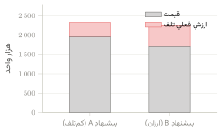
مثال 25.6 (پیشنهادِ ارزان برنده است، فعلاً) پرسش. با بارِ ساعتیِ نیروگاه (فصلِ ۱۵)، ضریبهای \(A\) و \(B\) و جمعِ هر پیشنهاد چیست؟ در چه قیمتی پیشنهادِ کمتلف برنده میشود؟
پاسخ. بارِ میانگین 0.29 و ضریبِ تلفِ بار 0.128؛ \(A = 6.84\) و \(B = 0.88\) هزار واحد بر کیلووات. جمع: A 2,330 و B 2,242 هزار. پیشنهادِ کمتلف بالای حدودِ 108 واحد بر مگاواتساعت برنده میشود.
تفسیر. نیروگاهِ تجدیدپذیر ترانسفورماتور را کمبار نگه میدارد: \(B\) کوچک است و تلفِ بار کماهمیت؛ تلفِ بیباری که همهٔ سال جاری است مهمتر است. فرمولِ ارزیابی و قیمت در درخواستِ پیشنهاد نوشته میشوند تا همهٔ سازندگان یک چیز را بهینه کنند (D-029). وارسی: \(1{,}700 + 42 \times 6.84 + 290 \times 0.88 \approx 2{,}242\).
دما و پیرشدن. کاغذِ عایق با دمای نقطهٔ داغ پیر میشود. یک مدلِ آموزشیِ پایا (شکلِ کلیِ راهنمای بارگذاری، IEC 60076-7:2018): افزایشِ دمای روغنِ بالایی و گرادیانِ نقطهٔ داغ، هر دو تابعی از بار؛ و آهنگِ نسبیِ پیرشدن که هر 6 K بالای 98 °C دو برابر میشود:
\[ V = 2^{(\theta_\text{h} - 98)/6} \tag{25.4}\]
def hot_spot(k: float, theta_a: float, d_top_r: float = 52.0,
d_hs_r: float = 26.0,
r_ratio: float = 6.0, x: float = 0.8, y: float = 1.6) -> float:
"""Steady hot-spot temperature at load factor k (teaching exponential
model): top-oil rise d_top_r((1 + R k^2)/(1 + R))^x plus hot-spot
gradient d_hs_r k^y above the ambient theta_a."""
top = d_top_r * ((1 + r_ratio * k ** 2) / (1 + r_ratio)) ** x
return theta_a + top + d_hs_r * k ** y
def ageing_rate(theta_hs: float, ref: float = 98.0,
step: float = 6.0) -> float:
"""Relative ageing rate of the paper: doubles every `step` K above
`ref` (teaching relation for non-upgraded paper)."""
return 2 ** ((theta_hs - ref) / step)hot spot and ageing of one main transformer over the data-pack year:
hours above 0.9 pu: 0; max load 0.90 pu
hot spot: max 102 C, mean 38 C
ageing: 3.8 days of life used in 365 days (relative rate 0.010)
a plant transformer is lightly loaded most of the year: it
ages slowly, so a short overload in the hottest hours costs
little life - the thermal model and the loading guide of the
maker decide how much, not this teaching model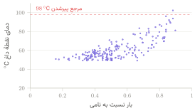
مثال 25.7 (سه روز و نیم در یک سال) پرسش. با بار و دمای هوای ساعتی، دمای بیشینهٔ نقطهٔ داغ و عمرِ مصرفشده در یک سال چیست؟
پاسخ. بیشینه حدودِ 102 °C، میانگین 38 °C؛ حدودِ ۳٫۸ روز عمر در ۳۶۵ روز.
تفسیر. ترانسفورماتورِ نیروگاهِ تجدیدپذیر بیشترِ سال کمبار است و آهسته پیر میشود؛ بنابراین اضافهبارِ کوتاه در ساعتهای داغ عمرِ کمی میگیرد. چقدر، با مدلِ گرمایی و راهنمای بارگذاریِ سازنده تعیین میشود. وارسی: در بارِ نامی و 30 °C، \(\theta_\text{h} = 30 + 52 + 26 = 108\) و \(V = 3.2\).
ONAN and ONAF: the same transformer with and without fans:
ONAN rating 50 MVA, ONAF rating 63 MVA
hours above the ONAN rating: 187 of 8760
the fans run only in those hours; if they fail, the plant
controller limits the transformer to its ONAN rating
(an alarm and a limit in the cause-and-effect, ch 23)- ضریبهای \(A\) و \(B\) را تعریف کنید و بگویید چرا \(B\) برای نیروگاهِ تجدیدپذیر کوچک است.
- معادلهٔ 25.4 را برای 110 و 86 °C حساب کنید.
- چرا فرمولِ ارزیابی در درخواستِ پیشنهاد نوشته میشود؟
- اگر فنها از کار بیفتند، کنترلگر چه میکند؟
25.2.5 جریانِ هجومی، اضافهتحریک و هارمونیکِ مبدلها
جریانِ هجومی. هنگامِ برقدار کردن، شارِ هسته از صفر (یا از شارِ پسماند) شروع میشود؛ اگر کلید در گذرِ ولتاژ از صفر ببندد، شار تا نزدیکِ دو برابرِ مقدارِ عادی بالا میرود و هسته اشباع میشود. یک برآوردِ آموزشیِ قلهٔ جریان:
\[ i_\text{peak} \approx \frac{\sqrt{2}\,I_\text{n}}{x_\text{air}}\;\frac{2B_\text{n} + B_\text{r} - B_\text{s}}{B_\text{n}} \tag{25.5}\]
با \(x_\text{air}\) راکتانسِ هستههواییِ سیمپیچِ برقدارشده، \(B_\text{r}\) شارِ پسماند و \(B_\text{s}\) چگالیِ شارِ اشباع.
inrush on energising from the 132 kV side (teaching estimate):
i_peak = sqrt2 In / x_air x (2 Bn + Br - Bs) / Bn
In 276 A, Bn 1.7 T, Bs 2.03 T, air-core reactance 0.3 pu
residual flux switched at voltage zero peak A x rated rms
0.0 x Bn worst case 1047 3.8
0.4 x Bn worst case 1566 5.7
0.8 x Bn worst case 2086 7.6
switched at the voltage peak the flux starts symmetric and
there is almost no inrush; at the zero with residual flux
of the same sign the core saturates for many cycles - the
current decays over seconds and is rich in the 2nd
harmonic (the differential's blocking, ch 26); a second
transformer already in service can draw a 'sympathetic'
inrush; controlled switching at the right instant is an
option the utility may ask forمثال 25.8 (شارِ پسماند هجوم را دو برابر میکند) پرسش. قلهٔ جریانِ هجومیِ ترانسفورماتورِ 63 MVA از سمتِ 132 kV را با شارِ پسماندِ صفر، 0.4 و 0.8 برابرِ شارِ نامی حساب کنید.
پاسخ. حدودِ 1,047، 1,566 و 2,086 A قله: 3.8 تا 7.6 برابرِ جریانِ نامیِ مؤثر.
تفسیر. هجوم چند ثانیه طول میکشد و هارمونیکِ دومِ زیادی دارد؛ حفاظتِ دیفرانسیل با همین هارمونیک قفل میشود (فصلِ ۲۶). ترانسفورماتورِ موازیِ برقدار هم ممکن است جریانِ «همدردی» بکشد. بستنِ کلید در لحظهٔ مناسب (کلیدزنیِ کنترلشده) هجوم را کم میکند و بهرهبردار ممکن است آن را بخواهد. وارسی: \(1.414 \times 276/0.30 \times 1.606 = 2{,}086\).
اضافهتحریک. شارِ هسته با نسبتِ ولتاژ به فرکانس (\(V/f\)) متناسب است. بالای حدودِ 1.1 پریونیت، هسته به اشباع میرود:
over-excitation: flux follows V/f (teaching core, 1.7 T rated):
V/f pu flux T core loss x magnetising current x
1.00 1.70 1.00 1.0
1.05 1.78 1.10 2.0
1.10 1.87 1.21 3.9
1.15 1.95 1.32 7.7
1.20 2.04 1.44 15.2
above about 1.1 the core runs into saturation: the loss and
the magnetising current grow fast, flux leaks into the tank
and the clamps and heats them - high voltage at the plant
end of a long line, or low frequency in an island, does it;
a V/Hz protection (24) with a time curve from the maker
guards it, and the plant's voltage control keeps away from itمثال 25.9 (ولتاژِ زیاد در فرکانسِ کم) پرسش. در V/f برابرِ 1.15، تلفِ هسته و جریانِ مغناطیسکنندگی چند برابر میشوند؟
پاسخ. تلفِ هسته حدودِ 1.32 و جریانِ مغناطیسکنندگی حدودِ 7.7 برابر (منحنیِ آموزشی).
تفسیر. شارِ نشتی به مخزن و گیرهها میرود و آنها را داغ میکند. ولتاژِ زیاد در انتهای خطِ بلندِ بیبار، یا فرکانسِ کم در جزیره، آن را میسازد؛ حفاظتِ V/Hz (24) با منحنیِ زمانیِ سازنده نگهبانِ آن است و کنترلِ ولتاژِ نیروگاه از آن دور میماند. وارسی: \(1.7 \times 1.15 = 1.955\,\text{T}\).
هارمونیکِ مبدلها. جریانِ هارمونیکی تلفِ گردابیِ سیمپیچ را با مجذورِ مرتبهٔ هارمونیک بالا میبرد. ضریبِ تلفِ هارمونیکی:
\[ F_\text{HL} = \frac{\sum_h (I_h/I_1)^2\,h^2}{\sum_h (I_h/I_1)^2} \tag{25.6}\]
extra winding loss from converter harmonics (teaching):
F_HL = sum (Ih/I1)^2 h^2 / sum (Ih/I1)^2; eddy share of load
loss 8%
spectrum F_HL load loss up kW at 250 kW
modern converters 1.069 0.5% 1.4
a poor or resonant case 1.444 3.6% 8.9
today's converters add little; a resonance that amplifies
one harmonic (ch 27) can add several per cent - the
transformer specification states the expected spectrum so
the maker can design the windings and stray-loss shieldsمثال 25.10 (مبدلِ امروزی کم میافزاید) پرسش. با سهمِ تلفِ گردابیِ 8 %، دو طیف چه افزایشی در تلفِ بار میسازند؟
پاسخ. مبدلهای امروزی 0.5 % (1.4 kW)؛ حالتِ بد یا تشدیدی 3.6 % (8.9 kW).
تفسیر. مشخصهٔ ترانسفورماتور طیفِ مورد انتظار را میگوید تا سازنده سیمپیچ و سپرهای تلفِ پراکنده را طراحی کند؛ تشدید (فصلِ ۲۷) میتواند یک هارمونیک را چند برابر کند. وارسی: \(0.08 \times 0.069 = 0.55\,\%\).
- جریانِ هجومی خطا فرض و حفاظت با آن قطع شده است.
- اضافهتحریک در جزیره یا خطِ بیبار دیده نشده است.
- طیفِ هارمونیکِ مبدلها در مشخصهٔ ترانسفورماتور نیامده است.
- چرا بستنِ کلید در گذرِ ولتاژ از صفر بدترین حالت برای هجوم است؟
- قلهٔ هجوم با شارِ پسماندِ 0.6 برابر؟
- شار در V/f برابرِ 1.08؟
- چرا اضافهتحریک مخزن را داغ میکند؟
- F_HL برای جریانی با فقط هارمونیکِ هفتمِ 5 %؟
25.2.6 یک روزِ گرم در مدلِ گرماییِ پویا و آب در کاغذ
ایده. در بخش 25.2.4 نقطهٔ داغ از بارِ هر ساعت ماندگار حساب شد. ولی روغن ثابتِ زمانیِ چند ساعته دارد: قلهٔ بارِ ظهر را دیرتر و نرمتر نشان میدهد، و همان دیرکرد آن را به گرمای بعدازظهر میرساند. مدلِ پویا دو پاسخِ مرتبهٔ اول را کنارِ هم میگذارد: روغنِ بالایی با 180 min و گرادیانِ سیمپیچ با 7 min:
def hot_day(step_min: float = 5.0) -> list:
"""Top-oil and hot-spot temperatures through a hot day with a hybrid
load (wind at night, PV peak at noon), first-order responses:
top oil tau 180 min, winding gradient tau 7 min."""
d_or, d_hr, r, x, y = 52.0, 26.0, 6.0, 0.8, 1.6
tau_o, tau_w = 180.0, 7.0
d_o, d_h = 30.0, 5.0
rows = []
for k in range(int(48 * 60 / step_min)): # settle a day, record the next
t = (k * step_min / 60.0) % 24
amb = 35 + 10 * math.sin(math.pi * (t - 9) / 12)
sun = math.sin(math.pi * (t - 6) / 12)
pv = max(0.0, sun) if 6 <= t <= 18 else 0.0
load = min(0.35 + 0.80 * pv, 1.15)
d_ou = d_or * ((1 + r * load ** 2) / (1 + r)) ** x
d_hu = d_hr * load ** y
d_o += (d_ou - d_o) * step_min / tau_o
d_h += (d_hu - d_h) * min(step_min / tau_w, 1.0)
if k >= int(24 * 60 / step_min):
rows.append((t, load, amb, amb + d_o, amb + d_o + d_h))
return rowsa hot day of hybrid loading, dynamic thermal model (teaching):
load 0.35 pu at night (wind), up to 1.15 pu at noon (PV + wind);
air 25 C at dawn to 45 C in mid-afternoon
hottest spot 127 C at 13.4 h; steady state at each
instant would say 138 C
life used in this day: 4.00 days
the oil's three-hour time constant carries the noon peak
into the afternoon heat, but also smooths it: the dynamic
peak is below the steady one; still, this one day uses
about as much life as the whole year of lesson A - the
year is mostly cool nights and light loads, and a few such
days decide the ageing; the loading guide's model with the
maker's constants is what a real check uses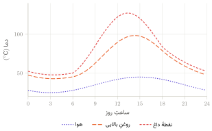
مثال 25.11 (یک روز به اندازهٔ یک سال) پرسش. با بارِ شبانهٔ 0.35 و ظهرِ 1.15 پریونیت و هوای 25 تا 45 °C، داغترین نقطه و عمرِ مصرفشده چیست؟
پاسخ. حدودِ 127 °C در ساعتِ 13.4؛ مدلِ ماندگار 138 °C میگفت. عمرِ مصرفشده حدودِ ۴ روز در همین یک روز.
تفسیر. مدلِ پویا قله را پایینتر و دیرتر میبیند؛ ولی همین یک روز به اندازهٔ کلِ سالِ بخش 25.2.4 عمر مصرف میکند. سال بیشتر شبهای خنک و بارِ کم است و چند روزِ اینچنینی پیری را تعیین میکنند. مدلِ راهنمای بارگذاری با ثابتهای سازنده مبنای وارسیِ واقعی است. وارسی: خروجیِ برنامه.
آب در کاغذ. عایقِ کاغذیِ خیس چند برابر تندتر پیر میشود:
ageing of paper with water in it (teaching factors on lesson A's year):
water in paper % ageing x life used per year days
0.5 1.0 3.8
1.0 1.5 5.7
2.0 3.0 11.4
3.0 5.0 19.0
dry paper ages several times slower than wet: drying in the
factory (lesson B), a sealed or breathing-dried conservator
and oil sampling for water keep it dry; the factors here
are teaching values - the loading guide gives the real
ones with oxygen and acidityمثال 25.12 (خشک نگه داشتن، ارزانترین عمر) پرسش. با 3 % آب در کاغذ، عمرِ مصرفشدهٔ سالانه چند برابرِ کاغذِ خشک است؟
پاسخ. حدودِ پنج برابر: 19 روز بهجای 3.8 روز در سال (ضریبهای آموزشی).
تفسیر. خشک کردن در کارخانه (بخش 25.3.3)، تنفسگیرِ کنسرواتور یا مخزنِ آببند، و نمونهگیریِ آبِ روغن کاغذ را خشک نگه میدارند. ضریبهای واقعی با اکسیژن و اسیدیته در راهنمای بارگذاریاند. وارسی: \(3.8 \times 5 = 19\).
- قلهٔ بار با مدلِ ماندگار سنجیده و اثرِ ثابتِ زمانیِ روغن نادیده گرفته شده است.
- پیری فقط با دما حساب و آبِ کاغذ فراموش شده است.
- چرا قلهٔ مدلِ پویا پایینتر و دیرتر از مدلِ ماندگار است؟
- چرا چند روزِ گرم پیریِ کلِ سال را تعیین میکنند؟
- سه راهِ خشک نگه داشتنِ کاغذ را نام ببرید.
25.2.7 چند ترانسفورماتور، تلفِ شب و ترانسفورماتورِ یدک
چند ترانسفورماتورِ اصلی؟ یک ترانسفورماتورِ بزرگ ارزانتر است؛ دو یا سه تا هنگامِ خرابی بخشی از نیروگاه را نگه میدارند:
how many main transformers? (teaching: cost ~ S^0.7, 100 MW export)
option capex index outage share expected loss MWh/yr k u/yr
1 x 125 MVA 1.00 100% 2212 155
2 x 63 MVA 1.24 18% 796 56
3 x 45 MVA 1.47 3% 199 14
one big unit is cheapest but its failure stops the plant for
months; two units lose only the energy above one unit's
rating; three lose almost nothing but cost more and take
more bays - two is the usual balance (D-022), the outage
share comes from the plant's own output profileمثال 25.13 (چرا دو، نه یک و نه سه) پرسش. هزینهٔ سرمایه و انرژیِ ازدسترفتهٔ مورد انتظارِ سه گزینه را مقایسه کنید.
پاسخ. یک × ۱۲۵: شاخصِ 1.00 و 155 هزار واحد در سال از دست رفته؛ دو × ۶۳: 1.24 و 56؛ سه × ۴۵: 1.47 و 14.
تفسیر. خرابیِ یک ترانسفورماتورِ تنها نیروگاه را ماهها متوقف میکند؛ با دو تا فقط انرژیِ بالای ظرفیتِ یکی از دست میرود؛ سه تا تقریباً هیچ از دست نمیدهند ولی گرانترند و بِیِ بیشتر میگیرند. دو تعادلِ رایج است (D-022)؛ سهمِ خاموشی از نیمرخِ تولیدِ خودِ نیروگاه میآید. وارسی: \((63/125)^{0.7} \times 2 = 1.24\).
تلفِ بیباری در شب. وقتی نیروگاه تولید ندارد، تلفِ بیباریِ هر دو ترانسفورماتور از شبکه خریده میشود:
no-load loss at night: switch one transformer off? (teaching)
hours a year with export below 10 MW: 2,600
one transformer's no-load loss 35 kW -> 91 MWh a year, 6.4 k u
cost: about 730 switching operations and inrushes a year,
breaker wear, a transformer energised from cold each morning,
and the risk that it does not come back when the wind rises
a few k u a year rarely pays for that: most plants keep both
energised and buy the loss; where losses are dear and the
breaker is rated for it, an automatic scheme can be studiedمثال 25.14 (چند هزار واحد در برابرِ هفتصد کلیدزنی) پرسش. خاموش کردنِ یکی از دو ترانسفورماتور در ساعتهای کمتولید چه صرفهای دارد و چه هزینهای؟
پاسخ. حدودِ 91 MWh و 6.4 هزار واحد در سال؛ در برابرِ حدودِ ۷۳۰ کلیدزنی و هجوم در سال، فرسایشِ کلید و خطرِ برنگشتن هنگامِ وزشِ باد.
تفسیر. بیشترِ نیروگاهها هر دو را برقدار نگه میدارند و تلف را میخرند؛ جایی که تلف گران و کلید برای آن رتبهدار باشد، یک طرحِ خودکار مطالعه میشود. وارسی: \(35 \times 2{,}600 = 91{,}000\,\text{kWh}\).
ترانسفورماتورِ یدک. خرابیِ ترانسفورماتورِ اصلی کم ولی طولانی است:
a spare main transformer: does it pay? (teaching)
failure rate 0.015 a year each; without spare 6 months out, with
a spare one month
energy above one transformer's capacity: 18% of 295 GWh
expected loss a year: 796 MWh without spare, 131 MWh with
value of the spare: 47 k u a year against ~1,890 k u
-> payback about 41 years: not for one plant;
a spare shared by several plants (or the utility's pool),
or a smaller mobile unit for the critical loads, are the
usual answers - with the transport route kept open (ch 18)مثال 25.15 (چهل سال برای پس دادن) پرسش. با نرخِ خرابیِ 0.015 در سال برای هر ترانسفورماتور و تعمیرِ ششماهه، یدکی که خاموشی را به یک ماه کم کند چقدر میارزد؟
پاسخ. حدودِ 47 هزار واحد در سال در برابرِ حدودِ 1,890 هزار واحد؛ بازگشتِ حدودِ ۴۱ سال.
تفسیر. برای یک نیروگاه نمیارزد؛ یدکِ مشترکِ چند نیروگاه یا ذخیرهٔ بهرهبردار، یا واحدِ سیارِ کوچک برای بارهای حیاتی، پاسخهای رایجاند، به شرطِ باز ماندنِ مسیرِ حمل (فصلِ ۱۸). وارسی: \(2 \times 0.015 \times 4{,}380/8{,}760 \times 295{,}000 \times 0.18 = 796\).
- یک ترانسفورماتورِ بزرگ فقط با قیمت انتخاب شده است.
- ترانسفورماتورِ یدکِ اختصاصی بیحسابِ انرژیِ ازدسترفته خریده شده است.
- چرا یک ترانسفورماتورِ بزرگ خطرناک است با اینکه ارزانتر است؟
- با سهمِ 25 % انرژی بالای ظرفیتِ یک واحد، انرژیِ ازدسترفتهٔ دو × ۶۳ چیست؟
- چرا بیشترِ نیروگاهها تلفِ شب را میخرند؟
- سه جانشینِ یدکِ اختصاصی را نام ببرید.
25.2.8 امپدانس، نولِ فشارِ قوی و بازهٔ تپ: سه انتخابِ مشخصه
امپدانس: جریانِ خطا، تنظیمِ ولتاژ و نیرو. امپدانسِ اتصالِ کوتاه سه چیز را با هم جابهجا میکند (بخش 25.3.4):
choosing the impedance: fault current, regulation, force (teaching):
uk % 33 kV fault, both T + converters kA regulation % (0.95) force x
8 14.6 3.2 2.25
10 13.4 3.9 1.44
12 12.5 4.8 1.00
14 11.7 5.6 0.73
16 11.0 6.5 0.56
low impedance: small drop, but high fault current (the 25 kA
gear) and large forces; high impedance: the opposite and more
reactive power drawn - 10 to 14 % keeps the fault well under
25 kA and the regulation under about 6 %: 12 % is the basis,
confirmed by the fault study (ch 26) and the voltage studyمثال 25.16 (چرا دوازده درصد) پرسش. برای امپدانسِ 8 تا 16 %، جریانِ خطای 33 kV (هر دو ترانسفورماتور و مبدلها)، تنظیمِ ولتاژ در ضریبِ توانِ 0.95 و نیروی نسبی را مقایسه کنید.
پاسخ. از 14.6 kA، 3.2 % و 2.25 برابر در 8 % تا 11.0 kA، 6.5 % و 0.56 در 16 %.
تفسیر. همهٔ گزینهها زیرِ 25 kA تابلوها هستند؛ امپدانسِ کم افت را کم و نیرو را زیاد میکند، امپدانسِ زیاد برعکس و توانِ واکنشیِ بیشتری میکشد. بازهٔ 10 تا 14 % تعادل است و 12 % مبنا، با تأییدِ مطالعهٔ خطا (فصلِ ۲۶) و ولتاژ. وارسی: \((12/8)^2 = 2.25\).
نولِ فشارِ قوی. ستارهٔ زمینشده (YN) ترانسفورماتور را برای خطای زمینِ شبکه منبعِ توالیِ صفر میکند:
the HV star point: earthed (YN) or not, seen by a 132 kV earth fault
grid Z1 14.6 ohm, Z0 20.4 ohm; each transformer Z0 29.9 ohm
plant star points earthed earth-fault kA share from the plant
0 4.6 0%
1 5.5 41%
2 6.1 58%
an earthed star point makes the plant a source of zero-
sequence current: the grid's earth faults grow and the
utility's earth-fault protection sees the plant - so the
utility decides whether the HV neutral is earthed, solid
or through an impedance (U-089), and the vector group
and neutral bushing follow that decisionمثال 25.17 (نیروگاهی که خطای زمینِ شبکه را بزرگ میکند) پرسش. اگر نولِ یک یا هر دو ترانسفورماتور زمین شود، جریانِ خطای زمینِ 132 kV چه میشود؟
پاسخ. از 4.6 به 5.5 و 6.1 kA؛ سهمِ نیروگاه 41 و 58 %.
تفسیر. حفاظتِ خطای زمینِ شبکه، افزایشِ پتانسیلِ زمین و حتی رتبهٔ تجهیزاتِ بهرهبردار از این جریان اثر میگیرند؛ پس بهرهبردار تصمیم میگیرد نول زمین شود، صلب یا با امپدانس (U-089)، و گروهِ برداری و بوشینگِ نول دنبالِ آن میآیند. وارسی: \(3 \times 76{,}210/(2 \times 14.6 + 20.4) = 4.6\,\text{kA}\).
بازهٔ تپ. نیروگاه صادر میکند؛ پس ولتاژِ 33 kV به اندازهٔ تنظیم بالای ولتاژِ فشارِ قوی مینشیند. تپِ فشارِ قوی (همان قراردادِ بخش 25.2.3) باید ولتاژِ 33 kV را در همهٔ بازهٔ شبکه نگه دارد:
tap range from the voltage band (teaching; exporting, so the 33 kV
side sits above the HV side by the regulation):
HV voltage pu rise % HV tap % for 33 kV at 1.00 (as lesson A)
0.90 0.0 -10.0
0.90 4.8 -5.7
0.95 0.0 -5.0
0.95 4.8 -0.4
1.05 0.0 +5.0
1.05 4.8 +10.0
1.10 0.0 +10.0
1.10 4.8 +15.3
needed from -10.0 to +15.3 %; the +/- 10 % in 1.25 % steps
covers the band except the corner of high grid voltage at
full export, where the plant absorbs reactive power (ch 20)
to pull the 33 kV down - the tap range follows the voltage
studyمثال 25.18 (گوشهٔ ولتاژِ زیاد و صادراتِ کامل) پرسش. با ولتاژِ شبکهٔ 0.90 تا 1.10 پریونیت و افزایشِ 4.8 % در صادراتِ کامل، چه بازهای از تپ لازم است؟
پاسخ. از −10 تا +15.3 %؛ بازهٔ ±10 % همه را جز گوشهٔ ولتاژِ زیادِ شبکه در صادراتِ کامل میپوشاند.
تفسیر. در آن گوشه نیروگاه توانِ واکنشی جذب میکند (فصلِ ۲۰) تا ولتاژِ 33 kV پایین بیاید؛ بازهٔ تپ با مطالعهٔ ولتاژ (فصلِ ۲۸) بسته میشود و تا آن وقت در مشخصه موردِ باز است (U-096). وارسی: \(1.10 \times 1.048 - 1 = 0.153\).
- بازهٔ تپ با فرضِ مصرفکننده حساب شده، نه صادرکننده.
- زمین کردنِ نولِ فشارِ قوی بیپرسش از بهرهبردار انتخاب شده است.
- امپدانس فقط با افتِ ولتاژ انتخاب و جریانِ خطا و نیرو دیده نشده است.
- با امپدانسِ 14 % جریانِ خطا و تنظیم چه میشود؟
- چرا نولِ زمینشدهٔ نیروگاه برای بهرهبردار مهم است؟
- تپِ لازم در ولتاژِ شبکهٔ 1.08 و افزایشِ 3 %؟
- چرا ولتاژِ 33 kV در صادرات بالای فشارِ قوی است؟
25.2.9 کارِ موازی با تپِ نابرابر و ترانسفورماتورهای واحد
جریانِ گردشی. دو ترانسفورماتورِ موازی روی تپهای متفاوت، بیهیچ باری، جریانی را در حلقهٔ میانِ خود میچرخانند: \(I_\text{c} = \Delta u/(z_1 + z_2)\):
two transformers in parallel on different taps (12 % each):
tap difference steps circulating current % of rated extra loss kW
1.25% 1 5.2% 1.4
2.50% 2 10.4% 5.4
5.00% 4 20.8% 21.7
a voltage difference across two impedances drives a current
round the loop with no load at all: it heats both units and
wastes reactive power - paralleled tap changers run as master
and follower, or by circulating-current control (Plant P
runs the sections split, ch 23, but may close the coupler)مثال 25.19 (یک پله، پنج درصد) پرسش. با امپدانسِ 12 % هر کدام، اختلافِ یک و دو پلهٔ تپ چه جریانِ گردشیای میسازد؟
پاسخ. 5.2 % و 10.4 % جریانِ نامی، با تلفِ اضافهٔ 1.4 و 5.4 kW.
تفسیر. جریانِ گردشی هر دو را گرم و توانِ واکنشی را هدر میدهد؛ تپچنجرهای موازی «رهبر و پیرو» یا با کنترلِ جریانِ گردشی کار میکنند. نیروگاهِ P بخشها را جدا میگرداند (فصلِ ۲۳)، ولی ممکن است کوپلر را ببندد (بخش 25.2.4). وارسی: \(0.0125/0.24 = 0.052\).
ترانسفورماتورِ واحدِ خورشیدی و توانِ واکنشی. اینورتر تا ضریبِ توانِ 0.9 توانِ واکنشی میدهد؛ ترانسفورماتورِ واحد باید آن را ببرد:
sizing the PV unit transformer for the inverter's reactive range:
inverter 5.0 MW; reactive power down to power factor 0.9
apparent power needed: 5.56 MVA against the unit's 5.5 MVA:
1% short at the extreme power factor - a finding: rate the
unit 5.6 MVA, or accept that the transformer, not the
inverter, limits Q at full power (stated in the specification)
at night the inverter may still supply reactive power for
the grid (Q at night, ch 20): the transformer then carries
current with no active power, and its load loss is paid from
the grid:
Q 0.0 Mvar -> load 0.00 pu, load loss 0.0 kW (+ no-load 4.5 kW)
Q 1.0 Mvar -> load 0.18 pu, load loss 1.5 kW (+ no-load 4.5 kW)
Q 2.0 Mvar -> load 0.36 pu, load loss 6.0 kW (+ no-load 4.5 kW)
a reactive service at night is a revenue with a loss in it:
the price must cover both (ch 20, ch 21)مثال 25.20 (یک درصد کم) پرسش. اینورترِ 5.0 MW در ضریبِ توانِ 0.9 چه توانِ ظاهریای میخواهد و ترانسفورماتورِ 5.5 MVA کافی است؟
پاسخ. 5.56 MVA؛ ترانسفورماتور 1 % کم است. یافته: 5.6 MVA، یا پذیرفتنِ اینکه در توانِ کامل ترانسفورماتور توانِ واکنشی را محدود میکند، در مشخصه نوشته شود.
تفسیر. در شب، اگر اینورتر خدمتِ توانِ واکنشی بدهد، ترانسفورماتور جریان میبرد بیآنکه توانِ فعالی بیاید: تلفِ بارش از شبکه خریده میشود و قیمتِ خدمت باید آن را بپوشاند (فصلهای ۲۰ و ۲۱). وارسی: \(5.0/0.9 = 5.56\).
هستهٔ آمورف. هستهٔ آمورف تلفِ بیباری را بسیار کم میکند؛ برای ده ترانسفورماتورِ واحد:
amorphous cores for the ten PV unit transformers (teaching):
core no-load kW ten units kW value k u (A 6.84)
grain-oriented steel 4.5 45.0 308
amorphous alloy 1.4 14.0 96
saving 212 k u over the life against a price premium the
bidders state; amorphous cores are larger and noisier and are
offered up to a few MVA - the loss evaluation of lesson A
decides, unit by unit, as it did for the main transformerترانسفورماتورهای واحد در شب. همهٔ آنها شب برقدارند:
the unit transformers at night (no output, still energised):
group units no-load kW MWh a year (4,200 h)
PV, oil skid 10 45.0 189
wind, dry in tower 12 84.0 353
BESS 4 18.0 76
main transformers 2 70.0 294
total 911 MWh a year bought at night - more than the two
main transformers alone: the 26 small units add up; their
no-load loss is worth evaluating as carefully (the A factor
applies to each), and the PV units could be switched off at
night where the inverters' night service is not neededمثال 25.21 (بیستوشش واحدِ کوچک، بیشتر از دو بزرگ) پرسش. تلفِ بیباریِ شبانهٔ همهٔ ترانسفورماتورهای واحد را با دو ترانسفورماتورِ اصلی مقایسه کنید.
پاسخ. واحدها 618 MWh و دو ترانسفورماتورِ اصلی 294 MWh در سال (4,200 h)؛ جمع 911 MWh.
تفسیر. تلفِ بیباریِ واحدهای کوچک هم با ضریبِ A ارزیابی میشود؛ هستهٔ آمورف تا 212 هزار واحد در عمر صرفه دارد، در برابرِ بهایی که پیشنهاددهنده میگوید. ترانسفورماتورهای خورشیدی را میشد شب خاموش کرد، جایی که خدمتِ شبانهٔ اینورتر لازم نیست. وارسی: \(189 + 353 + 76 = 618\).
- ترانسفورماتورِ واحد با توانِ فعالِ اینورتر اندازه شده و توانِ واکنشی جا افتاده است.
- تلفِ بیباریِ واحدهای کوچک در ارزیابی نیامده است.
- ترانسفورماتورهای موازی با تپچنجرهای مستقل کار کردهاند.
- جریانِ گردشی با سه پله اختلاف و امپدانسِ 10 % هر کدام؟
- ترانسفورماتورِ واحد برای اینورترِ 4.4 MW تا ضریبِ توانِ 0.9؟
- صرفهٔ عمرِ هستهٔ آمورف برای ۱۲ ترانسفورماتورِ توربین با 7.0 به 2.2 kW؟
- چرا خاموش کردنِ ترانسفورماتورهای خورشیدی در شب بحثبرانگیز است؟
25.2.10 اضافهبارِ اضطراری، ضریبِ نقطهٔ داغ و توانِ واکنشیِ ترانسفورماتورها
N-1: یک ترانسفورماتور بیرون. اگر یک ترانسفورماتورِ اصلی خارج شود و کوپلر بسته باشد، دیگری بارِ بیشتری میگیرد. ثابتِ زمانیِ روغن وقت میخرد:
N-1: one main transformer out, the other takes the section's export
(start at 0.7 pu, air 35 C; teaching emergency limit 140 C hot spot)
load pu minutes to 140 C hot spot after 4 h C
1.1 never 118
1.2 never 128
1.3 261 139
1.5 84 162
the oil's slow time constant buys time: the remaining unit
carries a short overload while the plant controller limits
export (ch 20) - the limit, the time and the ageing spent
come from the loading guide and the maker's emergency
rating, written into the operating rules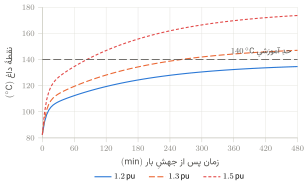
مثال 25.22 (چهار ساعت و نیم در 1.3 پریونیت) پرسش. از 0.7 پریونیت و هوای 35 °C، ترانسفورماتورِ باقیمانده در 1.2، 1.3 و 1.5 پریونیت چه مدت تا نقطهٔ داغِ 140 °C وقت دارد؟
پاسخ. 1.2: هرگز (ماندگار حدودِ 128 °C پس از چهار ساعت)؛ 1.3: حدودِ 261 min؛ 1.5: حدودِ 84 min.
تفسیر. در این وقت کنترلکنندهٔ نیروگاه صادرات را پایین میآورد (فصلِ ۲۰). حد، زمان و عمرِ خرجشده از راهنمای بارگذاری و رتبهٔ اضطراریِ سازنده میآیند و در قاعدههای بهرهبرداری نوشته میشوند. وارسی: خروجیِ برنامه.
ضریبِ نقطهٔ داغ. نسبتِ گرادیانِ نقطهٔ داغ به گرادیانِ میانگین (\(H\)) ویژگیِ طراحی است:
the hot-spot factor H (ratio of hot-spot gradient to mean gradient):
H hot spot at 1.0 pu, 30 C C relative ageing
1.1 104.0 1.00
1.2 106.0 1.26
1.3 108.0 1.59
1.4 110.0 2.00
the hot spot is a design property: winding layout, oil
ducts and leakage flux set H; a higher H means more ageing
at the same load - fibre-optic sensors in the windings
measure it directly, the heat run confirms the design valueمثال 25.23 (دو برابر پیری با یک طراحیِ بدتر) پرسش. با \(H\) برابرِ 1.4 بهجای 1.1، پیری در همان بار چند برابر است؟
پاسخ. دو برابر (نقطهٔ داغ 110 بهجای 104 °C).
تفسیر. آرایشِ سیمپیچ، کانالهای روغن و شارِ نشتی \(H\) را میسازند؛ حسگرِ فیبرِ نوری در سیمپیچ آن را مستقیم میسنجد و آزمونِ گرما مقدارِ طراحی را تأیید میکند. وارسی: \(2^{(110-104)/6} = 2.0\).
توانِ واکنشیِ ترانسفورماتورها. ترانسفورماتور توانِ واکنشیِ \(I^2 X\) مصرف میکند؛ الزامِ توانِ واکنشی در نقطهٔ اتصال است:
reactive power the transformers consume (I^2 X), and the line:
export MW each T (half) Mvar both T Mvar line Mvar total
25 0.33 0.66 0.11 0.77
50 1.32 2.64 0.45 3.09
75 2.97 5.94 1.01 6.95
100 5.28 10.55 1.80 12.35
at full export the transformers take about 10 Mvar: the
plant's reactive capability at the POC is what the units
produce minus this - the requirement is met at the POC, so
the PQ study (ch 20, ch 28) carries the transformers in itمثال 25.24 (ده مگاوار پیش از نقطهٔ اتصال) پرسش. در صادراتِ 100 MW، ترانسفورماتورها و خط چند مگاوار مصرف میکنند؟
پاسخ. ترانسفورماتورها حدودِ 10.6 و خط 1.8؛ جمع حدودِ 12.4 Mvar.
تفسیر. توانایی واکنشیِ نیروگاه در نقطهٔ اتصال برابرِ تولیدِ واحدها منهای این مصرف است؛ مطالعهٔ PQ (فصلهای ۲۰ و ۲۸) ترانسفورماتورها را در خود دارد و اندازهٔ ترانسفورماتورهای واحد (بخش 25.2.9) از همین زنجیره است. وارسی: \(0.12 \times 52.6^2/63 = 5.27\,\text{Mvar}\) برای هر کدام.
- چرا ترانسفورماتورِ باقیمانده چند ساعت وقت دارد؟
- پیری با \(H = 1.2\) نسبت به 1.1؟
- مصرفِ واکنشیِ هر ترانسفورماتور در صادراتِ 80 MW؟
- چرا الزامِ توانِ واکنشی در نقطهٔ اتصال سنجیده میشود؟
25.2.11 تلفِ سالانهٔ همهٔ ترانسفورماتورها: هسته یا سیمپیچ؟
ایده. ارزیابیِ تلف در بخش 25.2.3 برای ترانسفورماتورِ اصلی ضریبهای \(A\) و \(B\) را داد. ولی نیروگاه ۲۸ ترانسفورماتور دارد: دو اصلی و ۲۶ واحد. تلفِ انرژیِ سالانهٔ هر گروه دو بخش دارد:
\[ \begin{aligned} E_0 &= n\,P_0 \cdot 8{,}760\ \text{h} \\ E_\text{k} &= n\,P_\text{k} \cdot \text{LLF} \cdot 8{,}760\ \text{h} \end{aligned} \tag{25.7}\]
که \(\text{LLF}\) ضریبِ بارِ تلف (میانگینِ \(K^2\) در سال) است. ضریبِ بارِ تلفِ هر گروه از سریِ ساعتیِ همان گروه میآید (فصلِ ۱۵)؛ اینجا مقدارهای آموزشیاند: اصلی 0.128 (همان نسبتِ \(B/A\) درسِ ارزیابی)، خورشیدی 0.20، بادی 0.30 و باتری 0.15.
the transformers' losses over a year (loss load factor per group):
group no-load MWh load MWh total MWh
main transformers (2) 613 561 1174
PV unit (10) 394 788 1183
wind unit (12) 736 1577 2313
BESS unit (4) 158 237 394
all 5,063 MWh: no-load 1,901 (38%), load 3,162
the main transformers lose about as much in the cores as in
the windings; the unit transformers, whose load loss is ten
times their no-load loss, lose most in the windings - so A
and B are set per group from its own loss load factor, and
the 26 unit transformers lose 3.3 times as much as the two
main ones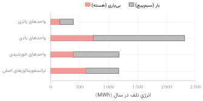
مثال 25.25 (بیستوشش واحدِ کوچک، سه برابرِ دو بزرگ) پرسش. تلفِ سالانهٔ همهٔ ترانسفورماتورها چیست، چه سهمی بیباری است و کدام گروه بیشترین را دارد؟
پاسخ. 5,063 MWh؛ بیباری 1,901 (38 %) و بار 3,162 MWh. واحدهای بادی 2,313 MWh و بیشتریناند؛ ۲۶ واحد روی هم 3.3 برابرِ دو ترانسفورماتورِ اصلی.
تفسیر. در ترانسفورماتورهای اصلی تلفِ هسته و سیمپیچ هماندازهاند (613 و 561 MWh)؛ در واحدها تلفِ بار ده برابرِ بیباری است و ضریبِ بارِ تلفِ بالاتری دارند، پس سیمپیچ غالب است. نتیجه: \(A\) و \(B\) برای هر گروه با ضریبِ بارِ تلفِ خودش تعیین میشوند، و ارزیابیِ تلفِ واحدها (بخش 25.2.9) به اندازهٔ ترانسفورماتورِ اصلی مهم است. 5 GWh در سال حدودِ 1.7 % از انرژیِ 295 GWh نیروگاه است؛ این عدد با سهمِ ترانسفورماتورها در زنجیرهٔ تلفِ مدلِ فصلِ ۱۵ مقایسه و در نسخهٔ بعدیِ مدل بهروز میشود. وارسی: \(2 \times 250 \times 0.128 \times 8{,}760/1{,}000 = 561\).
- ضریبِ بارِ تلف با ضریبِ بار (میانگینِ \(K\) بهجای \(K^2\)) اشتباه شده است.
- یک جفت \(A\) و \(B\) برای همهٔ گروهها به کار رفته است.
- چرا ضریبِ بارِ تلفِ واحدهای بادی از ترانسفورماتورِ اصلی بیشتر است؟
- اگر ضریبِ بارِ تلفِ واحدهای بادی 0.25 بود، تلفِ بارشان؟
- چرا تلفِ هسته با بارِ نیروگاه تغییر نمیکند؟
25.2.12 ترانسفورماتورِ سهسیمپیچه و تپِ ثابتِ واحدِ خورشیدی
ایده. بسیاری از اسکیدهای خورشیدی دو اینورتر را روی یک ترانسفورماتورِ سهسیمپیچه میگذارند: یک سیمپیچِ 33 kV و دو سیمپیچِ 0.6 kV، هر کدام برای یک اینورتر. آزمونِ اتصالِ کوتاه سه امپدانسِ دوبهدو میدهد (\(Z_{12}\)، \(Z_{13}\)، \(Z_{23}\))؛ مدارِ معادلِ ستاره از آنها ساخته میشود:
\[ \begin{aligned} Z_1 &= \tfrac{1}{2}\left(Z_{12} + Z_{13} - Z_{23}\right) \\ Z_2 &= \tfrac{1}{2}\left(Z_{12} + Z_{23} - Z_{13}\right) \\ Z_3 &= \tfrac{1}{2}\left(Z_{13} + Z_{23} - Z_{12}\right) \end{aligned} \tag{25.8}\]
اثبات ساده است: در آزمونِ میانِ ۱ و ۲، سیمپیچِ ۳ باز است و \(Z_{12} = Z_1 + Z_2\)؛ سه معادله و سه مجهول. یکی از سه شاخه ممکن است خیلی کوچک یا حتی منفی شود؛ این عددِ مدل است، نه یک عنصرِ فیزیکی.
def star(z12: float, z13: float, z23: float) -> tuple:
"""Star equivalent of a three-winding transformer from the three
pairwise short-circuit impedances (all on one MVA base)."""
z1 = (z12 + z13 - z23) / 2
z2 = (z12 + z23 - z13) / 2
z3 = (z13 + z23 - z12) / 2
return z1, z2, z3three-winding PV unit transformer: HV 33 kV, LV1 and LV2 0.6 kV,
2.75 MVA each; tests (on 5.5 MVA): H-L1 6 %, H-L2 6 %, L1-L2 11 %
star equivalent: Z_H 0.5%, Z_L1 5.5%, Z_L2 5.5%
bolted fault on LV1, stiff 33 kV: 16.7 pu = 88 kA at 0.6 kV
voltage left on LV2 during that fault: 0.92 pu
a two-winding 5.5 MVA unit at 6 %: 16.7 pu - the same LV fault
level; but with both inverters on its one LV bus, the bus
itself is faulted and the second inverter sees 0 pu
the high L1-L2 impedance keeps one inverter riding through a
fault on its neighbour's winding and limits what each
inverter feeds into the other's fault; the price is a
larger, dearer transformer and two LV boards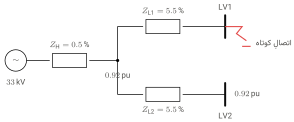
مثال 25.26 (همسایهای که خاموش نمیشود) پرسش. با \(Z_\text{HL1} = Z_\text{HL2} = 6\,\%\) و \(Z_\text{L1L2} = 11\,\%\)، معادلِ ستاره، جریانِ اتصالِ کوتاهِ LV1 و ولتاژِ LV2 در همان خطا چیست؟
پاسخ. \(Z_\text{H} = 0.5\,\%\) و \(Z_\text{L1} = Z_\text{L2} = 5.5\,\%\)؛ جریانِ خطا 16.7 پریونیت (حدودِ 88 kA در 0.6 kV)؛ LV2 روی 0.92 پریونیت میماند.
تفسیر. ترازِ خطای LV همان ترانسفورماتورِ دوسیمپیچهٔ 6 % است؛ سود در جای دیگری است: اینورترِ دوم با خطای همسایه از مدار نمیافتد و سهمش در خطای همسایه با \(Z_\text{L1} + Z_\text{L2}\) محدود است. بها: ترانسفورماتورِ بزرگتر و گرانتر و دو تابلوی LV. وارسی: ولتاژِ نقطهٔ ستاره \(5.5/(0.5 + 5.5) = 0.917\).
جابهجاییِ فاز و حذفِ هارمونیک. اگر LV1 ستاره و LV2 مثلث باشد، دو گروه 30° جابهجاییِ فاز دارند؛ هارمونیکهای پنجم و هفتمِ یک گروه در طرفِ HV مخالفِ دیگری میافتند (همان اثرِ یکسوسازِ دوازدهپالسی در فصلِ ۹):
a 30-degree shift between LV1 (star) and LV2 (delta): 5th harmonic
at HV from two inverters, each 2 % of its own current, locked to it
case residual % of one group
equal load, same harmonic angle 0.00
LV2 at half load 1.00
equal load, 20 deg angle difference 0.69
no shift (both star) 4.00
the shift turns the 5th and 7th of one group against the other
(the 11th and 13th add): only harmonics each inverter makes
in a fixed relation to its own current cancel; distortion
driven by the grid's voltage does not - the harmonic study
(ch 28) uses the makers' measured data, not this idealمثال 25.27 (حذف فقط برای هارمونیکِ قفلشده) پرسش. با 2 % هارمونیکِ پنجم از هر اینورتر، باقیماندهٔ HV در بارِ برابر، نیمبار، و با 20° اختلافِ زاویه چیست؟
پاسخ. 0، 1.0 % و 0.69 %؛ بیجابهجایی 4.0 %.
تفسیر. فقط هارمونیکی حذف میشود که هر اینورتر با رابطهٔ ثابت با جریانِ خودش میسازد (مانندِ اعوجاجِ زمانِ مرده)؛ اعوجاجی که ولتاژِ شبکه میراند حذف نمیشود. مطالعهٔ هارمونیک (فصلِ ۲۸) با دادهٔ اندازهگیریشدهٔ سازنده انجام میشود، نه این حالتِ آرمانی. وارسی: \(|2 - 2e^{j20^\circ}| = 2 \times 2\sin 10^\circ = 0.69\).
تپِ ثابتِ واحدِ خورشیدی. ترانسفورماتورهای واحد معمولاً تپچنجرِ بیبرق (off-circuit) با چند پله دارند؛ تپ یک بار در راهاندازی انتخاب میشود و باید در همهٔ گوشههای کار ولتاژِ پایانهٔ اینورتر را در پنجره نگه دارد. ولتاژِ LV با جریانِ صادراتی از رابطهٔ \(\underline{U}_\text{LV} = \underline{U}_\text{HV}/(1+t) + \underline{I}\,(r + jx)\) حساب میشود (قراردادِ تپ مانندِ بخش 25.2.3: تپِ مثبت LV را پایین میآورد):
off-circuit tap of the PV unit at the end of a feeder (teaching):
33 kV at the unit 1.006 pu at full output (0.6 % feeder rise), 1.000
at night; inverter full-Q window 0.95-1.05 pu at its terminals
corner tap -2.5 % tap 0 tap +2.5 % tap +5 %
full P, producing Q 1.065 1.040 1.016 0.993
full P, absorbing Q 1.015 0.989 0.964 0.940
night, producing Q 1.051 1.026 1.002 0.979
night, absorbing Q 0.999 0.973 0.948 0.924
taps that keep all four corners inside: +0.0 %
with the 33 kV bus moving +/- 1.25 % (main tap changer band):
taps that still hold: none (tap 0 reaches 1.052)
producing Q at full power raises the terminal voltage most;
no fixed tap covers every corner with the bus band, so the
specification states the corner where full Q is limited
(or a wider inverter window) - checked in the ch 28 load flow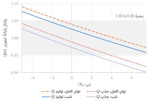
مثال 25.28 (هیچ تپی برای همهٔ گوشهها) پرسش. کدام تپ هر چهار گوشه را در 0.95–1.05 پریونیت نگه میدارد، و با نوسانِ ±1.25 % شینهٔ 33 kV چه؟
پاسخ. فقط تپِ صفر (1.040 تا 0.973)؛ با نوسانِ شینه هیچ تپی، چون تپِ صفر به 1.052 میرسد.
تفسیر. تولیدِ توانِ واکنشی در توانِ کامل ولتاژِ پایانه را بیشترین بالا میبرد. چون هیچ تپِ ثابتی همهٔ گوشهها را نمیپوشاند، مشخصه گوشهای را مینویسد که در آن توانِ واکنشیِ کامل محدود میشود، یا پنجرهٔ پهنترِ اینورتر را میخواهد؛ پخشِ بارِ فصلِ ۲۸ آن را وارسی میکند. این با یافتهٔ مثال 25.20 دربارهٔ رتبهٔ ترانسفورماتور همخوان است. وارسی: \(x\,q = 0.06 \times 0.44 = 2.6\,\%\) افزایش از توانِ واکنشی.
- امپدانسهای دوبهدوی آزمون مستقیم بهجای شاخههای ستاره به کار رفتهاند.
- حذفِ هارمونیک برای هر هارمونیکی فرض شده، حتی آنچه شبکه میراند.
- تپِ ثابت فقط برای توانِ کامل با ضریبِ توانِ یک انتخاب شده است.
- معادلِ ستاره با \(Z_{12} = 7\,\%\)، \(Z_{13} = 7\,\%\) و \(Z_{23} = 12\,\%\)؟
- چرا ممکن است یک شاخهٔ ستاره منفی شود و این چه معنایی دارد؟
- باقیماندهٔ هارمونیکِ پنجم با گروهِ دوم در 75 % بار؟
- چرا تپِ ثابت برای گوشهٔ «توانِ کامل، تولیدِ توانِ واکنشی» سختترین است؟
25.2.13 توانِ واکنشیِ نیروگاه در شب و ترانسفورماتورِ توربین در ناسل یا پایهٔ برج
توازنِ واکنشی در شب. شب که تولیدی نیست، کابلها و خط با ظرفیتِ خود توانِ واکنشی تولید میکنند (\(Q = U^2 \omega C\)) و جریانِ مغناطیسکنندگیِ ترانسفورماتورها آن را مصرف میکند (\(Q \approx i_0\,S_\text{r}\)). آنچه میماند در نقطهٔ اتصال دیده میشود:
reactive balance at night, no output (+ produced, - absorbed):
element Mvar
132 kV line charging (ch 24) +0.30
wind feeders, 3 x 4.4 km +1.05
PV feeders, 3 x 3.0 km (teaching) +0.65
BESS feeders, 2 x 0.5 km +0.07
main transformers, i0 0.20 % -0.25
PV units, 10 x 5.5 MVA, i0 0.8 % -0.44
wind units, 12 x 5.6 MVA, i0 1.2 % -0.81
BESS units, 4 x 5.5 MVA, i0 0.8 % -0.18
net at the POC +0.39 Mvar (exported, leading)
with the PV units switched off at night: +0.83 Mvar
the magnetising of 28 transformers nearly balances the
cables; switching the PV units off saves their no-load
loss (lesson units at night) but doubles the night export
of Mvar - if the grid asks for zero, the inverters' night
service or a small reactor absorbs it (ch 20, ch 28)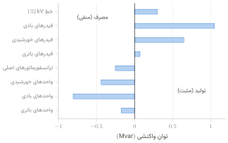
مثال 25.29 (خاموش کردن، دو برابر مگاوار) پرسش. خالصِ توانِ واکنشیِ شبانه در نقطهٔ اتصال چیست، و اگر ترانسفورماتورهای خورشیدی شب خاموش شوند؟
پاسخ. حدودِ +0.39 Mvar صادراتی (پیشفاز)؛ با خاموشیِ واحدهای خورشیدی +0.83 Mvar.
تفسیر. مغناطیسکنندگیِ ۲۸ ترانسفورماتور تقریباً کابلها را خنثی میکند. خاموش کردنِ واحدهای خورشیدی تلفِ بیباری را صرفهجویی میکند (مثال 25.21) ولی مگاوارِ صادراتیِ شب را دو برابر میکند؛ اگر شبکه صفر بخواهد، خدمتِ شبانهٔ اینورترها یا یک راکتورِ کوچک آن را جذب میکند (فصلهای ۲۰ و ۲۸). یک تصمیمِ «سادهٔ» صرفهجویی پیامدِ دیگری دارد؛ دو درس باید با هم دیده شوند. وارسی: \(33^2 \times 314.2 \times 0.21 \times 3.0 = 0.216\,\text{Mvar}\) برای هر فیدرِ خورشیدی.
ترانسفورماتورِ توربین: پایهٔ برج یا ناسل؟ اگر ترانسفورماتور در پایهٔ برج باشد، توان با 690 V از ناسل پایین میآید: جریانی چند هزار آمپری در کابلهای موازیِ بسیار. در ناسل، کابلِ 33 kV با جریانِ کم پایین میآید:
turbine transformer at the tower base or in the nacelle (teaching):
5 MW, 110 m of cable down the tower; LV 690 V: 4,184 A,
12 x 240 mm2 copper per phase; MV 33 kV: one 3 x 95 mm2 cable
LV cable loss at full power 45.7 kW (0.91%)
MV cable loss at full power 0.81 kW
a year (loss load factor 0.3): 118 MWh saved per turbine
in the nacelle: lower losses, 36 LV cables fewer down the
tower; but some 10 t more at the tower top (160 t nacelle,
ch 11), heat and fire inside the nacelle, and access for
maintenance at height - Plant P's base keeps it in the tower
base (A-328); the turbine maker's design decidesمثال 25.30 (صدوهجده مگاواتساعت برای هر توربین) پرسش. تلفِ کابلِ LV و MV در برج 110 m و صرفهٔ سالانهٔ ترانسفورماتورِ ناسل چیست؟
پاسخ. 45.7 kW (0.91 %) در برابرِ 0.81 kW در توانِ کامل؛ حدودِ 118 MWh در سال برای هر توربین.
تفسیر. ناسل تلفِ کمتر و ۳۶ کابلِ کمتر دارد؛ ولی حدودِ 10 t به جرمِ بالای برج میافزاید (160 t ناسل در فصلِ ۱۱)، گرما و حریق را درونِ ناسل میبرد، و نگهداری در ارتفاع است. پایهٔ نیروگاهِ P ترانسفورماتور را در پایهٔ برج نگه میدارد (A-328)؛ طراحیِ سازندهٔ توربین تصمیم میگیرد و این حساب پرسشِ بازبینی است. وارسی: \(3 \times 4{,}184^2 \times 0.095 \times 0.11/12 = 45.7\,\text{kW}\).
- توانِ واکنشیِ 10 km کابلِ 33 kV با 0.21 µF/km؟
- چرا خاموش کردنِ ترانسفورماتورها توازنِ واکنشی را جابهجا میکند؟
- تلفِ کابلِ LV اگر طولِ برج 130 m باشد؟
- سه پیامدِ گذاشتنِ ترانسفورماتور در ناسل را نام ببرید.
25.2.14 ترانسفورماتورِ واحدِ باتری: دو چرخهٔ کوتاه در روز
ایده. ترانسفورماتورِ واحدِ باتری (سناریوی S1) الگوی بارِ دیگری دارد: بیشترِ روز بیکار، دو بار در روز دو ساعت نزدیکِ رتبه (شارژ در ظهر و دشارژ در عصر؛ فصلِ ۱۹). مدلِ گرماییِ پویا (بخش 25.2.6) نشان میدهد که روغن با ثابتِ زمانیِ سهساعته در دو ساعت به مقدارِ ماندگار نمیرسد:
the battery unit transformer on a hot day: charge 11-13 h at
0.95 pu, discharge 19-21 h at 0.95 pu, idle otherwise
hottest spot 97 C; a steady 0.95 pu at 45 C would give 117 C
life used in this day: 0.06 days
two hours at full load do not heat the oil to its steady
value (time constant three hours): the cyclic battery duty
ages the unit far less than its rating suggests - but the
winding follows within minutes, so the hot-spot gradient
and the gas relay's view of each cycle still matter; the
maker's dynamic rating may allow a smaller unit
مثال 25.31 (نوددوهفت، نه صدوهفده) پرسش. با دو چرخهٔ دوساعتهٔ 0.95 پریونیت در روزِ گرم، داغترین نقطه و عمرِ مصرفشده چیست؟
پاسخ. حدودِ 97 °C در برابرِ 117 °C ماندگار؛ عمرِ مصرفشده حدودِ 0.06 روز در این روز.
تفسیر. کارِ چرخهایِ باتری ترانسفورماتور را بسیار کمتر از آنچه رتبهاش میگوید پیر میکند؛ ولی سیمپیچ در چند دقیقه دنبال میکند، پس گرادیانِ نقطهٔ داغ و دیدِ رلهٔ گاز در هر چرخه مهم میماند. رتبهٔ پویای سازنده ممکن است واحدِ کوچکتری را مجاز کند؛ ولی توانِ واکنشیِ خدمت (فصلِ ۲۰) و اضافهبارِ کوتاهِ اینورتر را هم باید پوشاند. وارسی: \(1 - e^{-2/3} = 0.49\): در دو ساعت روغن نیمی از راهِ ماندگار را میرود.
- اگر چرخهها چهارساعته باشند، روغن چه کسری از راهِ ماندگار را میرود؟
- چرا گرادیانِ نقطهٔ داغ در هر چرخه به مقدارِ ماندگارش میرسد؟
25.3 ب. منطقِ طراحی و ساخت
25.3.1 توالیِ طراحی و وابستگیها
ایده. طراحیِ ترانسفورماتور از الزامها آغاز میشود و از این گامها میگذرد: مقدارِ نامی ← هسته و شار و دور ← رسانا و چگالیِ جریان و آرایشِ سیمپیچها ← هماهنگیِ عایق ← امپدانسِ نشتی ← تلفها ← سرمایش و افزایشِ دما ← تکیهگاهِ مکانیکی ← مخزن و لوازم ← راستیآزمایی. هر انتخاب چند ویژگی را با هم جابهجا میکند:
design dependencies a reviewer can check (simplified relations):
change effect
flux density B up 10 % turns down 9 %, core loss up ~21 %
current density J up 10 % copper section down 9 %, load loss up ~10 %
impedance up (more leakage) fault current down, regulation up
turns up 10 % (same window) leakage reactance up ~21 % (x ~ N^2)
cooling ONAN -> ONAF rating up for the same active part
each choice moves cost, losses, impedance and size together;
the maker's design software balances them against the
specification - simplified equations show the direction,
not the designمثال 25.32 (ده درصد دورِ بیشتر) پرسش. اگر سازنده برای کاهشِ تلفِ هسته دور را 10 % بیشتر کند (با همان پنجره)، چه چیزهایی عوض میشوند؟
پاسخ. چگالیِ شار حدودِ 9 % کم و تلفِ هسته کم میشود، اما راکتانسِ نشتی با \(N^2\) حدودِ 21 % بالا میرود: امپدانس از بازهٔ مشخصه بیرون میرود مگر هندسه عوض شود؛ و رسانای بیشتر در همان پنجره یعنی چگالیِ جریانِ بیشتر یا پنجرهٔ بزرگتر.
تفسیر. بازبین نمیتواند ترانسفورماتور را طراحی کند، اما میتواند بپرسد هر تغییر چه چیزی را جابهجا کرده است؛ معادلههای ساده جهت را نشان میدهند، نه طرح را. طراحیِ مختصِ سازنده و نرمافزارِ او جای خود دارد و این فصل جانشینِ آن نیست. وارسی: \(1.1^2 = 1.21\).
25.3.2 هسته، تلفِ بیباری و اجزای ترانسفورماتور
core mass and no-load loss (teaching steel data):
steel W/kg at 1.7 T building factor core mass for P0 = 35 kW
0.80 1.10 39.8 t
0.80 1.20 36.5 t
0.90 1.10 35.4 t
0.90 1.20 32.4 t
1.05 1.10 30.3 t
1.05 1.20 27.8 t
better steel (lower W/kg) and careful cutting and stacking
(a lower building factor: the joints add loss) give the
same no-load loss with a different core; the maker's
guarantee is checked by the no-load test, not by this sum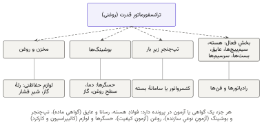
مثال 25.33 (هستهای برای سیوپنج کیلووات) پرسش. برای 35 kW تلفِ بیباری با فولادِ 0.90 W/kg و ضریبِ ساختِ 1.15، جرمِ هسته چقدر است؟
پاسخ. حدودِ \(35{,}000/(0.90 \times 1.15) = 33.8\,\text{t}\)؛ با فولادِ 0.80 و ضریبِ 1.10 حدودِ 39.8 t.
تفسیر. فولادِ بهتر یا برش و چیدنِ دقیقتر (اتصالهای پلهای که تلفِ اتصال را کم میکنند) همان تلف را با هستهٔ دیگری میدهد. تضمینِ سازنده را آزمونِ بیباری وارسی میکند، نه این جمع. وارسی: \(35/(0.8 \times 1.1) = 39.8\).
- ده گامِ توالیِ طراحی را بنویسید.
- افزایشِ 10 % چگالیِ شار چه اثرهایی دارد؟
- اجزای ترانسفورماتورِ روغنی را نام ببرید.
- چرا معادلههای ساده جانشینِ طراحیِ سازنده نیستند؟
25.3.3 مسیرِ کارخانه، دروازههای کیفیت و روغنی در برابرِ خشک
ایده. ترانسفورماتور در کارخانه از طرحِ تأییدشده و ردیابیِ مواد آغاز و با آزمونها و آمادهسازیِ حمل پایان مییابد. مسیرِ روغنی و خشک (رزینی) در چند گام فرق دارند:
factory route of a transformer (concept):
oil-filled:
1. approved design and material traceability
2. core cutting and stacking (step-lap joints)
3. winding of the coils, inspection of conductors and turns
4. insulation assembly (pressboard, spacers, barriers)
5. lead connection and active-part clamping
6. drying of the active part to the maker's moisture target
7. tanking, vacuum and oil filling with processed oil
8. sealing, leak check, finishing, tests, transport preparation
dry-type (cast resin):
1. approved design and material traceability
2. core cutting and stacking
3. winding (foil or strip), cast or impregnated in resin
4. curing under controlled temperature
5. assembly in the frame, leads and taps
6. enclosure, sensors, tests, transport preparation
drying, vacuum and oil processing need purpose-built plant
and approved procedures; their records (moisture, oil
quality, vacuum hold) belong in the dossierدروازههای کیفیت. هر گام یک دروازه با هدف و شاهد دارد:
quality gates in the factory (purpose, not procedure):
gate proves that
material certificates core steel, copper, pressboard, oil are
as specified
dimensional checks core and windings are as designed
winding and lead inspection no damage, joints and clearances right
moisture control after drying insulation is dry before tanking
leak check the tank and seals hold
ratio, polarity, vector group the windings are connected right
winding resistance joints are sound; base for the load-loss
test
losses and impedance the guarantees and the system values
dielectric tests the insulation withstands its levels
temperature rise (type or special) the cooling meets the rating
each gate leaves a record; the factory acceptance test
(FAT) is witnessed by the owner, and the dossier is
reviewed against the contract (worked example, section D)مثال 25.34 (رطوبت پیش از روغن) پرسش. چرا خشککردنِ بخشِ فعال یک دروازه است و شاهدش چیست؟
پاسخ. رطوبت در عایقِ کاغذی استحکامِ دیالکتریک را کم و پیرشدن را تند میکند؛ پس پیش از مخزنگذاری، رطوبتِ عایق تا هدفِ سازنده پایین آورده و سنجیده میشود. شاهد: سوابقِ خشککردن و اندازهگیریِ رطوبت.
تفسیر. خشککردن، خلأ، روغنِ داغ و آزمونهای دیالکتریک به تأسیساتِ ویژه، روالهای تأییدشده و کارکنانِ صلاحیتدار نیاز دارند؛ این فصل فقط هدف و شاهد را میگوید. سوابقِ آنها بخشی از پروندهاند که خریدار بازبینی میکند (بخش 25.5).
oil-filled and dry-type unit transformers (teaching data):
oil skid dry in tower
rating MVA 5.5 5.6
no-load loss kW 4.5 7.0
load loss kW 45.0 50.0
oil m3 2.6 0.0
site needs: oil skid - bund, outdoor, sampling; dry type -
indoor, ventilation, cleaner air, no oil fire load
the dry unit costs more loss and money but fits inside a
tower where an oil fire would be unacceptable; outdoors on
a skid, oil is cheaper and cools betterمثال 25.35 (روغن روی اسکید، خشک در برج) پرسش. ترانسفورماتورِ واحدِ روغنی و خشک را در تلف، روغن و نیازهای محل مقایسه کنید.
پاسخ. روغنی 4.5 و 45 kW تلف با 2.6 m³ روغن؛ خشک 7.0 و 50 kW بی روغن. روغنی حوضچه، فضای باز و نمونهگیری میخواهد؛ خشک فضای بسته، تهویه و هوای تمیزتر.
تفسیر. درونِ برجِ توربین، آتشِ روغن پذیرفتنی نیست و ترانسفورماتورِ خشک با تلف و قیمتِ بیشتر انتخاب میشود؛ بیرون روی اسکید، روغن ارزانتر است و بهتر خنک میکند. هر انتخاب رابطهای حریق و تهویهٔ خودش را دارد (بخش 25.7). وارسی: اختلافِ تلفِ بیباری 2.5 kW در هر واحد در تمامِ سال.
- هشت گامِ مسیرِ ترانسفورماتورِ روغنی را بنویسید.
- ده دروازهٔ کیفیت و هدفِ هر کدام را بنویسید.
- چرا ترانسفورماتورِ برجِ توربین خشک است؟
- کدام کارهای کارخانه به تأسیساتِ ویژه نیاز دارند؟
25.3.4 درونِ سیمپیچ: ضربه، نیرو، امپدانس و تلفِ گردابی
توزیعِ ولتاژِ ضربه. ضربهٔ تند (صاعقه) در لحظهٔ نخست با ظرفیتها تقسیم میشود، نه با دورها. با ظرفیتِ سری \(C_\text{s}\) و ظرفیت به زمین \(C_\text{g}\)، \(\alpha = \sqrt{C_\text{g}/C_\text{s}}\) و:
\[ \frac{u(x)}{U} = \frac{\sinh\left(\alpha(1 - x)\right)}{\sinh\alpha} \tag{25.9}\]
initial impulse voltage along a disc winding (neutral earthed):
u(x) / U = sinh(a (1 - x)) / sinh(a); first disc gets about a / N
80 discs, 650 kV impulse
alpha first disc kV x uniform winding type
10.0 76 9.4 plain disc
5.0 39 4.8 partly interleaved
2.5 20 2.5 interleaved
a steep impulse first divides by capacitance, not by turns:
the line-end discs carry many times their share; interleaving
the turns raises the series capacitance and lowers alpha -
why the line end of an HV winding is built differently, and
why the impulse test (lesson C) is a type and routine
evidence the reviewer reads, not a site trial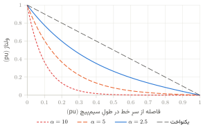
مثال 25.36 (دیسکِ نخست ده برابر) پرسش. در سیمپیچی با ۸۰ دیسک و ضربهٔ 650 kV، دیسکِ نخست با \(\alpha = 10\) و \(\alpha = 2.5\) چه ولتاژی میبیند؟
پاسخ. حدودِ 76 kV (۹٫۴ برابرِ سهمِ یکنواخت) و 20 kV (۲٫۵ برابر).
تفسیر. درهمپیچیِ دورها ظرفیتِ سری را بالا و \(\alpha\) را پایین میبرد؛ برای همین سرِ خطِ سیمپیچِ فشارِ قوی متفاوت ساخته میشود. آزمونِ ضربه شاهدِ نوعی و جاریِ آن است. وارسی: \(650 \times (1 - \sinh(9.875)/\sinh(10)) = 76\).
فشارِ اتصالِ کوتاه روی سیمپیچ. میدانِ نشتی در خطا بسیار بزرگ است و فشاری متناسب با مجذورِ آن روی سیمپیچ میگذارد (\(p = B^2/2\mu_0\)):
short-circuit pressure on the 33 kV winding (teaching geometry):
B = mu0 N i / h; pressure p = B^2 / (2 mu0); hoop stress p r / t
uk % peak pu peak kA B T p MPa hoop MPa (60 % Cu)
12 22.4 14.2 2.31 2.13 32.6
10 26.9 17.1 2.78 3.07 46.9
8 33.6 21.4 3.47 4.80 73.3
the force grows with the square of the fault current: a
lower impedance (less voltage drop, smaller losses) costs
winding strength - the impedance of lesson A is chosen with
the forces in view; the inner winding is pressed inward and
must not buckle - the short-circuit withstand is proved by
the maker's test or calculation evidenceمثال 25.37 (امپدانسِ کم، نیروی زیاد) پرسش. با امپدانسِ 12، 10 و 8 % تنشِ حلقویِ سیمپیچِ 33 kV چیست؟
پاسخ. حدودِ 33، 47 و 73 MPa.
تفسیر. نیرو با مجذورِ جریانِ خطا بالا میرود؛ امپدانسِ کمتر (افتِ ولتاژِ کمتر) استحکامِ بیشتر میخواهد. سیمپیچِ درونی به درون فشرده میشود و نباید کمانش کند؛ تحملِ اتصالِ کوتاه با آزمون یا شاهدِ محاسبهٔ سازنده ثابت میشود. وارسی: \(p = 2.31^2/(2 \times 1.257 \times 10^{-6}) = 2.1\,\text{MPa}\).
امپدانس از هندسه. شارِ نشتی در شکافِ میانِ سیمپیچها و درونِ آنهاست؛ یک فرمِ آموزشی:
\[ u_x = 2\pi f \mu_0\,\frac{\pi D_\text{m}\,N I}{h\,V_\text{t}}\left(a_{12} + \frac{a_1 + a_2}{3}\right) \tag{25.10}\]
impedance from the winding geometry (teaching formula):
ux = 2 pi f mu0 pi Dm N I / (h Vt) x (a12 + (a1 + a2) / 3)
N 194, I 636 A, Vt 169.8 V, Dm 1.1 m, h 1.5 m, a1 0.06 m, a2 0.09 m
gap a12 m height h m ux %
0.130 1.50 11.9
0.153 1.50 13.4
0.130 1.35 13.2
the leakage flux lives in the gap and the windings: a wider
gap or a shorter winding raises the impedance - the 13.4 %
of the test dossier (lesson D) is about 23 mm more gap or a
winding about 11 % shorter than designed; the maker's
calculation predicts it within a few per cent, and the
contract tolerance closes the restمثال 25.38 (یکونیم درصد در بیستوسه میلیمتر) پرسش. امپدانسِ 13.4 % در پروندهٔ آزمون (بخش 25.5.1) با کدام تغییرِ هندسه سازگار است؟
پاسخ. شکافِ حدودِ 23 mm بیشتر یا سیمپیچی حدودِ 11 % کوتاهتر.
تفسیر. محاسبهٔ سازنده امپدانس را با چند درصد دقت پیشبینی میکند؛ رواداریِ قرارداد بقیه را میپوشاند. وقتی اندازه از رواداری بیرون است، پرسشِ بازبینی این است که کدام بُعد عوض شده و پیامدش بر جریانِ خطا، تنظیمِ ولتاژ و نیرو چیست. وارسی: \(0.660 \times 0.18 = 0.119\).
تلفِ گردابی در رشتههای سیم. تلفِ گردابیِ هر رشته با مجذورِ ضخامتش بالا میرود:
eddy loss in the winding strands grows with thickness squared:
strand mm eddy share of load loss load loss kW value k u (B 0.88)
2.5 10.0% 250.0 0.0
1.8 5.2% 239.1 9.6
1.2 2.3% 232.5 15.4
thin strands, transposed along the winding (continuously
transposed cable), cut the eddy loss and the hot spots it
makes; the saving is priced with the B factor of lesson A -
the reason loss evaluation reaches into the winding designمثال 25.39 (رشتهٔ نازک، پولِ قابلِ شمارش) پرسش. با رشتهٔ 1.2 mm بهجای 2.5 mm تلفِ بار و ارزشِ آن چه میشود؟
پاسخ. حدودِ 232.5 kW بهجای 250 kW، ارزشِ حدودِ 15 هزار واحد با ضریبِ B.
تفسیر. کابلِ پیوستهجابهجاشده (CTC) با رشتههای نازکِ عایقدار تلفِ گردابی و نقطههای داغ را کم میکند؛ ارزیابیِ تلف (بخش 25.2.4) تا طراحیِ سیمپیچ میرسد. وارسی: \(10\,\% \times (1.2/2.5)^2 = 2.3\,\%\).
- امپدانسِ کم برای افتِ ولتاژِ کمتر بیتوجه به نیروی اتصالِ کوتاه خواسته شده است.
- امپدانسِ بیرون از رواداری بیپرسش از هندسه پذیرفته یا رد شده است.
- آزمونِ ضربه آزمونی در محل فرض شده است.
- چرا ضربهٔ تند با ظرفیتها تقسیم میشود؟
- دیسکِ نخست با \(\alpha = 5\) و ۶۰ دیسک در 550 kV؟
- فشار روی سیمپیچ با امپدانسِ 15 % نسبت به 12 % چند برابر است؟
- با شکافِ 0.14 m امپدانس چه میشود؟
- سهمِ گردابی با رشتهٔ 1.8 mm؟
25.3.5 کنسرواتور، انبساطِ روغن و رادیاتورها
انبساطِ روغن. روغن با دما منبسط میشود: \(\Delta V = \beta V \Delta T\). کنسرواتور این تغییر را میگیرد، یا در مخزنِ آببند، بالشتکِ گاز:
oil expansion and the conservator (teaching):
mean oil C volume change m3 (from 20 C)
-10 -0.49
20 +0.00
60 +0.66
100 +1.32
swing -10 to 100 C: 1.82 m3; conservator about 2.4 m3 with margin
a sealed tank instead keeps a gas cushion that is squeezed
and expanded: its pressure swing sets the tank's design; the
conservator's breather (silica gel or a membrane) keeps the
water of the air out of the oil (lesson moisture above)مثال 25.40 (دو مترمکعب و نیم) پرسش. حجمِ تغییرِ 22 m³ روغن از −10 تا 100 °C با \(\beta = 7.5 \times 10^{-4}\) چیست؟
پاسخ. 1.82 m³؛ کنسرواتورِ حدودِ 2.4 m³ با حاشیه.
تفسیر. تنفسگیرِ کنسرواتور (سیلیکاژل یا غشا) آبِ هوا را از روغن دور نگه میدارد (بخش 25.2.6)؛ مخزنِ آببند فشارِ بالشتک را در طراحیِ مخزن میآورد. وارسی: \(7.5 \times 10^{-4} \times 22 \times 110 = 1.82\).
رادیاتورها. تلف باید از سطحِ رادیاتورها به هوا برود (\(A = P/(h \Delta T)\)):
radiator area for the losses (teaching heat transfer):
mode load MVA losses kW h W/(m2 K) area m2 at 40 K
ONAN 50 192 6 802
ONAF 63 285 12 594
the same radiators carry the full rating when fans double
the air-side heat transfer - the ONAN/ONAF pair of the
specification is one radiator bank with fans that switch
on with the oil temperature; the fans are an auxiliary
load (ch 23) and their failure an alarm with a load limitمثال 25.41 (یک بانکِ رادیاتور، دو رتبه) پرسش. با 6 و 12 W/(m²·K) برای هوای آرام و فندار و اختلافِ 40 K، سطحِ لازم برای ONAN 50 MVA و ONAF 63 MVA چیست؟
پاسخ. حدودِ 802 و 594 m²: همان رادیاتورها با فن رتبهٔ کامل را میبرند.
تفسیر. فنها با دمای روغن روشن میشوند و بارِ کمکیاند (فصلِ ۲۳)؛ خرابیِ آنها هشدار و حدِ بار است. وارسی: \(192{,}000/(6 \times 40) = 800\).
- کنسرواتور بیحسابِ بازهٔ دمای روغن اندازه شده است.
- خرابیِ فنها بیهشدار و بیحدِ بار مانده است.
- حجمِ تغییرِ روغن از 20 تا 80 °C؟
- چرا کنسرواتور تنفسگیر دارد؟
- چرا رتبهٔ ONAF با همان رادیاتورها بیشتر است؟
25.3.6 ترانسفورماتورِ خشک در برجِ توربین: هوا و ارتفاع
ایده. ترانسفورماتورِ خشکِ توربین (بخش 25.3.3) در پایهٔ برج گرمای تلفهایش را به هوای برج میدهد؛ آن هوا باید عوض شود: \(\dot{V} = P/(\rho c \Delta T)\):
cooling the dry-type transformer in the turbine tower (teaching):
losses at full output 57 kW (no-load 7, load 50)
air rise K air flow m3/s at 2,000 m altitude (air 0.80 x)
10 4.73 5.91
15 3.15 3.94
20 2.36 2.95
the heat must leave the tower base through filtered inlets
and outlets or a duct; thin air at altitude carries less
heat per cubic metre, so dry types are derated or given
more air - the maker's rating at the site's altitude and
temperature is part of the turbine supplier's evidenceمثال 25.42 (چهار مترمکعب در ثانیه) پرسش. برای 57 kW تلف با 15 K افزایشِ هوا چه جریانِ هوایی لازم است، و در 2,000 m ارتفاع؟
پاسخ. حدودِ 3.15 m³/s و در ارتفاع 3.94 m³/s (چگالیِ هوا 0.80).
تفسیر. هوای رقیق گرمای کمتری در هر مترمکعب میبرد؛ ترانسفورماتورِ خشک در ارتفاع با رتبهٔ کاهشیافته یا هوای بیشتر کار میکند و رتبهٔ سازنده در ارتفاع و دمای محل جزءِ شاهدهای سازندهٔ توربین است. ورودیها و خروجیهای هوا فیلتر دارند تا گرد و نمک به سیمپیچِ رزینی نرسد. وارسی: \(57{,}000/(1.2 \times 1{,}005 \times 15) = 3.15\).
- هوای لازم برای 40 kW با 10 K افزایش؟
- چرا ارتفاع رتبهٔ ترانسفورماتورِ خشک را کم میکند؟
25.3.7 مس، رطوبت و خلأ: سه وارسیِ ساده روی پیشنهاد و کارخانه
مس در برابرِ تلفِ بار. تلفِ \(I^2R\) در سیمپیچ با چگالیِ جریان \(J\) و حجمِ مس \(V\) چنین است:
\[ P_{I^2R} = \rho\,J^2\,V \tag{25.11}\]
پس تلفِ کم یا با مسِ بیشتر (چگالیِ جریانِ کمتر) به دست میآید یا با طراحیِ بهترِ تلفهای گردابی و پراکنده؛ نه بیهزینه:
copper mass against load loss: P = rho J^2 x volume (a review check)
current density A/mm2 copper t for 200 kW of I2R kW per tonne
2.5 13.6 14.7
3.0 9.4 21.2
3.5 6.9 28.9
the I2R part of the 250 kW load loss (the rest is eddy and
stray loss) needs about 9 t of copper at 3 A/mm2: a bid
that promises low load loss with little copper is checked
against this before it is believed; more copper (lower J)
buys lower loss - the B factor of lesson A prices itمثال 25.43 (نه تن مس) پرسش. برای بخشِ \(I^2R\) از تلفِ بار (حدودِ 200 kW از 250 kW) در 3 A/mm² چند تن مس لازم است؟
پاسخ. حدودِ 9.4 t؛ در 2.5 A/mm² 13.6 t.
تفسیر. پیشنهادی که تلفِ بارِ کم با مسِ کم وعده میدهد با همین حساب وارسی میشود پیش از آنکه باور شود؛ مسِ بیشتر تلفِ کمتر میخرد و ضریبِ \(B\) درسِ ارزیابی قیمتش را میگذارد. جرمِ مس در فهرستِ جرمهای پیشنهاد هست. وارسی: \(2.1 \times 10^{-8} \times (3 \times 10^6)^2 = 189\,\text{kW/m}^3\) و \(200/189 \times 8.9 = 9.4\,\text{t}\).
آبی که خشککردن بیرون میکشد. عایقِ کاغذیِ تازه چند درصد آب دارد و باید به کمتر از یک درصد برسد (بخش 25.3.3):
water removed from the insulation in the factory's drying (teaching):
8 t of paper and pressboard
from % to % water removed kg
8.0 0.5 600
8.0 1.0 560
5.0 0.5 360
hundreds of kilograms of water come out under heat and
vacuum over days; the end point is proved by the drying
record (water extracted per hour falling to the maker's
limit) - the paper stays dry only if the tank is filled
and sealed without delay (lesson B, quality gates)مثال 25.44 (ششصد کیلوگرم آب) پرسش. از 8 t کاغذ و پرسبورد، با رطوبتِ اولیهٔ 8 % تا 0.5 %، چقدر آب بیرون میآید؟
پاسخ. حدودِ 600 kg.
تفسیر. صدها کیلوگرم آب در چند روز با گرما و خلأ بیرون میآید؛ پایانِ کار با سابقهٔ خشککردن ثابت میشود (آبِ بیرونآمده در هر ساعت تا حدِ سازنده کم شده باشد). کاغذِ خشک فقط وقتی خشک میماند که مخزن بیدرنگ پر و بسته شود؛ این یکی از دروازههای کیفیت است. وارسی: \(8{,}000 \times 0.075 = 600\).
مخزن زیرِ خلأ. برای پرکردنِ روغن، مخزن تا خلأ تخلیه میشود و فشارِ هوا از بیرون بر دیوارهها مینشیند:
the tank under full vacuum (atmospheric pressure outside, teaching):
wall m x m force MN per stiffener (6 stiffeners) kN
3.0 x 4.0 1.22 203
6.0 x 4.0 2.43 405
6.0 x 2.5 1.52 253
a 6 m by 4 m wall carries 2.4 MN when the tank is evacuated
for oil filling: the stiffeners and the wall thickness are
designed for it, and the vacuum and pressure tests of the
tank (purpose: no permanent deformation, no leak) are part
of the factory record - vacuum work belongs to the maker's
equipment and procedureمثال 25.45 (دوونیم مگانیوتن روی یک دیواره) پرسش. دیوارهٔ 6 × 4 m زیرِ خلأِ کامل چه نیرویی میگیرد؟
پاسخ. حدودِ 2.43 MN؛ با شش تقویتکننده حدودِ 405 kN هر کدام.
تفسیر. تقویتکنندهها و ضخامتِ دیواره برای همین طراحی میشوند و آزمونهای خلأ و فشارِ مخزن (هدف: بیتغییرشکلِ ماندگار، بینشتی) در سوابقِ کارخانهاند. کارِ خلأ با تجهیزات و روالِ سازنده انجام میشود؛ این کتاب فقط هدف و شاهد را میگوید. وارسی: \(101{,}300 \times 24 = 2.43 \times 10^6\,\text{N}\).
- تلفِ بارِ پیشنهاد بیوارسیِ جرمِ مس پذیرفته شده است.
- پایانِ خشککردن با زمان اعلام شده، نه با سابقهٔ آبِ بیرونآمده.
- مخزن بیگواهیِ آزمونِ خلأ برای پرکردن آماده دانسته شده است.
- مسِ لازم برای 200 kW در 3.5 A/mm²؟
- آبِ بیرونآمده از 6 t کاغذ از 7 % تا 0.5 %؟
- نیروی خلأ روی دیوارهٔ 5 × 3 m؟
- چرا کاغذِ خشکشده باید بیدرنگ زیرِ روغن برود؟
25.3.8 آفتاب روی مخزنِ ترانسفورماتورِ واحدِ خورشیدی
ایده. ترانسفورماتورِ واحدِ خورشیدی در فضای باز و زیرِ همان آفتابی است که نیروگاه را میگرداند. مخزن بخشی از تابش را جذب میکند (\(q = \alpha\,G\,A\)) و این گرما به تلفها افزوده میشود؛ افزایشِ دمای روغن تقریباً با توانِ 0.8 گرمای کل بالا میرود (بخش 25.2.4):
sun on a PV unit transformer's tank (teaching; noon, 1 kW/m2 on
12 m2 of lid and sides; full load, losses 49.5 kW)
paint absorbed extra kW top-oil rise x +K on 52 K
dark grey 0.80 9.6 1.152 7.9
light grey 0.50 6.0 1.096 5.0
white 0.25 3.0 1.048 2.5
at a PV site the sun is strongest exactly when the unit is
fully loaded: a dark tank adds about 8 K to the top oil -
the same as running at 1.11 pu without sun; a light paint or a
sun roof is cheap, and the maker's rating states whether it
includes solar gain (the specification asks)مثال 25.46 (رنگ، یک ارزانترین خنککننده) پرسش. مخزنِ خاکستریِ تیره (\(\alpha = 0.8\)) در ظهر با 12 m² رو به آفتاب چه گرمایی میگیرد و افزایشِ روغن چقدر بالا میرود؟
پاسخ. حدودِ 9.6 kW؛ افزایشِ روغن حدودِ 8 K، همارزِ کار در 1.11 پریونیت بیآفتاب. رنگِ سفید آن را به حدودِ 2.5 K میرساند.
تفسیر. در نیروگاهِ خورشیدی آفتاب درست وقتی بیشینه است که ترانسفورماتور تمامبار است؛ رنگِ روشن یا سایهبان ارزان است و مشخصه میپرسد که رتبهٔ سازنده گرمای آفتاب را در بر دارد یا نه. با یافتهٔ مثال 25.20 (یک درصد کمبودِ رتبه) این درس نشان میدهد که حاشیهٔ ترانسفورماتورِ واحد کوچک است. وارسی: \((59.1/49.5)^{0.8} = 1.152\) و \(52 \times 0.152 = 7.9\).
- با \(\alpha = 0.5\) و 8 m²، گرمای جذبشده؟
- چرا آفتاب برای ترانسفورماتورِ واحدِ خورشیدی مهمتر از ترانسفورماتورِ واحدِ بادی است؟
25.4 پ. آزمون، حمل و نصب
25.4.1 آزمونها و هدفِ هر کدام
ایده. آزمونهای ترانسفورماتور سه ردهاند: روزمره (هر واحد: نسبت، قطبیت و گروهِ برداری، مقاومتِ سیمپیچ، تلف و امپدانس، آزمونهای دیالکتریک)، نوعی (یک طرح: افزایشِ دما و مانند آن) و ویژه (به خواستِ قرارداد: صدا، تحملِ اتصالِ کوتاه و مانند آن). استاندارد (IEC 60076-1:2011 و بخشهای دیگرِ این سری) هدف و روشِ آنها را تعریف میکند؛ قرارداد میگوید کدامها، با کدام رواداری و با چه تصمیمی در صورتِ شکست.
| آزمون | هدف | اگر نپذیرفت |
|---|---|---|
| نسبت، قطبیت، گروهِ برداری | اتصالها درستاند | خطای ساخت: اصلاح پیش از ادامه |
| مقاومتِ سیمپیچ | اتصالها سالماند؛ پایهٔ آزمونِ تلفِ بار | بررسیِ اتصال یا سرسیم |
| تلفِ بیباری و جریان | تضمین و هسته | کسر از قیمت یا رد، طبقِ قرارداد |
| تلفِ بار و امپدانس | تضمین و مقدارهای سامانه | مطالعهٔ دوباره یا رد |
| دیالکتریک | عایق سطحهایش را تحمل میکند | تحقیق، تعمیر، آزمونِ دوباره |
| افزایشِ دما | سرمایش برای مقدارِ نامی کافی است | کاهشِ مقدارِ نامی، تعمیر یا رد |
آزمونهای ولتاژِ بالا، خلأ، فشار، روغنِ داغ و دیالکتریک به تأسیساتِ ساختهشده برای همین کار، روالهای تأییدشده و کارکنانِ صلاحیتدار نیاز دارند. این کتاب هدف و شاهد را میگوید، نه روش را. تفسیرِ گزارش و پذیرش با معیارهای قرارداد و استانداردِ مربوط است.
25.4.2 حمل، نصب و پیش از برقدار کردن
transport and installation of a 63 MVA unit (teaching):
mass in service 95 t; transport mass 72 t (oil and radiators off)
transport: the route survey (bridges, bends, overhead lines),
an impact recorder on the tank, the tank filled with dry gas
or oil, and a check of the record on arrival
installation: foundation level and loading, assembly of
bushings and coolers, oil processing to the maker's limits,
checks before energising - each a record, done under the
maker's supervision (vacuum, hot oil and high voltage work
belong to purpose-built equipment and qualified staff)مثال 25.47 (ثبتکنندهٔ ضربه) پرسش. جرمِ حمل چقدر است و سه شاهدِ حملِ سالم چیست؟
پاسخ. 72 t (بی روغن و رادیاتور) در برابرِ 95 t در کار. شاهدها: بررسیِ مسیر (پلها، خمها، خطهای هوایی)، ثبتکنندهٔ ضربه روی مخزن و وارسیِ آن هنگامِ رسیدن، پر بودنِ مخزن از گازِ خشک یا روغن با فشارِ پایششده.
تفسیر. ضربهٔ حمل میتواند بخشِ فعال را جابهجا کند بی آنکه از بیرون دیده شود؛ ثبتکننده و آزمونهای پس از رسیدن آن را نشان میدهند. جرمِ حمل ورودیِ لجستیک است (فصلِ ۴۶). وارسی: \(95 - 72 = 23\,\text{t}\) روغن و لوازم.
- سه ردهٔ آزمونِ ترانسفورماتور را تعریف کنید.
- هدفِ آزمونِ مقاومتِ سیمپیچ چیست؟
- اگر افزایشِ دما از حد بگذرد، چه گزینههایی هست؟
- سه شاهدِ حملِ سالم را نام ببرید.
25.4.3 شاهدهای حمل و نخستین برقدار کردن
ثبتکنندهٔ ضربه. ترانسفورماتورِ اصلی با ثبتکنندهٔ ضربه حمل میشود؛ پروندهاش پس از رسیدن خوانده میشود:
impact recorder log of the main transformer's journey (g, teaching
limits 3 / 2 / 2 g along / across / vertical):
event along across vertical result
rail transfer 1.2 0.6 0.8 ok
port crane 2.1 0.9 1.6 ok
road, bridge joint 1.0 0.7 1.1 ok
road, pothole 3.4 1.0 2.6 OVER
skidding to plinth 0.8 0.4 0.5 ok
over the limits: road, pothole
an exceedance is not damage, but it is a reason: the
contract's procedure then asks for an internal inspection
and the frequency-response comparison before energising -
the recorder's file is part of the transport recordمثال 25.48 (چالهای در جاده) پرسش. کدام رخداد از حدها گذشته و چه باید کرد؟
پاسخ. چالهٔ جاده با 3.4 g در امتداد و 2.6 g قائم. گذر از حد آسیب نیست ولی دلیل است: رویهٔ قرارداد بازرسیِ درونی و مقایسهٔ پاسخِ فرکانسی را پیش از برقدار کردن میخواهد.
تفسیر. پروندهٔ ثبتکننده بخشی از سابقهٔ حمل است (بخش 25.4.2)؛ حدها از قرارداد و سازندهاند. وارسی: \(3.4 > 3\) و \(2.6 > 2\).
مقایسهٔ پاسخِ فرکانسی. سیمپیچی که در حمل جابهجا شود، اندوکتانسها و ظرفیتهایش و در نتیجه تشدیدهایش عوض میشوند. منحنیِ کارخانه مرجع است و منحنیِ محل وارسی:
def correlation(a: list, b: list) -> float:
"""Pearson correlation of two traces of equal length."""
n = len(a)
ma, mb = sum(a) / n, sum(b) / n
sab = sum((x - ma) * (y - mb) for x, y in zip(a, b))
saa = math.sqrt(sum((x - ma) ** 2 for x in a))
sbb = math.sqrt(sum((y - mb) ** 2 for y in b))
return sab / (saa * sbb)frequency-response comparison before and after transport (synthetic):
resonance shift correlation reading
0.0% 1.0000 same
0.5% 0.9995 same
2.0% 0.9915 look closer
6.0% 0.9306 investigate
a winding that moved in transport changes its inductances
and capacitances and shifts the resonances: the trace taken
at the factory is the reference, the one on site the check
- the comparison methods and limits are the specialists'
(the thresholds here are teaching values)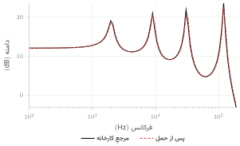
مثال 25.49 (دو درصد جابهجایی) پرسش. همبستگیِ منحنیها با جابهجاییِ 0.5، 2 و 6 % تشدیدها چیست؟
پاسخ. 0.9995، 0.9915 و 0.9306: یکسان، دقیقتر ببینید، بررسی کنید (آستانههای آموزشی).
تفسیر. یک عدد همهٔ داستان نیست: متخصص ناحیههای فرکانسی را جدا میخواند (هسته، سیمپیچ، اتصالها). روشها و حدهای مقایسه کارِ متخصصان است. وارسی: خروجیِ برنامه.
بوشینگها. ظرفیت و ضریبِ تلفِ بوشینگ در محل با مقدارهای خودِ آن در کارخانه مقایسه میشود:
bushings: site readings against the factory's (teaching limits:
capacitance change 3 %, dissipation factor change 30 %)
bushing C factory C site change tan d factory site result
HV A 450 452 0.4% 0.0035 0.0036 ok
HV B 448 470 4.9% 0.0034 0.0049 investigate
HV C 451 453 0.4% 0.0036 0.0037 ok
a capacitance step means a layer of the bushing's insulation
has broken down; a rising dissipation factor means moisture
or ageing - both against the bushing's own factory values,
which is why the factory report travels with the bushingمثال 25.50 (لایهای که شکسته) پرسش. کدام بوشینگ بررسی میخواهد و چرا؟
پاسخ. HV B: ظرفیت 4.9 % بالا رفته و ضریبِ تلف حدودِ 44 %.
تفسیر. پلهٔ ظرفیت یعنی یکی از لایههای عایقِ بوشینگ شکسته؛ ضریبِ تلفِ بالارونده رطوبت یا پیری را نشان میدهد. گزارشِ کارخانهٔ هر بوشینگ با خودش سفر میکند. وارسی: \((470-448)/448 = 0.049\).
نخستین برقدار کردن. حالتها و سوابق، نه روال:
first energisation of a main transformer: states and records
before insulation and ratio checks done, baseline oil sample
first energising inrush recorded by the protection relays
soak, no load sound, temperatures, gas relay watched for a set period
after soak second oil sample compared with the baseline
first load thermal readings against the heat-run results
records event and disturbance files, readings, signatures
each state has a hold point and a record; the switching
itself follows the operator's programme and the owner's
safety rules (ch 48-50) - this list says what is shown,
not how it is doneبازرسیِ درونی، اندازهگیریِ پاسخِ فرکانسی، اندازهگیریِ بوشینگها و نخستین برقدار کردن کارِ کارکنانِ صلاحیتدار با تجهیزات و روالهای تأییدشده و برنامهٔ کلیدزنیِ بهرهبردار است؛ این بخش هدف و شاهد را میآورد.
- گذر از حدِ ثبتکننده نادیده گرفته و ترانسفورماتور برقدار شده است.
- بوشینگها با مقدارهای عمومی مقایسه شدهاند، نه با گزارشِ کارخانهٔ خودشان.
- گذر از حدِ ثبتکنندهٔ ضربه چه پیامدی دارد؟
- چرا منحنیِ پاسخِ فرکانسیِ کارخانه مرجع است؟
- پلهٔ ظرفیتِ بوشینگ چه میگوید؟
- چرا نمونهٔ روغن پیش و پس از نخستین برقدار کردن گرفته میشود؟
25.4.4 جرمِ حمل و آزمونهای روغن
جرمِ حمل. ترانسفورماتورِ 95 t با جادهای که 72 t را میپذیرد چگونه میرسد؟ آنچه جدا حمل میشود:
what comes off for transport (teaching breakdown):
mass in service 95 t
less oil (22 m3 x 0.88 t/m3) 19.4 t -> 75.6 t
less radiators and fans 3.0 t -> 72.6 t
less conservator and piping 0.6 t -> 72.0 t
transport mass 72 t on a trailer of 8 axles: 9.0 t per axle
(plus the trailer's own mass, checked against the road and
bridge limits)
the tank travels filled with dry gas under pressure, with a
gauge and the impact recorder; the oil follows in tankers
and is processed on site to the maker's limitsمثال 25.51 (هفتاد و دو تن) پرسش. با جدا کردنِ روغن، رادیاتورها و کنسرواتور، جرمِ حمل و بارِ هر محور روی تریلرِ هشتمحوره چیست؟
پاسخ. 72 t و 9 t بر محور، بهعلاوهٔ جرمِ خودِ تریلر.
تفسیر. مخزن با گازِ خشکِ تحتِ فشار، فشارسنج و ثبتکنندهٔ ضربه حمل میشود و روغن با تانکر میآید و در محل تا حدهای سازنده فرآوری میشود (بخش 25.4.2). بررسیِ پلها و پیچهای مسیر با جرمِ واقعیِ تریلر انجام میشود (فصلِ ۴۶). وارسی: \(95 - 19.4 - 3.0 - 0.6 = 72.0\).
آزمونهای روغن. روغنِ نو با حدهای سختگیرانهتر از روغنِ در کار پذیرفته میشود؛ روندِ آب و اسیدیته زمانِ خشک کردن یا بازسازی را میگوید:
oil tests read against teaching limits (breakdown voltage kV min,
water mg/kg max, acidity mg KOH/g max):
sample BDV water acidity result
new oil, delivery 75 8 0.01 ok
after processing 72 6 0.01 ok
in service, year 8 48 22 0.08 ok
in service, year 15 32 35 0.15 BDV, water, acidity - act
new oil is accepted to tighter limits than oil in service;
the trend of water and acidity tells when to dry or
regenerate the oil - the limits are the oil standard's and
the maker's, these are teaching valuesمثال 25.52 (سالِ پانزدهم) پرسش. کدام نمونه اقدام میخواهد و چرا؟
پاسخ. سالِ ۱۵: ولتاژِ شکست 32 kV، آب 35 mg/kg و اسیدیته 0.15؛ هر سه بیرون از حدِ آموزشی.
تفسیر. آبِ زیاد ولتاژِ شکست را پایین میآورد و پیریِ کاغذ را تند میکند (بخش 25.2.6)؛ اسیدیته محصولِ پیری است. خشک کردن و بازسازیِ روغن، یا تعویض، با آزمایشگاه و سازنده تصمیم گرفته میشود. حدها از استانداردِ روغن و سازندهاند. وارسی: \(32 < 40\)، \(35 > 25\)، \(0.15 \ge 0.15\).
- چرا مخزن با گازِ خشکِ تحتِ فشار حمل میشود؟
- با تریلرِ دهمحوره بارِ هر محور چیست؟
- چرا حدهای روغنِ نو سختگیرانهترند؟
25.4.5 خواندنِ آزمونهای کارخانه: عدمِ قطعیتِ تلف و آزمونِ گرما
اندازهگیریِ تلف در ضریبِ توانِ کم. آزمونِ تلفِ بار در ضریبِ توانِ چند درصدی انجام میشود؛ خطای کوچکِ زاویه در ترانسفورماتورهای اندازهگیری خطای بزرگی در توان میسازد:
\[ \frac{\Delta P}{P} \approx \tan\varphi \cdot \Delta\varphi \tag{25.12}\]
که \(\Delta\varphi\) خطای زاویهٔ زنجیرهٔ اندازهگیری (رادیان) است.
measuring losses at low power factor: a small phase error matters
dP / P = tan(phi) x angle error (teaching)
test power factor tan phi 0.1 mrad 0.5 mrad
no-load test 0.15 6.6 0.07% 0.33%
load-loss test 0.03 33.3 0.33% 1.67%
the load-loss test runs at a power factor of a few per cent:
half a milliradian of phase error in the measuring
transformers is 1.7 % of the loss - as large as some
tolerances; the test laboratory's calibrated system and
its stated uncertainty are part of the evidence behind the
loss penalty of lesson Dمثال 25.53 (نیممیلیرادیان، یکوهفتدهم درصد) پرسش. در آزمونِ تلفِ بار با ضریبِ توانِ 0.03، خطای زاویهٔ 0.5 mrad چه خطایی در تلف میسازد؟
پاسخ. حدودِ 1.7 %.
تفسیر. این به اندازهٔ برخی رواداریهاست؛ سامانهٔ کالیبرهشدهٔ آزمایشگاه و عدمِ قطعیتِ اعلامشدهاش بخشی از شاهدِ پشتِ جریمهٔ تلف (بخش 25.5.1) است. وارسی: \(33.3 \times 0.0005 = 0.0167\).
آزمونِ افزایشِ دما. دمای روغن نمایی به مقدارِ نهایی نزدیک میشود؛ مقدارِ نهایی از برازشِ قرائتها میآید، نه از آخرین قرائت:
def fit_rise(times: list, rises: list) -> tuple:
"""Fit rise(t) = R_final (1 - exp(-t / tau)) to readings by scanning
tau and solving R_final by least squares for each tau."""
best = None
for k in range(30, 600):
tau = k / 60.0
e = [1 - math.exp(-t / tau) for t in times]
r_f = sum(a * b for a, b in zip(e, rises)) / sum(a * a for a in e)
err = sum((r_f * a - b) ** 2 for a, b in zip(e, rises))
if best is None or err < best[0]:
best = (err, r_f, tau)
return best[1], best[2]a heat run stopped too early (teaching data, not lesson D's dossier):
hours 0.5 1.0 2.0 3.0 4.0 5.0 6.0 7.0 8.0
rise K 9.8 18.7 32.6 42.0 48.3 52.5 55.3 57.0 58.2
fit: final rise 61.7 K, time constant 2.67 h
the last reading (58.2 K) is 94% of the way and looks
inside the 60 K guarantee; the settled value 61.7 K is over it -
the test runs until the rise has settled (the standard's
criterion), and the final value, not the last reading, is
compared with the guarantee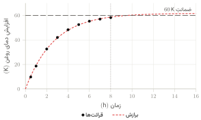
مثال 25.54 (آخرین قرائت درست، مقدارِ نهایی نادرست) پرسش. آزمون پس از هشت ساعت با 58.2 K قطع شده؛ آیا ضمانتِ 60 K برقرار است؟
پاسخ. نه: برازش مقدارِ نهایی را 61.7 K با ثابتِ زمانیِ 2.67 h میدهد؛ آخرین قرائت فقط 94 % راه بود.
تفسیر. آزمون تا ثابت شدنِ افزایش (معیارِ استاندارد) ادامه مییابد و مقدارِ نهایی با ضمانت مقایسه میشود. گزارشی که فقط آخرین قرائت را میدهد پرسش میخواهد. این دادهها آموزشیاند و پروندهٔ بخش 25.5.1 نیستند. وارسی: \(61.7 \times (1 - e^{-8/2.67}) = 58.6\)، نزدیکِ 58.2.
- خطای تلف با ضریبِ توانِ 0.05 و 0.3 mrad؟
- چرا آزمونِ تلفِ بار در ضریبِ توانِ کم انجام میشود؟
- با ثابتِ زمانیِ 2.67 h، پس از چند ساعت افزایش به 99 % نهایی میرسد؟
25.4.6 پرداختهای مرحلهای و بهای پول
ایده. ترانسفورماتور ماهها پیش از بهرهبرداری پرداخت میشود. هر پرداخت تا تاریخِ بهرهبرداری هزینهٔ پول دارد: \(C = \sum_i P\,s_i\left[(1+i)^{m_i/12} - 1\right]\) که \(s_i\) سهمِ پرداختِ \(i\) و \(m_i\) ماههای پیش از بهرهبرداری است:
payment milestones for one main transformer (bid B, 1,700 k u;
money at 6 % a year until COD; months before COD)
scheme payments (months: share) cost k u
progress 20:10%, 17:10%, 12:30%, 6:30%, 4:10%, 1:10% 81.8
on delivery 20:10%, 4:80%, 1:10% 44.8
paying for progress costs the owner more interest but lets
the maker buy copper and steel without borrowing (its price
is lower or its risk smaller); each advance is protected by
a guarantee and each milestone by evidence (design approved,
FAT passed, delivered) - the terms are the contract's
(ch 39); this is a commercial sketch, not legal adviceمثال 25.55 (سیوهفت هزار برای هر ترانسفورماتور) پرسش. دو طرحِ پرداخت برای بهای 1,700 هزار واحد با نرخِ 6 % چه هزینهٔ پولی دارند؟
پاسخ. پرداخت با پیشرفت حدودِ 81.8 و پرداخت در تحویل حدودِ 44.8 هزار واحد؛ تفاوت حدودِ 37 هزار برای هر ترانسفورماتور.
تفسیر. پرداخت با پیشرفت بهرهٔ بیشتری به مالک تحمیل میکند ولی سازنده بیوام مس و فولاد میخرد؛ پس بهایش کمتر یا ریسکش کوچکتر است. هر پیشپرداخت با ضمانتنامه و هر مرحله با شاهد (تأییدِ طراحی، پذیرشِ آزمونِ کارخانه، تحویل) پشتیبانی میشود. شرطها مالِ قرارداد است (فصلِ ۳۹)؛ این طرحی تجاری است، نه مشاورهٔ حقوقی. هزینهٔ پولِ دورهٔ ساخت در مدلِ مالیِ فصلِ ۲۱ آمده است. وارسی: \(1{,}700 \times 0.8 \times (1.06^{4/12} - 1) = 26.7\).
- هزینهٔ پولِ پیشپرداختِ 20 % در ماهِ ۲۴ پیش از بهرهبرداری؟
- چرا پرداختِ پس از آزمونِ کارخانه به شاهدِ پذیرش گره میخورد؟
25.4.7 رسیدن به محل: فشارِ گازِ مخزنِ بیروغن
ایده. ترانسفورماتورِ بزرگ اغلب بیروغن و پر از هوای خشک یا نیتروژن با فشارِ اندکی بالای جو حمل میشود (بخش 25.4.4). فشارِ رسیدن با دمای گاز تغییر میکند (قانونِ گازِ آرمانی، \(p/T\) ثابت)؛ فقط افتی بیش از آن نشتی است:
\[ p_\text{exp} = p_0 \cdot \frac{T_1}{T_0} \tag{25.13}\]
که فشارها مطلق و دماها برحسبِ کلویناند.
a tank shipped without oil, filled with dry air (teaching):
departure 0.25 bar(g) at 30 C; readings on arrival:
arrival expected bar(g) measured bar(g) lost verdict
10 C 0.167 0.16 0.6% tight
10 C 0.167 0.12 4.0% leak: check dew point
-5 C 0.104 0.11 -0.5% tight
a pressure that falls because the tank cooled is not a leak;
only the drop beyond the gas law says air left - and moist
air may have come in: the dew point of the gas and the
maker's assessment decide whether extra drying is needed
before oil filling (evidence for the arrival record)مثال 25.56 (سرد شده، نه نشتی) پرسش. با 0.25 bar(g) در 30 °C هنگامِ حرکت، سه قرائتِ رسیدن را داوری کنید.
پاسخ. در 10 °C، فشارِ انتظاری 0.167 bar(g): قرائتِ 0.16 سالم، 0.12 نشتی (4 % گاز رفته)؛ در −5 °C، 0.11 در برابرِ 0.104 سالم.
تفسیر. فشاری که چون مخزن سرد شده افتاده، نشتی نیست. وقتی گاز بیرون رفته، شاید هوای مرطوب آمده باشد؛ نقطهٔ شبنمِ گاز و ارزیابیِ سازنده تصمیم میگیرند که پیش از روغنریزی خشککردنِ اضافه لازم است یا نه. این قرائتها جزءِ سابقهٔ رسیدناند. وارسی: \(1.263 \times 283.15/303.15 - 1.013 = 0.167\).
- فشارِ انتظاری در 20 °C؟
- چرا باید با فشارِ مطلق حساب کرد، نه نسبی؟
25.4.8 تلفِ بار در دمای مرجع و امپدانس در بازهٔ تپ
تصحیحِ دما. آزمونِ تلفِ بار با سیمپیچِ سرد انجام میشود ولی ضمانت در دمای مرجع (75 °C) است. تلفِ بار دو بخش دارد که با دما در دو جهتِ مخالف تغییر میکنند: بخشِ \(I^2R\) با مقاومت بالا میرود و بخشِ پراکنده (جریانهای گردابی) با بالا رفتنِ مقاومتِ فلز پایین میآید. با \(k = (235 + \theta_\text{ref})/(235 + \theta_\text{m})\) برای مس:
\[ P_\text{k,ref} = P_{I^2R}\,k + \frac{P_\text{stray}}{k} \tag{25.14}\]
def load_loss_at(ref_c: float, meas_c: float, i2r_kw: float,
stray_kw: float, t_k: float = 235.0) -> float:
"""Load loss corrected from the measuring temperature to the
reference: the I2R part grows with resistance, the stray (eddy)
part shrinks in proportion (copper: t_k = 235)."""
k = (t_k + ref_c) / (t_k + meas_c)
return i2r_kw * k + stray_kw / kload loss measured cold (22 C), corrected to 75 C (teaching unit):
measured: I2R part 155 kW (from winding resistance), stray 72 kW,
total 227 kW; factor k = (235 + 75)/(235 + 22) = 1.206
correct: I2R x k + stray / k = 246.7 kW
wrong (all of it x k): 273.8 kW
guarantee 250 kW: corrected value inside; the wrong method says over
the stray part falls as the metal warms (higher
resistance, smaller eddy currents): the report states the
measured winding resistance, the temperature and the split,
so the correction can be checked line by lineمثال 25.57 (روشِ نادرست، رد کردنِ نادرست) پرسش. تلفِ بارِ 227 kW در 22 °C اندازهگیری شده (155 از \(I^2R\) و 72 پراکنده). مقدار در 75 °C چیست و با ضمانتِ 250 kW چه میشود؟
پاسخ. 246.7 kW: در حدِ ضمانت. اگر همه را در \(k\) ضرب کنیم 273.8 kW و به نادرستی «بیرون» میشود.
تفسیر. گزارش باید مقاومتِ سیمپیچ، دما و تفکیکِ دو بخش را بدهد تا تصحیح سطر به سطر وارسی شود؛ روشِ دقیق را استانداردِ ترانسفورماتور (IEC 60076-1، STD-120) میگوید. وارسی: \(155 \times 1.206 + 72/1.206 = 186.9 + 59.7 = 246.7\).
امپدانس در بازهٔ تپ. امپدانسِ اتصالِ کوتاه با تپ تغییر میکند، چون دورهای سیمپیچِ تپدار و هندسهٔ نشتی تغییر میکنند:
impedance across the tap range (teaching data from a test report):
tap % uk % fault current at 33 kV, kA (stiff grid)
-10.0 11.4 9.67
+0.0 12.0 9.19
+10.0 12.9 8.54
the fault level is checked at the tap with the lowest
impedance, the regulation at the highest; two paralleled
units on different taps also share load unevenly (lesson
circulating) - the dossier gives uk at the extreme and
principal taps, not only at the principalمثال 25.58 (ترازِ خطا در کمترین امپدانس) پرسش. ترازِ خطای 33 kV در سه تپ چیست و کدام برای انتخابِ تجهیزات به کار میرود؟
پاسخ. 9.67، 9.19 و 8.54 kA (شبکهٔ سخت، یک ترانسفورماتور)؛ برای تجهیزات، تپی با کمترین امپدانس (−10 %).
تفسیر. ترازِ خطا در کمترین امپدانس و تنظیمِ ولتاژ در بیشترین امپدانس وارسی میشود؛ پرونده امپدانس را در دو تپِ کرانی و تپِ اصلی میدهد. وارسی: \(63/(\sqrt{3} \times 33 \times 0.114) = 9.67\).
- تلفِ مرجع اگر اندازهگیری در 30 °C بود (همان دو بخش)؟
- چرا بخشِ پراکنده با گرم شدن کم میشود؟
- ترازِ خطا با امپدانسِ 11.0 %؟
25.5 ت. آزمایشگاهِ یکپارچهسازیِ پست
25.5.1 مثالِ کارشده: بازبینیِ پروندهٔ آزمون
ایده. پروندهٔ آزمونِ ساختگیِ یک ترانسفورماتورِ 63 MVA را با مقدارهای اعلامشده و رواداریهای قراردادِ آموزشی میسنجیم. رواداریها اینجا شرطِ قراردادند، نه عددِ استاندارد:
DOSSIER = [ # quantity, guaranteed or declared, measured, tolerance (A-329)
("no-load loss kW", 35.0, 36.1, ("max", 0.15)),
("load loss kW at 75 C", 250.0, 262.0, ("max", 0.15)),
("total loss kW", 285.0, 298.1, ("max", 0.10)),
("impedance % (principal tap)", 12.0, 13.4, ("band", 0.075)),
("ratio error % (principal tap)", 0.0, 0.3, ("abs", 0.5)),
("no-load current %", 0.20, 0.24, ("max", 0.30)),
("top-oil rise K", 60.0, 57.0, ("limit", 0.0)),
("winding rise K", 65.0, 68.0, ("limit", 0.0)),
]def review_item(name, declared, measured, tol):
kind, t = tol
if kind == "max":
ok = measured <= declared * (1 + t)
how = f"<= {declared * (1 + t):.3g}"
elif kind == "band":
ok = abs(measured - declared) <= declared * t
how = f"{declared * (1 - t):.3g} to {declared * (1 + t):.3g}"
elif kind == "abs":
ok = abs(measured - declared) <= t
how = f"within +/- {t}"
else: # a limit not to exceed
ok = measured <= declared
how = f"<= {declared:.3g}"
return ok, howworked example: review of a fictional routine and type test dossier
quantity declared measured accept result
no-load loss kW 35 36.1 <= 40.2 ok
load loss kW at 75 C 250 262 <= 288 ok
total loss kW 285 298 <= 314 ok
impedance % (principal tap) 12 13.4 11.1 to 12.9 NOT OK
ratio error % (principal tap) 0 0.3 within +/- 0.5 ok
no-load current % 0.2 0.24 <= 0.26 ok
top-oil rise K 60 57 <= 60 ok
winding rise K 65 68 <= 65 NOT OK
not accepted: impedance % (principal tap), winding rise K
the impedance is outside its band: the fault level, the
regulation and the parallel sharing change (section A) - the
grid study is re-run before acceptance; the winding rise
exceeds its limit: the maker explains and the owner decides
(repair, de-rate or reject) under the contract; loss
overruns inside tolerance may still cost money if the
contract prices themمثال 25.59 (دو مورد که پذیرفته نیست) پرسش. کدام اندازهها از پذیرش بیروناند و پیامدِ هر کدام چیست؟
پاسخ. امپدانس 13.4 % بیرون از بازهٔ 11.1–12.9 % و افزایشِ دمای سیمپیچ 68 K بالای حدِ 65 K. تلفها درونِ رواداریاند.
تفسیر. امپدانسِ بیشتر جریانِ خطا، تنظیمِ ولتاژ و تقسیمِ بارِ موازی را عوض میکند (بخش 25.2): مطالعهٔ شبکه پیش از پذیرش دوباره اجرا میشود. افزایشِ دما را سازنده توضیح میدهد و مالک طبقِ قرارداد تصمیم میگیرد (تعمیر، کاهشِ مقدارِ نامی یا رد). تلفِ بیشتر از تضمین، حتی درونِ رواداری، ممکن است با ضریبهای ارزیابی از قیمت کسر شود (زیر). وارسی: \(12 \times (1 \pm 0.075) = 11.1\) تا \(12.9\).
loss overrun priced with the evaluation factors:
no-load +1.1 kW x 6.84 = 7.5 k u; load +12 kW x 0.88 = 10.6 k u
total 18.1 k u - inside tolerance but a cost to the
owner for 25 years; contracts often deduct it from the priceمثال 25.60 (هجده هزار واحد) پرسش. افزایشِ تلفِ اندازهگیریشده با ضریبهای ارزیابی چقدر میارزد؟
پاسخ. \(1.1 \times 6.84 + 12 \times 0.88 = 18.1\) هزار واحد.
تفسیر. قراردادهایی که تلف را قیمتگذاری کردهاند، این مبلغ را از قیمت کسر میکنند؛ پس ضریبها همانهاییاند که در ارزیابیِ پیشنهادها به کار رفتند (مثال 25.6) و یکپارچگیِ تدارکات را نگه میدارند.
25.5.2 از الزام تا شاهد و پرسشهای باز
| الزامِ مشخصه | شاهد | پرسشِ باز از سازنده یا شبکه |
|---|---|---|
| 63 MVA ONAF | آزمونِ افزایشِ دما | آیا اضافهبارِ کوتاه در ساعتهای داغ مجاز است؟ |
| امپدانسِ 12 % | آزمونِ امپدانس در سه تپ | اثرِ تپ بر امپدانس؟ |
| بازهٔ تپ | سوابقِ تپچنجر | بازه پس از مطالعهٔ شبکه (U-096) |
| تحملِ اتصالِ کوتاه | آزمونِ نوعی یا اثباتِ طرح | برای کدام سطحِ خطا و مدت؟ |
| تضمینِ تلف | آزمونهای تلف | روشِ تصحیح به دمای مرجع |
| صدا | آزمونِ صدا (ویژه) | حدِ قرارداد با مطالعهٔ صدا |
| حمل | ثبتکنندهٔ ضربه، فشارِ گاز | مسیر و محدودیتهای جاده |
- دو یافتهٔ پرونده و پیامدِ هر کدام را بنویسید.
- چرا کسرِ تلف با همان ضریبهای ارزیابی حساب میشود؟
- برای تحملِ اتصالِ کوتاه چه شاهدی خواسته میشود؟
- سه پرسشِ باز از سازنده بنویسید.
25.5.3 پایش: گازهای حلشده، تپچنجر و فهرستِ سیگنالها
گازهای حلشده در روغن. وقتی روغن یا کاغذ زیرِ تنش است، گاز میسازد. هر گاز نشانهٔ نوعی تنش است؛ روندِ میانِ نمونهها از یک عدد مهمتر است:
def key_gas(s: dict) -> str:
"""Teaching key-gas reading: the gas that stands out names the fault."""
if s["C2H2"] > 20:
return "arcing - act now"
if s["C2H4"] > 150:
return "hot spot > 300 C - investigate"
if s["H2"] > 300 and s["CH4"] < 100:
return "partial discharge - resample"
if s["CO"] > 700:
return "paper overheating - check"
return "normal - keep trending"dissolved gases in the oil (ppm) read by the key gas (teaching):
sample H2 CH4 C2H2 C2H4 CO reading
T1 2027 40 20 0 10 250 normal - keep trending
T1 2029 420 60 1 15 300 partial discharge - resample
T2 2029 60 180 2 260 320 hot spot > 300 C - investigate
T2 2030 200 120 95 150 340 arcing - act now
T1 2031 70 40 0 20 900 paper overheating - check
gases form when oil or paper is stressed: hydrogen from
discharges, ethylene from hot spots, acetylene only from
arcs, carbon oxides from paper; the trend between samples
matters more than one value, and the interpretation
methods and limits are the oil laboratory's and the
standards' - this rule only shows the ideaمثال 25.61 (پنج نمونه، چهار داستان) پرسش. هر نمونه را بخوانید.
پاسخ. T1 2027 عادی؛ T1 2029 هیدروژنِ زیاد، تخلیهٔ جزئی، نمونهٔ دوباره؛ T2 2029 اتیلن، نقطهٔ داغِ بالای حدودِ 300 °C؛ T2 2030 استیلن، قوس، اقدامِ فوری؛ T1 2031 مونوکسیدِ کربنِ زیاد، داغ شدنِ کاغذ.
تفسیر. روندِ T2 از نقطهٔ داغ به قوس رفته است: خرابی بزرگ میشود. روشها و حدهای تفسیر از آزمایشگاهِ روغن و استانداردهاست؛ این قاعده فقط ایده را نشان میدهد. پایشگرِ برخطِ گاز روند را میانِ نمونهگیریها پر میکند. وارسی: خروجیِ برنامه.
تپچنجر. هر تغییرِ تپ کنتاکتهای دایورتر را میساید؛ شمارِ کار در سال از تغییرِ ولتاژ و بار میآید:
tap-changer operations over a year (synthetic hourly voltages):
step 1.25 %, deadband +/- 0.875 %: 5,191 operations a year
at a teaching 100,000 operations between diverter services: every 19 years
the plant's own reactive control (ch 20) takes much of the
regulation: fewer tap changes, less wear; the count from
the tap changer's counter, not the calendar, schedules the
service (ch 52)مثال 25.62 (پنج هزار تپ در سال) پرسش. با گامِ 1.25 % و باندِ مرده، تپچنجر چند کار در سال دارد و سرویسِ دایورتر کی است؟
پاسخ. حدودِ 5,191 کار در سال؛ با 100,000 کار میانِ دو سرویس (آموزشی) حدودِ هر ۱۹ سال.
تفسیر. کنترلِ توانِ واکنشیِ نیروگاه (فصلِ ۲۰) بخشی از تنظیم را برمیدارد؛ شمارندهٔ تپچنجر سرویس را زمانبندی میکند، نه تقویم (فصلِ ۵۲). وارسی: \(100{,}000/5{,}191 = 19\).
فهرستِ سیگنالهای ترانسفورماتور. هر حسگر و هر فرمان یک ردیف در فهرستِ سیگنالها و یک جفت پایانه در جعبهٔ اتصال است:
signals of one main transformer (teaching list):
signal DI DO AI to
gas relay alarm / trip 2 0 0 protection
pressure relief trip 1 0 0 protection
oil level low 1 0 0 SCADA
oil temperature alarm / trip 2 0 1 both
winding temperature alarm / trip 2 0 1 both
tap position 0 0 1 SCADA
tap changer raise / lower 0 2 0 control
tap changer protective relay 1 0 0 protection
fan groups on / fail 4 2 0 SCADA
dissolved-gas monitor 1 0 3 SCADA
bushing monitor 1 0 3 SCADA
per transformer: 15 digital in, 4 digital out, 9 analogue in; two: 56
trips go hard-wired to the protection (lockout, ch 26);
alarms and measurements to SCADA (ch 34); each line is a row
of the signal list and a terminal pair in the marshalling
box (ch 24 lesson D)مثال 25.63 (پنجاهوشش سیگنال) پرسش. هر ترانسفورماتور چند ورودی و خروجیِ دیجیتال و آنالوگ دارد و کدامها به حفاظت میروند؟
پاسخ. ۱۵ ورودیِ دیجیتال، ۴ خروجیِ دیجیتال و ۹ ورودیِ آنالوگ؛ برای دو ترانسفورماتور ۵۶. رلهٔ گاز، شیرِ فشارشکن، قطعِ دما و رلهٔ حفاظتیِ تپچنجر سیمکشیِ مستقیم به حفاظت و قفل (فصلِ ۲۶) دارند.
تفسیر. قطعها سختسیم و هشدارها و اندازهها به SCADA (فصلِ ۳۴) میروند؛ فهرستِ سیگنالها پلِ میانِ ترانسفورماتور، تابلوی حفاظت و SCADA است و در آزمایشگاهِ این بخش با پایانهها (فصلِ ۲۴) پیوند میخورد. وارسی: \(2 \times (15 + 4 + 9) = 56\).
- یک نمونهٔ گاز بیروند تفسیر شده است.
- سرویسِ تپچنجر با تقویم زمانبندی شده، نه با شمارنده.
- کدام گاز فقط از قوس میآید؟
- چرا روندِ نمونهها از یک نمونه مهمتر است؟
- با ۳٬۰۰۰ کار در سال، سرویسِ دایورتر کی است؟
- کدام سیگنالهای ترانسفورماتور سختسیم به حفاظت میروند؟
25.5.4 کابلهای کنترل و ماتریسِ قطعِ ترانسفورماتور
کابلهای کنترل. فهرستِ سیگنالها (بخش 25.5.3) به کابلها و مسیرها تبدیل میشود:
control cables from the two main transformers to the control building
signals 56 (two cores each) -> 10 cables of 12 cores
CT circuits 12 and VT circuits 4: own screened cables, 4 cores each
power (fans, tap changer, heaters): 10 cables
total 36 cables, about 2,880 m on 80 m routes
CT and VT circuits run in their own cables (lesson D of
ch 24 and ch 26: separate cores for main and backup), and
every core is a row of the cable core listمثال 25.64 (سیوشش کابل) پرسش. از دو ترانسفورماتورِ اصلی تا ساختمانِ کنترل چند کابل و چند متر لازم است؟
پاسخ. ۱۰ کابلِ دوازدهرشتهای برای سیگنالها، ۱۶ کابل برای مدارهای CT و VT، ۱۰ کابلِ قدرت؛ جمعاً ۳۶ کابل و حدودِ 2,880 m.
تفسیر. مدارهای CT و VT کابلِ جدا دارند و هستههای اصلی و پشتیبان هم جدا (فصلهای ۲۴ و ۲۶)؛ هر رشته یک ردیفِ فهرستِ رشتههاست. وارسی: \(\lceil 112/12 \rceil = 10\).
ماتریسِ قطع. هر کارکردِ حفاظتی کدام کلیدها را باز میکند و کدام قفل را میگذارد:
trip matrix of a main transformer (teaching):
function trips
87T differential HV Q1, LV Q2, lockout
64 restricted earth fault HV Q1, LV Q2, lockout
63 gas relay, trip stage HV Q1, LV Q2, lockout
pressure relief HV Q1, LV Q2, lockout
26/49 oil and winding temperature HV Q1, LV Q2
24 V/Hz HV Q1
50/51 HV backup HV Q1, LV Q2
50BF breaker failure (HV Q1) HV bus or line bay
4 functions also set the lockout (86): the transformer stays
off until someone has looked - an internal fault must not be
re-energised by a reflex; the matrix is a drawing of its own,
tested trip by trip at commissioning (ch 26)مثال 25.65 (چهار کارکرد با قفل) پرسش. کدام کارکردها قفلِ 86 را میگذارند و چرا؟
پاسخ. دیفرانسیل، خطای زمینِ محدود، رلهٔ گاز و شیرِ فشارشکن: هر چهار خطای درونی را نشان میدهند.
تفسیر. ترانسفورماتوری که خطای درونی داشته نباید با یک واکنشِ شتابزده دوباره برقدار شود؛ قفل تا بازبینی میماند. ماتریس نقشهٔ خودش را دارد و در راهاندازی قطعبهقطع آزموده میشود (فصلِ ۲۶). وارسی: چهار ردیف با lockout.
- چرا مدارهای CT کابلِ جدا دارند؟
- با ۱۶ هستهٔ هشترشتهای بهجای دوازدهرشتهای، چند کابلِ سیگنال لازم است؟
- چرا قطعِ دمایی قفل نمیگذارد؟
25.5.5 مثالِ کارشدهٔ دوم: پروندهٔ ترانسفورماتورِ واحدِ خورشیدی
ایده. پروندهٔ ترانسفورماتورِ اصلی (بخش 25.5.1) یک دستگاه بود؛ ترانسفورماتورهای واحد یک طرح و ده دستگاهاند. خطای طرح در نخستین دستگاه پیدا میشود و ارزانترین جای یافتنش همانجاست. همان برنامهٔ بازبینی روی پروندهٔ نخستین واحد:
second dossier: a PV unit transformer, 5.5 MVA (teaching)
quantity declared measured accept result
no-load loss kW 4.5 5.4 <= 5.17 NOT OK
load loss kW at 75 C 45 46.8 <= 51.7 ok
total loss kW 49.5 52.2 <= 54.5 ok
impedance % (principal tap) 6 6.2 5.4 to 6.6 ok
ratio error % (principal tap) 0 0.2 within +/- 0.5 ok
top-oil rise K 60 61.5 <= 60 NOT OK
sound power dB(A) 72 73.5 <= 72 NOT OK
not accepted: no-load loss kW, top-oil rise K, sound power dB(A)
loss overrun priced: 7.7 k u per unit, 77 k u for ten units
the no-load loss is 20 % over (a core-steel or joint
problem in this design), the oil rise and the sound exceed
their limits: one design, ten units - the maker explains
and corrects before the series ships; a type fault is
cheapest found on the first unitمثال 25.66 (یک طرح، ده دستگاه) پرسش. کدام اقلامِ پرونده پذیرفته نمیشوند، جریمهٔ تلف چیست و چه باید کرد؟
پاسخ. تلفِ بیباری (5.4 در برابرِ حدِ 5.17 kW)، افزایشِ دمای روغن (61.5 در برابرِ 60 K) و توانِ صدا (73.5 در برابرِ 72 dB(A)). جریمهٔ تلف حدودِ 7.7 هزار واحد برای هر واحد و 77 هزار برای ده واحد.
تفسیر. تلفِ بیباریِ 20 % بیشتر نشانهٔ مشکلِ ورقِ هسته یا اتصالهای آن در این طرح است (بخش 25.3.1)؛ افزایشِ دما و صدا هم بیرون از حد است. سازنده باید پیش از ساختِ باقیِ سری علت را توضیح دهد و طرح را اصلاح کند؛ پذیرشِ دستگاهِ نخست با این یافتهها یعنی پذیرشِ ده دستگاه با همان عیب. حدها و رواداریها آموزشیاند. وارسی: \((5.4 - 4.5) \times 6.84 + (46.8 - 45) \times 0.88 = 7.7\).
- چرا پروندهٔ نخستین واحدِ یک سری مهمتر از بقیه است؟
- حدِ تلفِ بیباری با رواداریِ +15 % برای 4.5 kW؟
- اگر فقط صدا بیرون از حد بود، چه گزینههایی داشتید؟
25.5.6 عمرِ کاغذ و شاخصِ سلامت
ایده. عمرِ ترانسفورماتور عمرِ کاغذِ آن است (بخش 25.2.4). استحکامِ کاغذ با درجهٔ پلیمرشدن (به انگلیسی degree of polymerisation, DP) سنجیده میشود: طولِ میانگینِ زنجیرههای سلولز. کاغذِ نو حدودِ ۱٬۰۰۰ دارد و نزدیکِ ۲۰۰ بیشترِ استحکامش رفته است. نمونهگرفتن از کاغذ یعنی باز کردنِ ترانسفورماتور؛ پس از نشانهٔ غیرمستقیم استفاده میشود: شکستنِ سلولز فورانها (مهمترین آنها 2-FAL) را در روغن آزاد میکند. یکی از رابطههای منتشرشده (رابطهٔ Chendong) چنین است:
\[ \mathrm{DP} \approx \frac{1.51 - \log_{10} c_\text{2FAL}}{0.0035} \tag{25.15}\]
که \(c_\text{2FAL}\) برحسبِ \(\text{mg/kg}\) است. این رابطه آموزشی به کار میرود؛ رابطهها با نوعِ کاغذ، روغن و تعویض یا تصفیهٔ روغن فرق میکنند.
def dp_from_furan(fal_mg_kg: float) -> float:
"""Degree of polymerisation from 2-furaldehyde in oil by the
Chendong correlation (one published relation, teaching use)."""
return (1.51 - math.log10(fal_mg_kg)) / 0.0035paper age from furans in oil (Chendong correlation, teaching):
2-FAL mg/kg DP estimate reading
0.05 803 paper in good condition
0.30 581 ageing, trend it
1.00 431 ageing, trend it
3.00 295 advanced ageing, plan
6.00 209 near end of life
new paper has a DP near 1,000; around 200 it has lost most of
its strength - but correlations differ by paper type, oil
and oil changes; one sample means little, a trend and DGA
(CO and CO2) together tell the story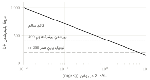
مثال 25.67 (سه میلیگرم، پیریِ پیشرفته) پرسش. با 2-FAL برابرِ 0.3، 1.0 و 3.0 mg/kg، درجهٔ پلیمرشدن چیست؟
پاسخ. حدودِ 581، 431 و 295.
تفسیر. یک نمونه معنای کمی دارد؛ روندِ فوران همراهِ CO و CO₂ در تحلیلِ گازها (بخش 25.5.3) داستان را میگوید. تعویضِ روغن فوران را پاک میکند ولی کاغذ را جوان نمیکند؛ پس سابقهٔ روغن کنارِ هر عدد میآید. وارسی: \((1.51 - \log_{10}3)/0.0035 = (1.51 - 0.477)/0.0035 = 295\).
شاخصِ سلامت. بهرهبردار با چند ترانسفورماتور به رتبهبندیِ توجه نیاز دارد: هر عاملِ وضعیت امتیازی از ۱ (خوب) تا ۴ (بد) میگیرد و با وزن جمع میشود:
\[ \mathrm{HI} = 100 \cdot \frac{4 - \sum_k w_k\,s_k}{3}, \qquad \sum_k w_k = 1 \tag{25.16}\]
a health index from condition scores (1 good ... 4 poor; teaching weights):
factor weight T1 T2
DGA 0.30 1 3
oil quality 0.15 1 2
furans 0.20 1 2
bushings 0.15 2 1
OLTC 0.10 1 2
load history 0.10 1 2
T1: index 95.0 / 100 good
T2: index 61.7 / 100 fair - watch
the index ranks attention, it does not diagnose: T2's DGA
score sends it to the expert first; the weights and scoring
rules are the owner's maintenance policy (ch 52)مثال 25.68 (رتبهبندی، نه تشخیص) پرسش. شاخصِ سلامتِ T1 و T2 چیست و کدام اول بررسی میشود؟
پاسخ. 95.0 و 61.7؛ T2 با امتیازِ 3 در تحلیلِ گازها اول نزدِ کارشناس میرود.
تفسیر. شاخص توجه را رتبهبندی میکند و تشخیص نمیدهد: T2 با 61.7 «قابلِ قبول» به نظر میرسد ولی یک عاملِ بد در میانگین پنهان میشود؛ پس قاعدهای کنارِ شاخص لازم است: هر عامل با امتیازِ ۳ یا ۴ جداگانه پیگیری شود. وزنها و قاعدههای امتیازدهی سیاستِ نگهداریِ مالکاند (فصلِ ۵۲). وارسی: \(\sum w_k s_k = 0.9 + 0.3 + 0.4 + 0.15 + 0.2 + 0.2 = 2.15\) و \(100 \times 1.85/3 = 61.7\).
- یک عددِ فوران بیروند و بیسابقهٔ روغن به عمرِ باقیمانده تبدیل شده است.
- شاخصِ سلامتِ میانگین یک عاملِ بحرانی را پنهان کرده است.
- درجهٔ پلیمرشدن برای 2-FAL برابرِ 0.1 mg/kg؟
- چرا تصفیهٔ روغن خواندنِ فوران را گمراهکننده میکند؟
- شاخصِ سلامت اگر امتیازِ تحلیلِ گازِ T1 به ۴ برسد؟
25.5.7 هشدارِ مبتنی بر مدل: دما در برابرِ پیشبینی
ایده. هشدارِ ثابتِ دمای روغن (مثلاً 95 °C) فقط وقتی به صدا درمیآید که هوا و بار با هم دما را بالا ببرند. ولی مدلِ گرمایی (بخش 25.2.6) از بار و دمای هوا پیشبینی میکند دما باید چقدر باشد؛ اختلافِ اندازهگیری و پیشبینی، یعنی باقیمانده (به انگلیسی residual)، خرابیِ خنککاری را مستقل از هوا نشان میدهد:
\[ r(t) = \theta_\text{meas}(t) - \theta_\text{model}\left(K(t), \theta_\text{a}(t)\right) \tag{25.17}\]
def top_oil_day(fail_h: float | None, air: float = 35.0,
step_min: float = 5.0) -> list:
"""Top-oil temperature through a day (mean air temperature `air`);
from fail_h the fans stop: ONAN, as if loaded 63/50 times harder."""
d_or, r, x, tau = 52.0, 6.0, 0.8, 180.0
d_o, rows = 30.0, []
for k in range(int(48 * 60 / step_min)):
t = (k * step_min / 60.0) % 24
amb = air + 10 * math.sin(math.pi * (t - 9) / 12)
sun = math.sin(math.pi * (t - 6) / 12)
pv = max(0.0, sun) if 6 <= t <= 18 else 0.0
load = min(0.35 + 0.80 * pv, 1.15)
if fail_h is not None and k >= 24 * 60 / step_min and t >= fail_h:
load *= M["s_mva"] / M["s_onan_mva"]
d_ou = d_or * ((1 + r * load ** 2) / (1 + r)) ** x
d_o += (d_ou - d_o) * step_min / tau
if k >= 24 * 60 / step_min:
rows.append((t, amb + d_o))
return rowsa model-based cooling alarm: the fans fail at 11:00
model = top oil predicted with fans; measured = fans failed
(sensor noise 0.8 K); alarm when measured - model > 5 K for
three readings in a row (15 min); fixed alarm at 95 C top oil
day (mean air) model alarm fixed alarm lead h top oil max C
hot (35 C) 11.75 h 11.92 h 0.17 117
mild (20 C) 11.75 h 13.42 h 1.67 102
largest residual 18.2 K (both days)
the model alarm comes 45 min after the failure on both days;
the fixed alarm follows 10 min later on the hot day but
1.7 h later on the mild one, when the oil is already past
95 C: a fixed threshold waits for the weather, the residual
does not - the model's constants come from the heat run, and
the alarm logic belongs to the monitoring specification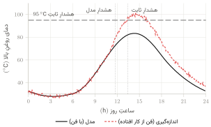
مثال 25.69 (باقیمانده منتظرِ هوا نمیماند) پرسش. فنها ساعتِ ۱۱ از کار میافتند. هشدارِ مدل (باقیماندهٔ بیش از 5 K در سه قرائتِ پیاپی) و هشدارِ ثابتِ 95 °C در روزِ گرم و معتدل کی به صدا درمیآیند؟
پاسخ. هشدارِ مدل در هر دو روز ساعتِ 11:45؛ هشدارِ ثابت در روزِ گرم ۱۰ دقیقه بعد و در روزِ معتدل 1.7 ساعت بعد.
تفسیر. آستانهٔ ثابت منتظرِ هوا میماند؛ باقیمانده نه. در این مدت بهرهبردار میتواند تغذیهٔ فن را بررسی کند یا بار را محدود کند (بخش 25.2.10). ثابتهای مدل از آزمونِ گرما (بخش 25.4.5) میآیند و منطقِ هشدار در مشخصهٔ پایش (بخش 25.5.3) نوشته میشود. سه قرائتِ پیاپی جلوی هشدارِ نادرست از نویزِ حسگر را میگیرد. وارسی: با بارِ نیمروز 1.15 پریونیت، بیفن مانندِ \(1.15 \times 63/50 = 1.45\) است.
- چرا آستانهٔ باقیمانده نباید از نویزِ حسگر کوچکتر باشد؟
- اگر مدل دمای هوا را از ایستگاهی دور بگیرد، چه خطایی پیش میآید؟
- باقیماندهٔ منفی و پایدار چه چیزی را نشان میدهد؟
25.5.8 هزینهٔ عمر و آمارِ یک سری
هزینهٔ عمرِ ترانسفورماتورِ اصلی. ارزیابیِ پیشنهاد (بخش 25.2.3) بها و تلف را جمع کرد؛ هزینهٔ عمر نگهداری، پایش و پایانِ عمر را هم به ارزشِ حال میآورد:
life cost of one main transformer, present value at 7.5 % (k u):
item k u share
price (bid B) 1700 70.3%
losses capitalised (A 6.84, B 0.88) 542 22.4%
routine maintenance 8 k u a year 89 3.7%
tap changer overhauls, years 10, 20 29 1.2%
online monitoring (DGA, bushings) 60 2.5%
end of life: removal 30, scrap +45 -2 -0.1%
total 2,418 k u: the price is 70% of it and the losses
22%; maintenance and monitoring together are small, and
a monitoring system that avoids one long outage (lesson
failure) repays itself many timesمثال 25.70 (هفتاد درصد بها) پرسش. هزینهٔ عمرِ ترانسفورماتورِ برگزیده با نرخِ 7.5 % و سهمِ هر بخش؟
پاسخ. 2,418 هزار واحد: بها 70 %، تلفها 22 %، نگهداری و پایش با هم حدودِ 7 %.
تفسیر. نگهداری و پایش در هزینهٔ عمر کوچکاند؛ پایشی که یک خاموشیِ طولانی را جلو بگیرد (مثال 25.76: هر ماه حدودِ 310 هزار) چندین بار هزینهاش را برمیگرداند. وارسی: ضریبِ سالواره \((1 - 1.075^{-25})/0.075 = 11.15\) و \(8 \times 11.15 = 89\).
آمارِ یک سری. ده ترانسفورماتورِ واحدِ خورشیدی پس از اصلاحِ طرح (بخش 25.5.5) آزمونِ روتین شدهاند:
routine-test losses of the ten PV unit transformers (after the
design fix of lesson D), guarantee 4.5 / 45.0 kW; individual
limit +15 %; teaching clause: the series average is priced
quantity mean s.d. max individual ok average over
no-load kW 4.51 0.08 4.63 yes +0.01
load kW 45.11 1.00 46.80 yes +0.11
every unit is inside its own limit; the averages are slightly
over the guarantee - priced over ten units: 1.4 k u
a tolerance per unit protects against a bad unit; a clause
on the series average protects against a design that is a
little worse every timeمثال 25.71 (هر واحد درست، سری کمی بد) پرسش. کدام واحد از حدِ فردی بیرون است و میانگینِ سری چه؟
پاسخ. هیچ واحدی؛ ولی میانگینِ تلفِ بیباری 0.01 و تلفِ بار 0.11 kW بالای ضمانت است؛ قیمتِ آن برای ده واحد حدودِ 1.4 هزار واحد.
تفسیر. رواداریِ فردی از یک واحدِ بد محافظت میکند؛ بندِ میانگینِ سری از طرحی که هر بار کمی بدتر است. عدد کوچک است، ولی برای ۲۶ واحد و چند نیروگاه جمع میشود. بندِ قراردادی آموزشی است (فصلِ ۳۹). وارسی: \(10 \times (0.01 \times 6.84 + 0.11 \times 0.88) = 1.65\)؛ با میانگینهای دقیق 1.4.
- هزینهٔ عمر اگر نرخ 6 % باشد، بخشِ نگهداری؟
- چرا بندِ میانگینِ سری جدا از رواداریِ فردی لازم است؟
25.5.9 مثالِ یکپارچه: جدولِ فنیِ ترانسفورماتورِ واحدِ خورشیدی
ایده. درسهای ترانسفورماتورهای واحد در این فصل پراکندهاند: رتبه و توانِ واکنشی، سهسیمپیچه، تپِ ثابت، هسته، پرونده و سری، رسیدن و ارتفاع. جدولِ فنی (به انگلیسی technical schedule) همه را در یک جا برای درخواستِ پیشنهاد میآورد؛ هر سطر مقدار یا قاعدهای دارد و درسی که آن را ساخته است. مقدارها آموزشیاند و جای تصمیمِ مهندسِ دارای صلاحیت را نمیگیرند.
| قلم | مقدار یا قاعده | منبع |
|---|---|---|
| رتبه | 5.6 MVA یا محدودیتِ نوشتهشدهٔ Q در توانِ کامل | مثال 25.20 |
| سیمپیچها | 33 kV و دو × 0.6 kV، LV1 ستاره و LV2 مثلث | مثال 25.26، مثال 25.27 |
| امپدانسها | 6 %، 6 % و 11 % میانِ دو LV؛ در تپهای کرانی هم | مثال 25.26، مثال 25.58 |
| تپ | بیبرق، ±2 × 2.5 %؛ هر واحد با گوشههای کار | مثال 25.28 |
| تلفها | 4.5 و 45 kW با رواداریِ فردی و بندِ میانگینِ سری؛ گزینهٔ آمورف | مثال 25.71، بخش 25.2.9 |
| سرمایش و سیال | ONAN؛ روغنِ معدنی یا استر با ارزیابیِ حریق | بخش 25.7.3 |
| صدا | تضمینِ هسته و بار جدا؛ ترازِ شبِ محل | مثال 25.85، مثال 25.83 |
| ارتفاع و هوا | 1,200 m؛ اصلاحِ عایقِ بیرونی؛ هوای 45 °C | مثال 25.96 |
| آزمونها | روتین برای همه؛ نوعی روی نخستین واحد؛ تصحیحِ دما و عدمِ قطعیت | مثال 25.66، مثال 25.57 |
| حمل و رسیدن | ثبتکنندهٔ ضربه؛ قرائتِ فشار و دما | مثال 25.56 |
| شب | تلفِ بیباری و سهمِ آن در توازنِ واکنشی | مثال 25.21، مثال 25.29 |
مثال 25.72 (یک جدول، ده درس) پرسش. چرا جدولِ فنی ستونِ «منبع» دارد؟
پاسخ. تا هر عدد به درس و محاسبهای برگردد که آن را ساخته است؛ وقتی یک فرض تغییر کند (مثلاً پنجرهٔ اینورتر یا باندِ تپچنجرِ اصلی)، سطرهای وابسته پیدا و دوباره حساب میشوند.
تفسیر. این همان رشتهٔ «از فرض تا شاهد» است: هر سطر یک فرض است تا پیشنهاد و آزمون آن را به شاهد تبدیل کنند. جدول به تحویلدادنیِ فصل (بخش 25.15) میپیوندد و با جدولِ ترانسفورماتورِ اصلی (بخش 25.2.3) همشکل است. وارسی: هر سطر یک برچسبِ مثال یا بخش دارد.
25.6 ث. خدماتِ ایستگاه و تغذیهٔ کنترل در پست
25.6.1 کمکیِ ترانسفورماتورها و پاسخ به خرابی
ایده. خدماتِ ایستگاه در فصلِ ۲۳ اندازه شد (دو ترانسفورماتورِ 250 kVA، تابلوی دو نیمه، DC 110 V، UPS و مولد). اینجا بارهایی که خودِ ترانسفورماتورهای اصلی و پست دارند و پاسخ به خرابیِ آنها کنار هم میآید:
| بار یا تغذیه | از کجا | اگر قطع شود |
|---|---|---|
| فنهای سرمایش (ONAF) | نیمهٔ ضروریِ LV با دو تغذیه | کنترلگر ترانسفورماتور را به ONAN محدود میکند (مثال 25.7) |
| موتورِ تپچنجر | LV ضروری | تپ ثابت میماند؛ هشدار؛ تنظیمِ ولتاژ با توانِ واکنشی |
| حسگرها و رلههای ترانسفورماتور | DC ایستگاه | پایش و حفاظت روی باتری تا بازگشتِ AC |
| مدارهای قطعِ کلیدهای پست | DC ایستگاه، دو مدار جدا | قطع با بوبینِ دوم (فصلِ ۲۶) |
| گرمکنهای تابلو | LV غیرضروری | میعان در زمستان: هشدار |
| روشنایی و دوربینهای محوطه | نیمهٔ ضروری | امنیتِ پست در شب |
ONAN and ONAF: the same transformer with and without fans:
ONAN rating 50 MVA, ONAF rating 63 MVA
hours above the ONAN rating: 187 of 8760
the fans run only in those hours; if they fail, the plant
controller limits the transformer to its ONAN rating
(an alarm and a limit in the cause-and-effect, ch 23)مثال 25.73 (صد و هشتاد و هفت ساعتِ فن) پرسش. ترانسفورماتور چند ساعت در سال بالای مقدارِ ONAN کار میکند و اگر فنها نباشند چه میشود؟
پاسخ. ۱۸۷ ساعت از ۸۷۶۰. بی فن، کنترلگر ترانسفورماتور را به 50 MVA محدود میکند: انرژیِ کمی کاهش مییابد ولی ترانسفورماتور گرم نمیشود.
تفسیر. پاسخ به خرابی در ماتریسِ علت و معلولِ فصلِ ۲۳ ثبت میشود («خرابیِ فن ← هشدار و محدودیت») و هر سطرِ آن یک آزمونِ راهاندازی است. تغذیهٔ فنها از دو نیمهٔ تابلو، خرابیِ یک ترانسفورماتورِ خدمات را بیاثر میکند. وارسی: \(50/63 = 0.79\) آستانهٔ پریونیت.
- شش بارِ پست و تغذیهٔ هر کدام را بنویسید.
- اگر موتورِ تپچنجر تغذیه نداشته باشد، ولتاژ چگونه تنظیم میشود؟
- چرا مدارهای قطع دو مدارِ جدا دارند؟
- پاسخ به خرابیِ فن کجا ثبت میشود؟
25.6.2 یک دستگاه، دو کار: ترانسفورماتورِ زمین با سیمپیچِ کمکی
ایده. هر بخشِ شینهٔ 33 kV یک منبعِ زمین (زیگزاگ و مقاومت، فصلهای ۲۳ و ۲۶) و یک ترانسفورماتورِ خدمات دارد. یک دستگاه میتواند هر دو کار را بکند: سیمپیچِ زیگزاگ نول میسازد و سیمپیچِ دوم بارهای کمکی را تغذیه میکند:
one unit, two jobs: an earthing transformer with an auxiliary winding
earthing: neutral current 400 A for 10 s -> 7.6 MVA short-time
auxiliary winding: 250 kVA continuous at 0.4 kV (the station
service transformer of ch 23)
the zigzag gives the 33 kV system its neutral (ch 26) and the
second winding feeds the auxiliaries: one tank, one bay,
one set of tests instead of two - but one failure takes
both the earthing and the auxiliary supply of that section,
which the other section's unit must then coverمثال 25.74 (یک مخزن، یک بِی) پرسش. رتبههای این دستگاه چیست و چه خطری دارد؟
پاسخ. کوتاهمدت 7.6 MVA برای 10 s (جریانِ نولِ 400 A) و پیوستهٔ 250 kVA در 0.4 kV. یک خرابی هم زمین و هم برقِ کمکیِ آن بخش را میبرد.
تفسیر. یک مخزن، یک بِی و یک دسته آزمون بهجای دو؛ ولی دستگاهِ بخشِ دیگر باید برقِ کمکی را بپوشاند (فصلِ ۲۳، N-1) و بخشِ بیزمین نباید کار کند (فصلِ ۲۶). انتخاب در مشخصه با این دو شرط ثبت میشود. وارسی: \(19{,}053 \times 400 = 7.6\,\text{MVA}\).
- چرا یک دستگاه برای زمین و برقِ کمکی صرفه دارد؟
- چه شرطی خطرِ آن را پوشش میدهد؟
25.6.3 قطعههای یدکِ ترانسفورماتورهای اصلی
ایده. یدکِ کاملِ ترانسفورماتور برای یک نیروگاه نمیارزد (بخش 25.2.7)؛ ولی یدکِ قطعهها فرق دارد. قاعدهٔ ساده: قطعهای نگه داشته میشود که ارزان است، یا قطعهای که بیآن ترانسفورماتور میایستد و تهیهاش ماهها طول میکشد؛ قطعهٔ گرانِ کندی که میایستاند در ذخیرهٔ مشترک چند نیروگاه میماند:
spares for the two main transformers (teaching costs k u, lead weeks):
item cost lead stops the unit hold
HV bushing (one) 25 26 yes on site
LV bushing (one) 8 16 yes on site
OLTC diverter insert 60 30 yes on site
complete tap changer 250 40 yes pool
gasket set, valves 5 8 no on site
cooling fans (two) 4 6 no on site
radiator section 15 8 no no
gas relay, PRD 6 10 yes on site
winding temperature sensors 3 8 no on site
held on site: 111 k u. Rule: cheap parts, and parts that stop
the unit and take months, are held; a whole tap changer is
shared with other plants (pool); a radiator is not held - the
unit runs derated without it. A bushing failure without a
spare is half a year out (lesson above); with one, weeks
(the spares list joins ch 18 and ch 52)مثال 25.75 (یک بوشینگ، نیم سال) پرسش. با این قاعده کدام قطعهها در محل نگه داشته میشوند و چرا رادیاتور نه؟
پاسخ. هفت قلم به ارزشِ 111 هزار واحد؛ تپچنجرِ کامل در ذخیرهٔ مشترک؛ رادیاتور نه، چون ترانسفورماتور بیآن با رتبهٔ کمتر کار میکند.
تفسیر. خرابیِ بوشینگ بییدک یعنی نیم سال بیرون ماندنِ یک ترانسفورماتور؛ با یدک، چند هفته. فهرستِ یدکها به فصلهای ۱۸ و ۵۲ میرود و با نرخِ خرابی و زمانِ تحویلِ واقعی سازنده بازبینی میشود؛ هزینهها و زمانها آموزشیاند. وارسی: \(25 + 8 + 60 + 5 + 4 + 6 + 3 = 111\).
- چرا بوشینگِ فشارقوی در محل نگه داشته میشود با اینکه کم خراب میشود؟
- ذخیرهٔ مشترک چه قراردادی میانِ نیروگاهها میخواهد؟
25.6.4 پس از خرابی: تعمیر، تعویض یا یدکِ مشترک
ایده. اگر یکی از دو ترانسفورماتورِ اصلی خراب شود، نیروگاه تا رتبهٔ دیگری صادر میکند و بقیه را از دست میدهد (بخش 25.8.4: حدودِ 310 هزار واحد در ماه). سه راهِ بازگشت هزینههای متفاوت دارند: سختافزار و ماههای بیرونماندن.
one main transformer failed: three ways back (teaching, k u)
option cost months out energy lost total
repair in a factory 900 8.0 2480 3380
new transformer 2000 14.0 4340 6040
pool spare now, repair later 1050 1.5 465 1515
the new unit's total is after a 300 k u credit for its longer
life; the months out cost more than the hardware - a share in
a spare pool (ch 18) is worth its fee if failures like this
are possible at all; the insurer's terms (ch 39) enter tooمثال 25.76 (ماهها گرانتر از آهن) پرسش. هزینهٔ کلِ سه راه چیست؟
پاسخ. تعمیر در کارخانه 3,380، ترانسفورماتورِ نو 6,040 (پس از اعتبارِ 300 برای عمرِ بیشتر) و یدکِ مشترک و تعمیرِ بعدی 1,515 هزار واحد.
تفسیر. ماههای بیرونماندن بیش از سختافزار هزینه دارند؛ سهم در ذخیرهٔ مشترکِ یدک (فصلِ ۱۸) اگر چنین خرابیای اصلاً ممکن باشد ارزشِ حقِ عضویتش را دارد. شرطهای بیمهگر (فصلِ ۳۹) و مسیرِ حمل (بخش 25.4.2) هم وارد میشوند؛ عددها آموزشیاند. وارسی: \(150 + 900 + 1.5 \times 310 = 1{,}515\).
- اگر تعمیر ۱۲ ماه طول بکشد، هزینهٔ کلِ آن؟
- چه اطلاعاتی پیش از تصمیمِ تعمیر یا تعویض از ترانسفورماتورِ خراب لازم است؟
25.6.5 تنفسگیر و ریسکِ خرابی
آبی که تنفسگیر میگیرد. کنسرواتور با گرم و سرد شدنِ روزانهٔ روغن نفس میکشد (بخش 25.3.5)؛ هوایی که شب به درون میآید آب دارد و تنفسگیر آن را میگیرد:
water caught by the conservator's breather (teaching):
oil 22 m3, expansion 0.00075 per K, daily swing of oil
temperature 25 K: the conservator breathes in 0.41 m3 of air a day
air (at 25 C) water g/m3 water a year kg gel 3 kg lasts (25 %)
50 % RH 11.5 1.73 5.2 months
80 % RH 18.4 2.77 3.2 months
without the breather this water would reach the oil and
then the paper (lesson moisture): a few kilograms a year;
the gel's colour change is a routine inspection item, or a
self-drying breather removes the visit - a choice for the
specification and the maintenance plan (ch 52)مثال 25.77 (چند کیلوگرم آب در سال) پرسش. با 22 m³ روغن و نوسانِ روزانهٔ 25 K، کنسرواتور در سال چقدر آب میگیرد و سیلیکاژلِ 3 kg چه مدت دوام میآورد؟
پاسخ. روزی 0.41 m³ هوا؛ سالی 1.7 تا 2.8 kg آب؛ ژل 5.2 تا 3.2 ماه.
تفسیر. بیتنفسگیر این آب به روغن و سپس کاغذ میرسید (بخش 25.2.6)؛ تغییرِ رنگِ ژل قلمِ بازدیدِ دورهای است، یا تنفسگیرِ خودخشککن بازدید را حذف میکند؛ انتخابی برای مشخصه و برنامهٔ نگهداری (فصلِ ۵۲). وارسی: \(22 \times 0.00075 \times 25 = 0.41\).
هزینهٔ مورد انتظارِ خرابی. خرابیِ ترانسفورماتورِ اصلی نادر و گران است (بخش 25.6.4). هزینهٔ مورد انتظار \(E = n\,\lambda\,C\) است؛ ذخیرهٔ مشترکِ یدک \(C\) را کم و حقِ عضویت را اضافه میکند:
expected yearly cost of a main transformer failure (two units)
failure rate 0.015 per unit-year (teaching, A-330)
without a pool: 2 x 0.015 x 3,380 = 101 k u a year
with a pool: 2 x 0.015 x 1,515 + fee 40 = 85 k u a year
break-even fee: 56 k u a year
on expectation the pool pays; its real value is larger:
it cuts the rare large loss that lenders and insurers fear
(ch 16, ch 21) - a decision on the tail, not on the meanمثال 25.78 (تصمیم روی دنباله، نه میانگین) پرسش. با نرخِ 0.015 در سال برای هر واحد، هزینهٔ سالانهٔ مورد انتظار با و بی ذخیرهٔ مشترک و حقِ عضویتِ سربهسر چیست؟
پاسخ. 101 بیذخیره و 85 با ذخیره (حقِ عضویتِ 40)؛ سربهسر 56 هزار واحد در سال.
تفسیر. در میانگین ذخیره میارزد؛ ارزشِ واقعیاش بیشتر است: زیانِ بزرگِ نادری را کم میکند که وامدهنده و بیمهگر از آن میترسند (فصلهای ۱۶ و ۲۱). نرخِ خرابی و هزینهها آموزشیاند (A-330). وارسی: \(2 \times 0.015 \times (3{,}380 - 1{,}515) = 56\).
- با رطوبتِ 30 % (6.9 g/m³)، آبِ سالانه؟
- حقِ عضویتِ سربهسر اگر نرخ 0.01 باشد؟
- چرا ارزشِ ذخیرهٔ مشترک بیش از صرفهٔ مورد انتظار است؟
25.7 ج. رابطهای حفاظت در برابرِ حریق و صدا
25.7.1 سناریوی حریق، نگهداشتِ روغن و رابطها
ایده. ترانسفورماتورِ روغنی دهها مترمکعب مایعِ سوختنی دارد. سناریوهای حریق (خطای داخلی، نشت و آتش، آتشِ مجاور) به رابطهایی میرسند که طراحیِ حریق و مقامِ مسئول با معیارهای تأییدشدهٔ پروژه و قاعدههای محل تعیین میکنند: فاصله یا دیوارِ جداکننده، حوضچه و زهکشی، آشکارسازی، اطفا یا حفاظتِ مجاورت، دسترسی و پاسخِ اضطراری (فصلِ ۳۱). این فصل نسخهٔ عمومی نمیدهد؛ فقط حجمها و رابطها را آماده میکند.
oil containment and fire interfaces of the main transformers:
bund 60 m2: 110 % of 22 m3 oil + 50 mm of rain = 27.2 m3
bund 90 m2: 110 % of 22 m3 oil + 50 mm of rain = 28.7 m3
interfaces the fire design fixes (ch 31), not this chapter:
separation or a barrier wall between the two units and
the control building; containment and its drain to an
oil separator; detection; any suppression or exposure
protection; access for the fire service
dry-type unit transformers in the towers carry no oil but
their own fire and ventilation interfacesمثال 25.79 (بیستوهفت مترمکعب) پرسش. حوضچهٔ 60 m² برای 22 m³ روغن و بارانِ 50 mm با قاعدهٔ آموزشیِ 110 % چه حجمی میخواهد؟
پاسخ. \(1.1 \times 22 + 0.05 \times 60 = 27.2\,\text{m}^3\).
تفسیر. قاعده و بارانِ طراحی را مقام و طراحیِ حریق و آب تعیین میکنند؛ اینجا فقط نشان داده میشود که حجم به روغن و باران بستگی دارد و آبِ حوضچه باید از جداکنندهٔ روغن بگذرد. ترانسفورماتورهای خشک روغن ندارند ولی رابطهای حریق و تهویهٔ خودشان را دارند. وارسی: با 90 m² حجم 28.7 m³.
فاصلههای جداسازی، دیوارهای آتش، سامانهٔ اطفا و ظرفیتِ حوضچه به خطر، قاعدههای محل، بیمهگر و مقامِ مسئول بستگی دارند. هیچ عددی در این فصل نسخهٔ طراحیِ حریق نیست.
25.7.2 صدا در مرزِ محل
transformer sound at the site boundary (free field, teaching):
each unit 72 dB(A) at 2 m; two units together: 75.0 dB(A) at 2 m
at 50 m: 47.1 dB(A)
at 150 m: 37.5 dB(A)
at 400 m: 29.0 dB(A)
the limit at a home and the method come from the authority
and the noise study (ch 14, 33); low-noise cores or walls
are bought only if the study needs themمثال 25.80 (دو منبع، سه دسیبل) پرسش. دو ترانسفورماتور هر کدام 72 dB(A) در 2 m: صدای جمع و صدا در 400 m؟
پاسخ. 75.0 dB(A) در 2 m (دو برابرِ توان، سه دسیبل)؛ در 400 m حدودِ 29 dB(A) در میدانِ آزاد.
تفسیر. با هر دو برابر شدنِ فاصله، حدودِ 6 dB کم میشود. حدِ صدا در خانهها و روشِ سنجش را مقام و مطالعهٔ صدا تعیین میکنند (فصلهای ۱۴ و ۳۳)؛ هستهٔ کمصدا یا دیوار فقط اگر مطالعه بخواهد خریده میشود. وارسی: \(75 - 20\log_{10}(400/2) = 29\).
- شش رابطِ حریقِ ترانسفورماتور را نام ببرید.
- حجمِ حوضچه به چه چیزهایی بستگی دارد؟
- صدای سه منبعِ 70 dB با هم چیست؟
- چه کسی حدِ صدا را تعیین میکند؟
25.7.3 سیال، تابش و تخلیه: فیزیکِ پشتِ رابطهای حریق
این بخش فقط فیزیک را نشان میدهد. فاصلهها، دیوارها، سامانههای اطفا و سیالِ مجاز را مهندسِ حریق با مقامهای محلی و آزمونها و دادههای محصول تعیین میکند (فصلِ ۳۱)؛ هیچ عددِ اینجا نسخهٔ طراحی نیست.
روغنِ معدنی یا استرِ طبیعی. دو سیال با رفتارِ متفاوت در حریق و در سرمایش:
mineral oil or natural ester (teaching properties and prices):
property mineral natural ester
fire point C 170 350
biodegradable slowly readily
viscosity at 40 C (relative) 1 ~4
paper ageing (relative) 1 slower
price per m3 (relative) 1 ~3
extra fluid cost, main transformer about 53 k u
extra fluid cost, PV unit transformer about 6 k u
(mineral oil taken at 1.2 k u/m3)
the ester's high fire point may let the fire design relax
separation or barriers - a decision of the fire engineer and
the authority, not of the fluid alone; its viscosity needs
a cooling design made for it (the maker's)مثال 25.81 (پنجاه هزار برای یک انتخاب) پرسش. استر برای ترانسفورماتورِ اصلی و ترانسفورماتورِ واحدِ خورشیدی چقدر بیشتر هزینه دارد و چه میخرد؟
پاسخ. حدودِ 53 و 6 هزار واحد بیشتر؛ نقطهٔ اشتعالِ حدودِ 350 °C بهجای 170 °C، تجزیهپذیریِ زیستی و پیریِ کندترِ کاغذ.
تفسیر. نقطهٔ اشتعالِ بالا ممکن است طراحیِ حریق را آسانتر کند (فاصله یا دیوار)، ولی تصمیمش با مهندسِ حریق و مقام است. گرانرویِ بیشتر سرمایشی میخواهد که برای آن طراحی شده باشد (کارِ سازنده). وارسی: \(22 \times 2 \times 1.2 = 52.8\).
تابش از حریقِ استخرِ روغن. با مدلِ نقطهای، شارِ تابشی با مجذورِ فاصله کم میشود:
\[ q = \frac{\chi_\text{r}\,\dot{Q}}{4\pi r^2}, \qquad \dot{Q} = \dot{m}''\,A\,\Delta H_\text{c} \tag{25.18}\]
radiation from an oil pool fire (point-source physics, teaching):
pool 50 m2, burning 0.039 kg/(m2 s), 46 MJ/kg: 90 MW; radiated share 0.3
distance m flux kW/m2
8 33.5
12 14.9
16 8.4
24 3.7
the flux falls with the square of the distance: either
distance or a wall keeps a neighbouring transformer and the
buildings below the level they can stand - which level,
which model and which measure are the fire engineer's and
the authority's decisions (ch 31); this is only the physics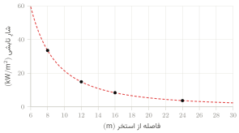
مثال 25.82 (مجذورِ فاصله) پرسش. شارِ تابشی در 8 و 16 m چیست؟
پاسخ. حدودِ 33.5 و 8.4 kW/m²: دو برابر شدنِ فاصله شار را چهار برابر کم کرد.
تفسیر. فاصله یا دیوار ترانسفورماتورِ همسایه و ساختمانها را زیرِ سطحی نگه میدارد که تحمل میکنند؛ کدام سطح، کدام مدل و کدام سنجه تصمیمِ مهندسِ حریق و مقام است (بخش 25.7.1). وارسی: \(0.3 \times 89.7 \times 10^6/(4\pi \times 64) = 33.5\,\text{kW/m}^2\).
تخلیهٔ حوضچه. استخرِ سوزانی که زود تخلیه شود دیگر آتش را تغذیه نمیکند:
draining the bund to the separator tank (teaching):
22 m3 of oil in 10 min: 37 L/s
pipe mm velocity m/s
150 2.07
200 1.17
250 0.75
a burning pool drained fast stops feeding the fire: gravel
in the bund quenches flames, the pipe and the separator take
the oil (and the rain, lesson F) away - the separator
then keeps the oil from the drainage system- چرا نقطهٔ اشتعالِ استر بهتنهایی طراحیِ حریق را تعیین نمیکند؟
- شار در 12 m با همان استخر؟
- لولهٔ 200 mm با 37 L/s چه سرعتی دارد؟
- چرا شن در حوضچه ریخته میشود؟
25.7.4 صدای همهٔ منبعهای محل در نزدیکترین خانه
ایده. صدای دو ترانسفورماتورِ اصلی در بخش 25.7.2 حساب شد؛ ولی محل منبعهای دیگری هم دارد: ترانسفورماتورهای واحد، اینورترها و تهویهٔ باتری. ترازها با جمعِ انرژی (لگاریتمی) ترکیب میشوند:
noise of the site's sources at the nearest home (free field, teaching):
group each dB(A) at 2 m distance m at home
main transformers (2) 72 120 39.4
PV unit transformers (10) 62 300 28.5
PV inverters (10) 70 300 36.5
BESS containers HVAC (8) 75 250 42.1
all together by day: 44.8 dB(A); at night the PV
inverters stop and 44.1 dB(A) remains - the main
transformers and the battery HVAC set the night level, so
both are in the noise specification; the noise study (ch 14,
33) uses real data, ground and screening, and the
authority's limit and methodمثال 25.83 (شب، بیاینورتر) پرسش. ترازِ صدا در خانهٔ نزدیک در روز و شب چیست و چه چیزی شب را تعیین میکند؟
پاسخ. روز 44.8 و شب 44.1 dB(A)؛ شب تهویهٔ هشت کانتینرِ باتری (سناریوی S1) و ترانسفورماتورهای اصلی غالباند.
تفسیر. حدِ شب معمولاً سختگیرانهتر است؛ پس هر دو منبعِ شبانه در مشخصهٔ صدا میآیند. مطالعهٔ صدا (فصلهای ۱۴ و ۳۳) با دادهٔ واقعی، زمین و مانعها و روشِ مقام انجام میشود. وارسی: \(10\log_{10}(10^{3.94} + 10^{2.85} + 10^{4.21}) = 44.1\).
- دو منبعِ 40 dB(A) با هم چند دسیبلاند؟
- چرا تهویهٔ باتری در صدای شب مهم است؟
25.7.5 کربنِ ترانسفورماتور: مواد در برابرِ تلف
ایده. ردپای کربنِ ترانسفورماتور دو بخش دارد: کربنِ نهفته در مواد (ساختِ ورقِ هسته، مس، فولاد، روغن) و کربنِ انرژیِ تلفشده در عمر. ضریبها آموزشیاند؛ مقدارهای واقعی از اظهارنامهٔ محیطزیستیِ سازنده و ضریبِ انتشارِ شبکه میآیند:
carbon of one main transformer: materials against 25 years of losses
(teaching factors t CO2e per t; grid 0.5 t CO2e per MWh)
item t factor t CO2e
core steel 38.0 2.5 95
copper 9.4 4.0 38
tank and structure steel 20.0 2.0 40
oil 19.4 1.0 19
paper, pressboard, other 8.2 1.5 12
materials 204 t CO2e; losses 7,338 t CO2e over 25 years
the losses weigh 36 times the materials: lower losses
are the transformer's main carbon lever, and the loss
evaluation of lesson A already prices most of it; real
factors come from the maker's declaration and the grid'sمثال 25.84 (سیوشش برابر) پرسش. کربنِ مواد و تلفِ ۲۵ سالهٔ یک ترانسفورماتورِ اصلی را مقایسه کنید.
پاسخ. مواد حدودِ 204 و تلفها حدودِ 7,338 t CO₂e؛ تلفها ۳۶ برابرِ مواد.
تفسیر. کاهشِ تلف اهرمِ اصلیِ کربنِ ترانسفورماتور است و ارزیابیِ تلف (بخش 25.2.3) بیشترِ آن را قیمتگذاری کرده است؛ هستهٔ بهتر یا مسِ بیشتر کربنِ موادِ کمی میافزاید و کربنِ تلفِ بسیاری میکاهد. این حساب در فصلهای ۳۳ و ۵۳ با ضریبهای واقعی تکرار میشود. وارسی: \(1{,}174/2 \times 25 \times 0.5 = 7{,}338\).
- با ضریبِ شبکهٔ 0.3، کربنِ تلفها چند برابرِ مواد است؟
- چرا تلفِ روزانه هم کربن دارد با اینکه انرژیاش تجدیدپذیر است؟
25.7.6 صدای بار و صدای هسته
ایده. صدای ترانسفورماتور دو منبع دارد: هسته (مغناطوتنگش، به انگلیسی magnetostriction) که با ولتاژ ثابت است و با بار تغییر نمیکند، و سیمپیچ که با نیروهای جریان میلرزد. توانِ صوتیِ بار تقریباً با توانِ چهارمِ جریان بالا میرود: ترازش \(40\log_{10}(I/I_\text{r})\) تغییر میکند. دو بخش با جمعِ انرژی ترکیب میشوند:
load noise against core noise (sound power, teaching):
core (no-load) 72 dB(A) at any load; winding (load) noise
68 dB(A) at rated current, changing as 40 log10(I / In)
load pu load noise total dB(A)
0.35 49.8 72.0
0.60 59.1 72.2
0.80 64.1 72.7
1.00 68.0 73.5
1.15 70.4 74.3
at night (wind only, about 0.35 pu) the core sets the level;
at rated load the windings add 1.5 dB, at 1.15 pu 2.3 dB - the night
limit is met by the core's design (flux density, steel,
joints), the day limit by both; the guarantee covers both
parts, measured in the factoryمثال 25.85 (شب صدای هسته است) پرسش. با صدای هستهٔ 72 و صدای بارِ 68 dB(A) در جریانِ نامی، کلِ صدا در 0.35 و 1.15 پریونیت؟
پاسخ. 72.0 و 74.3 dB(A).
تفسیر. شب (فقط باد، حدودِ 0.35 پریونیت) هسته تراز را تعیین میکند؛ پس حدِ شب با طراحیِ هسته (چگالیِ شار، ورق، اتصالها) برآورده میشود و حدِ روز با هر دو. ضمانت هر دو بخش را میپوشاند و در کارخانه سنجیده میشود. با بخش 25.7.4: ترازِ شبِ محل از تهویهٔ باتری و صدای هستهٔ ترانسفورماتورهای اصلی است. وارسی: \(68 + 40\log_{10}0.35 = 49.8\).
25.7.7 انرژیِ قوسِ درونِ مخزن
ایده. خطای درونیِ ترانسفورماتور قوسی در روغن میسازد؛ انرژیِ آن (\(E = U_\text{arc}\,I\,t\)) روغن را تجزیه و گاز تولید میکند و فشارِ مخزن را بالا میبرد. زمانِ قطع اهرمِ اصلی است:
energy of an internal arc in a unit transformer tank (teaching):
E = U_arc x I x t; arc voltage taken as 2 kV (assumed)
clearing by time ms current kA energy kJ
current-limiting fuse 5 3.0 30
breaker, instantaneous 80 6.4 1024
breaker, time-graded 400 6.4 5120
fault level 6.4 kA at the 33 kV bus; the energy grows with
the clearing time: a fuse that limits both current and time
keeps the gas pressure in the tank low; an instantaneous
breaker lets 34 times that energy in, a time-graded relay
170 times - tank strength, pressure relief
and clearing time are chosen together (ch 26 settings,
fire interfaces of lesson F)مثال 25.86 (زمانِ قطع، نه فقط جریان) پرسش. انرژیِ قوس با فیوزِ محدودکننده، کلیدِ آنی و کلیدِ با تأخیرِ هماهنگی چیست؟
پاسخ. حدودِ 30، 1,024 و 5,120 kJ (ولتاژِ قوسِ فرضیِ 2 kV).
تفسیر. کلیدِ آنی ۳۴ برابر و رلهٔ با تأخیر ۱۷۰ برابرِ فیوز انرژی به مخزن میدهد. استحکامِ مخزن، شیرِ فشارشکن و زمانِ قطع با هم انتخاب میشوند (تنظیمها در فصلِ ۲۶، رابطهای حریق در بخش 25.7.1). ولتاژِ قوس و نسبتِ گاز به انرژی از دادهٔ سازنده و آزمون میآیند؛ این جدول فقط نسبتها را نشان میدهد. وارسی: \(2{,}000 \times 6{,}400 \times 0.4 = 5.12\,\text{MJ}\).
- صدای کل در 0.8 پریونیت با همان دو منبع؟
- چرا حدِ صدای شب با طراحیِ هسته برآورده میشود؟
- انرژیِ قوس با کلیدِ 150 ms؟
25.8 چ. پستِ صادرات و رابطِ پایانهٔ شبکه
25.8.1 آرایشِ شینه: قابلیتِ اطمینان، جا و هزینه
ایده. آرایشِ شینهٔ 132 kV تعیین میکند خرابی یا نگهداریِ یک جزء چه چیزی را از کار میاندازد. گزینههای رایج: تکشینه، تکشینهٔ بخشبندیشده، دوشینه (و آرایشهای بزرگتر برای پستهای بزرگ). مقایسه با ساعتهای موردِ انتظارِ از دست رفتنِ صادرات، تعدادِ کلیدها و شاخصِ هزینه:
132 kV bus arrangements of the export substation (teaching):
arrangement bays breakers export lost h/yr cost index
single bus 3 3 2.28 1.0
single bus, sectioned 3 4 2.22 1.2
double bus 3 4 0.66 1.6
the line: 0.5 h/yr; one transformer: 131 h/yr at half export (ch 18)
the long repair of a transformer dominates; the double bus
saves under 2 h a year for 60 % more cost - a single bus
with a bus disconnector suits Plant P, and a spare-unit or
repair strategy matters more; the utility's rules for its
own bay may ask more (U-065)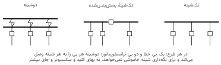
مثال 25.87 (آنچه واقعاً غالب است) پرسش. کدام آرایش را برای نیروگاهِ P پیشنهاد میکنید؟ چه چیزی بیش از آرایشِ شینه بر صادرات اثر دارد؟
پاسخ. تکشینه با سکسیونرِ شینه: 2.3 ساعت در سال در برابرِ 0.7 برای دوشینه با 60 % هزینهٔ بیشتر. تعمیرِ طولانیِ ترانسفورماتور (حدودِ ۱۳۱ ساعت در سال با نیمِ صادرات) غالب است.
تفسیر. با یک خط و دو ترانسفورماتور، پولِ بیشتر برای شینه کمی میخرد؛ راهبردِ یدک یا تعمیرِ ترانسفورماتور (فصلهای ۱۸ و ۵۱) ارزشِ بیشتری دارد. قاعدههای بهرهبردارِ شبکه برای بِیِ خودش ممکن است بیشتر بخواهد (U-065). وارسی: \(0.015 \times 4{,}380 \times 2 = 131\).
25.8.2 بِیِ خط و رابطهای پایانه
export line bay E1 from the line to the plant bus (concept):
surge arresters at the line entrance and at the transformers
line disconnector with earthing switch (ownership boundary)
CTs: protection cores (line, busbar) and a metering core
VTs: protection, synchronising check and revenue metering
circuit breaker with its own protection and control
telecom: protection signalling, SCADA to the utility
the bay's equipment list, ratings and the utility's
acceptance tests are set by the connection agreement| رابط | مالک یا تصمیمگیر | شاهدِ پذیرش |
|---|---|---|
| آرایشِ شینه و بِیها | مالک، با تأییدِ شبکه | نقشهٔ تأییدشده |
| کلید و سکسیونر و کلیدِ زمین | مالکِ هر بِی | آزمونِ کارخانه و محل |
| ترانسفورماتورهای جریان و ولتاژ | مالک؛ هستهٔ کنتور با قاعدهٔ شبکه | گواهیِ دقت |
| برقگیرها | مالک (هماهنگیِ عایق، فصلِ ۲۶) | گواهیِ نوعی، نصب |
| کنتورِ درآمد | قاعدهٔ اندازهگیریِ شبکه | گواهی و مُهرِ شبکه |
| حفاظت، کنترل، مخابرات | مالک و شبکه با پروتکل | آزمونهای مشترک |
| تغذیهٔ ایستگاه | مالک (فصلِ ۲۳) | آزمونِ کارکرد |
| مرزِ مالکیت | قراردادِ اتصال | نقشهٔ مرز (فصلِ ۲۳) |
| مرحلهبندیِ ساخت و دسترسیِ شبکه | برنامهٔ مشترک | مجوزِ کار و پذیرش |
مثال 25.88 (مرحلهبندی و دسترسی) پرسش. چرا مرحلهبندیِ ساخت و دسترسیِ بهرهبردارِ شبکه بخشی از طراحیِ پست است؟
پاسخ. بِیِ شبکه در پستی کار میکند که برقدار است؛ کارِ اتصال به خاموشیهای برنامهریزیشده، مجوزهای کار و نظارتِ شبکه نیاز دارد. ترتیب و زمانِ آنها بر برنامهٔ ساخت و تاریخِ بهرهبرداری اثر میگذارد.
تفسیر. برنامهٔ خاموشی و پذیرشِ بهرهبردار در قراردادِ اتصال و برنامهٔ ساخت میآید (فصلهای ۴۷ و ۵۰)؛ کارِ نزدیکِ تجهیزِ برقدار فقط با روالها و مجوزهای بهرهبردار و کارکنانِ صلاحیتدار انجام میشود.
- سه آرایشِ شینه را با یک برتری و یک کاستی بنویسید.
- چرا دوشینه برای نیروگاهِ P نمیارزد؟
- شش جزءِ بِیِ خط را نام ببرید.
- چه کسی قاعدهٔ کنتورِ درآمد را تعیین میکند؟
25.8.3 فهرستِ تجهیزات و زمینِ محوطهٔ 132 kV
تجهیزاتِ بِیها. آرایشِ شینه (بخش 25.8.1) شمارِ تجهیزات را تعیین میکند:
132 kV equipment take-off: single bus against double bus (3 bays):
item single double
breakers 3 4
disconnectors 6 11
earth switches 3 5
cts 9 12
vts 6 9
arresters 9 9
36 items against 50: the double bus adds a coupler
bay, a second set of bus disconnectors per bay, bus VTs and
earthing - about two-fifths more equipment for the
flexibility of lesson G, which the reliability numbers of
lesson G must then justifyمثال 25.89 (دوپنجم تجهیزاتِ بیشتر) پرسش. برای سه بِی، شینهٔ ساده و دوشینه چند قلم تجهیز میخواهند؟
پاسخ. ۳۶ در برابرِ ۵۰ قلم: کلیدِ کوپلر، سکسیونرهای دومِ شینه، VTهای شینه و کلیدهای زمین.
تفسیر. انعطافِ دوشینه حدودِ دوپنجم تجهیزاتِ بیشتر میخواهد که باید با عددهای قابلیتِ اطمینانِ بخش 25.8.1 توجیه شود؛ این فهرست ورودیِ برآوردِ هزینه و فهرستِ خرید است. وارسی: جمعِ ستونها.
زمینِ محوطه. اندازهٔ هر بِی از فاصلههای ایمنیِ سطحِ عایقی و استانداردِ تأسیسات میآید:
footprint of the 132 kV yard (teaching bay size 11 m x 45 m):
arrangement bays area m2
single bus 3 1485
single bus, sectioned 4 1980
double bus 4 2376
plus roads, the transformer bays, the control building and
the fence clearance; clearances and bay widths come from the
insulation level and the installation standard (the
numbers here are teaching values, not a layout)مثال 25.90 (زمینِ دوشینه) پرسش. با بِیِ آموزشیِ 11 × 45 m، شینهٔ ساده و دوشینه چه زمینی میگیرند؟
پاسخ. 1,485 در برابرِ حدودِ 2,376 m²، بیجادهها، بِیِ ترانسفورماتورها، ساختمان و فاصلهٔ حصار.
تفسیر. در محلِ باز زمین ارزان است و این تفاوت کوچک؛ در جای تنگ بِیِ گازی (فصلِ ۲۴) آن را چهار برابر کم میکند. عددها آموزشیاند و طرحِ محوطه نیستند. وارسی: \(3 \times 11 \times 45 = 1{,}485\).
- دوشینه بیمقایسهٔ تجهیزات و زمین با قابلیتِ اطمینان انتخاب شده است.
- دوشینه چه تجهیزاتی اضافه دارد؟
- با چهار بِی، شینهٔ ساده چند کلید و سکسیونر میخواهد؟
- فاصلههای بِی از کجا میآیند؟
25.8.4 مرحلهبندیِ پست: وقتی ترانسفورماتورِ دوم دیر میرسد
ایده. پستِ صادرات میتواند مرحلهبهمرحله برقدار شود (فصلِ ۲۳، بخش 23.4.3): نخست خط و یک ترانسفورماتور. اگر ترانسفورماتورِ دوم دیر برسد، نیروگاه تا رتبهٔ یکی صادر میکند و بقیه را محدود:
staging: the second main transformer arrives late (teaching)
months late energy above one unit's rating lost MWh k u at 70
1 4425 310
3 13275 929
6 26550 1859
with one transformer the plant exports up to its rating and
curtails the rest: energising stage by stage (ch 23 lesson
C) with one unit first is possible, and the late unit's
cost is the energy above 63 MVA - a number for the
delivery contract's delay damages (ch 39)مثال 25.91 (هر ماه سیصد هزار) پرسش. هر ماه تأخیرِ ترانسفورماتورِ دوم چه انرژی و چه ارزشی از دست میدهد؟
پاسخ. حدودِ 4,425 MWh و 310 هزار واحد در ماه؛ شش ماه 1,859 هزار.
تفسیر. این عدد پایهٔ خسارتِ تأخیرِ قراردادِ تحویل است (فصلِ ۳۹)؛ با یدکِ مشترک یا ترانسفورماتورِ سیار مقایسه میشود (بخش 25.2.7). مرحلهبندی برنامهٔ آزمون و قاعدههای کلیدزنیِ هر مرحله را هم میخواهد. وارسی: \(295{,}000 \times 0.18/12 = 4{,}425\).
- با سهمِ 12 % انرژی بالای رتبهٔ یک واحد، سه ماه تأخیر چند مگاواتساعت است؟
- چرا این عدد به قراردادِ تحویل میرود؟
25.8.5 اندازهگیریِ درآمد در توانِ کم
ایده. کنتورِ درآمد در بِیِ خط (بخش 25.8.2) انرژیِ فروختهشده را میشمارد. ترانسفورماتورِ جریانِ آن (CT) برای جریانِ نامی انتخاب میشود، ولی نیروگاهِ بادی–خورشیدی بخشی از انرژیاش را در جریانِ کم میفروشد: صبحهای خورشیدی و بادِ ضعیف:
revenue metering at low output: share of the year's energy by CT current
(CT 600/1 at the line bay, export up to 437 A; teaching shares)
current band (x rated) amps energy share
0.00 - 0.01 0- 6 A 2%
0.01 - 0.05 6- 30 A 6%
0.05 - 0.20 30- 120 A 17%
0.20 - 1.20 120- 720 A 75%
8 % of the energy passes below 5 % of the CT's rating (PV
mornings, light wind): a CT class accurate down to 1 % of
rating (the 'S' classes) keeps that energy measured within
its limits - the class is set by the grid operator's
metering rules; this table shows why it mattersمثال 25.92 (هشت درصد زیرِ پنج درصد) پرسش. چه سهمی از انرژیِ سال زیرِ 5 % جریانِ نامیِ CT میگذرد و چرا مهم است؟
پاسخ. حدودِ 8 % (سهمهای آموزشی).
تفسیر. دقتِ CT در جریانِ کم بدتر است؛ ردهٔ «S» (مانندِ 0.2S در IEC 61869-2، STD-038) دقت را تا 1 % جریانِ نامی تعریف میکند و این انرژی را در حدِ خود میسنجد. رده را قاعدهٔ اندازهگیریِ بهرهبردارِ شبکه تعیین میکند (جای کنتور هنوز باز است، فصلِ ۲۳)؛ این جدول نشان میدهد چرا. نسبتِ CT هم انتخاب است: نسبتِ کوچکتر جریانِ کم را بهتر میبیند، به شرطِ تحملِ جریانِ اتصالِ کوتاه و بارِ نامی. وارسی: \(0.02 + 0.06 = 0.08\).
- با CT 600/1، جریانِ 5 % نامی چند آمپر است؟
- چرا نیروگاهِ خورشیدی بیش از نیروگاهِ حرارتی به دقت در جریانِ کم نیاز دارد؟
25.8.6 ترانسفورماتور روی پی و شینهٔ لولهای
ترانسفورماتور در زمینلرزه. نیروی افقیِ زمینلرزه با ضریبِ \(a\) (نسبت به شتابِ گرانش) \(F = a\,m\,g\) است. ترانسفورماتور واژگون نمیشود اگر \(F\,h_\text{cg} < W\,b/2\)، و نمیلغزد اگر \(F < \mu\,W\). ضریبها اینجا آموزشیاند:
the transformer on its foundation (teaching coefficients only)
mass 95 t, weight 932 kN, base 4.5 m wide, centre of mass
2.0 m up; friction steel on concrete 0.30
horizontal coeff force kN overturning kNm resisting kNm slides?
0.10 93 186 2097 no
0.20 186 373 2097 no
0.30 280 559 2097 no
0.40 373 746 2097 yes
the unit does not tip, but from about 0.3 it would slide on its
rails: it is anchored to the foundation; the tall bushings
on the tank top shake harder than the ground (amplified),
so their seismic qualification is part of the bid evidence;
the site's design acceleration comes from the seismic
hazard study and the structural engineer (ch 29), not hereمثال 25.93 (واژگون نه، لغزش آری) پرسش. با ضریبهای 0.1 تا 0.4، ترانسفورماتورِ 95 t واژگون میشود یا میلغزد؟
پاسخ. واژگون نمیشود (گشتاورِ واژگونی حداکثر 746 در برابرِ 2,097 kN·m)؛ ولی از حدودِ 0.3 روی ریلها میلغزد.
تفسیر. پس ترانسفورماتور به پی مهار میشود. بوشینگهای بلند روی درِ مخزن بیش از زمین میلرزند (تشدید)، پس صلاحیتِ لرزهایِ آنها جزءِ شاهدهای پیشنهاد است. شتابِ طراحیِ محل از مطالعهٔ خطرِ لرزهای و مهندسِ سازه میآید (فصلِ ۲۹)، نه از اینجا. وارسی: \(0.3 \times 932 = 280\,\text{kN}\) برابرِ \(0.30 \times 932\).
شینهٔ لولهایِ 132 kV. شینههای پستِ هوایی اغلب لولههای آلومینیومیاند. خیزِ تیرِ ساده زیرِ وزنِ خود:
\[ \delta = \frac{5\,w\,L^4}{384\,E\,I}, \qquad I = \frac{\pi}{64}\left(d_\text{o}^4 - d_\text{i}^4\right) \tag{25.19}\]
132 kV tubular busbar, aluminium 100/88 mm (teaching):
self-weight 46.9 N/m; I = 1.96 x 10^-6 m^4
span m deflection mm (5wL^4/384EI) limit L/200 mm
8 18 40
10 44 50
12 92 60
fault force at the gear's 31.5 kA rating (ip 79 kA), 2.0 m
phase spacing: 537 N/m - 11 times the self-weight
spans up to about 10 m meet L/200 under self-weight alone;
at 132 kV the wide spacing keeps fault forces moderate;
the span is set by sag, wind, ice and the supports'
strength under the fault - the maker's or designer's
calculation to the standard, checked in the design reviewمثال 25.94 (ده متر، مرزِ خیز) پرسش. لولهٔ 100/88 mm در دهانههای 8، 10 و 12 m چه خیزی دارد و نیروی خطا در برابرِ وزن چقدر است؟
پاسخ. 18، 44 و 92 mm در برابرِ حدِ L/200 یعنی 40، 50 و 60 mm: تا حدودِ 10 m پذیرفتنی. نیروی خطا در رتبهٔ 31.5 kA حدودِ 537 N/m، ۱۱ برابرِ وزن.
تفسیر. خیز با توانِ چهارمِ دهانه بالا میرود؛ دهانهٔ 12 m دو برابرِ 10 m خم میشود. در 132 kV فاصلهٔ فازها زیاد است و نیروی خطا متوسط؛ در تابلوی 33 kV با فاصلهٔ کم همان نیرو چند کیلونیوتن بر متر است (فصلِ ۲۴). دهانه با خیز، باد، یخ و استحکامِ مقرهها زیرِ خطا تعیین میشود: محاسبهٔ طراح طبقِ استاندارد، وارسیشده در بازبینیِ طراحی. حدِ L/200 اینجا آموزشی است. وارسی: \((12/10)^4 = 2.07\).
- ترانسفورماتورِ سنگین «بینیاز از مهار» فرض شده است چون واژگون نمیشود.
- دهانهٔ شینه با نیروی خطا انتخاب شده و خیز زیرِ وزن و یخ فراموش شده است.
- با \(\mu = 0.25\)، از چه ضریبی ترانسفورماتور میلغزد؟
- خیزِ دهانهٔ 9 m از روی دهانهٔ 10 m؟
- چرا بوشینگ بیش از بدنهٔ ترانسفورماتور میلرزد؟
25.8.7 افتِ ولتاژ در برقدارکردنِ ترانسفورماتورِ اصلی
ایده. جریانِ هجومی (بخش 25.2.5) از امپدانسِ شبکه میگذرد و ولتاژِ شینهٔ 132 kV را در چند سیکلِ نخست پایین میآورد. برآوردِ بالاییِ زبر: \(\Delta U/U \approx (\hat{i}/\sqrt{2})/I_\text{k}\):
voltage dip when a main transformer is energised from 132 kV
rough upper estimate: dU/U ~ (i_peak / sqrt2) / Ik, Ik 5.2 kA
case i_peak A dip
residual flux 0.8 Bn, worst instant 2086 28%
no residual, worst instant 1047 14%
controlled switching (teaching 1.5 x In) 585 8%
a worst-case energising can dip the 132 kV bus by a quarter
for the first cycles; the grid operator limits such rapid
voltage changes (its own figure, open until the grid offer),
so controlled switching or a pre-insertion resistor may be
asked for - the electromagnetic transient study (ch 28)
gives the real valueمثال 25.95 (یکچهارم در بدترین لحظه) پرسش. با جریانِ خطای 5.2 kA در شینهٔ 132 kV، برقدارکردن در بدترین لحظه با شارِ پسماندِ 0.8 و با کلیدزنیِ کنترلشده چه افتی دارد؟
پاسخ. حدودِ 28 % و 8 %.
تفسیر. بهرهبردارِ شبکه تغییرِ سریعِ ولتاژ را با عددِ خودش محدود میکند (تا پیشنهادِ اتصال باز است)؛ پس کلیدزنیِ کنترلشده یا مقاومتِ پیشوصل ممکن است خواسته شود. این برآوردِ زبر است؛ مطالعهٔ گذرای الکترومغناطیسی (فصلِ ۲۸) عددِ واقعی را میدهد. وارسی: \(2{,}086/\sqrt{2}/5{,}200 = 0.28\).
- با شبکهٔ دو برابر قویتر، افتِ بدترین حالت؟
- چرا کلیدزنیِ کنترلشده شارِ پسماند را باید بداند؟
25.8.8 عایقِ هوایی در ارتفاعِ محل
ایده. استحکامِ عایقِ هوایی با چگالیِ هوا کم میشود. چگالیِ نسبیِ هوا با ارتفاع تقریباً نمایی کم میشود (ارتفاعِ مقیاسِ جو حدودِ 8,150 m):
\[ \delta(z) \approx e^{-z/8150\,\text{m}} \tag{25.20}\]
که \(z\) ارتفاع از سطحِ دریاست.
پس تحملپذیریِ عایقِ بیرونی که در سطحِ دریا سنجیده شده در ارتفاع حدودِ \(\delta\) برابر میشود و قطعه باید \(1/\delta\) قویتر انتخاب شود:
air insulation at altitude: relative air density d = exp(-H / 8,150 m)
(barometric scale height); a withstand measured at sea level
falls roughly with d, so the item is chosen 1/d stronger
altitude m air density factor 1/d 650 kV item needs at sea level
0 1.000 1.000 650 kV
1,000 0.885 1.131 735 kV
1,200 0.863 1.159 753 kV
2,000 0.782 1.278 831 kV
Plant P sits at 1,200 m (data pack, assumed): external
insulation - bushings, post insulators, air clearances - is
about 14 % weaker than at sea level (so about 16 % more
strength is specified); the insulation
coordination study applies the standard's altitude
correction (its exponent depends on the voltage shape), and
the specification states the site altitude so the maker
tests or corrects for it; cooling by air is derated too
(lesson tower)مثال 25.96 (شانزده درصد در هزارودویست متر) پرسش. نیروگاهِ P در 1,200 m است (بستهٔ داده، فرضی). عایقِ بیرونی چقدر ضعیفتر است و قطعهٔ 650 kV چه تحملی در سطحِ دریا لازم دارد؟
پاسخ. \(\delta = 0.863\)؛ حدودِ 14 % ضعیفتر (پس قطعه حدودِ 16 % قویتر)؛ معادلِ حدودِ 753 kV در سطحِ دریا.
تفسیر. مطالعهٔ هماهنگیِ عایقی (فصلِ ۲۶) اصلاحِ ارتفاعِ استاندارد را به کار میبرد (توانِ آن به شکلِ موجِ ولتاژ بستگی دارد)؛ مشخصه ارتفاعِ محل را مینویسد تا سازنده آزمون یا اصلاح کند. بوشینگها، مقرههای اتکایی و فاصلههای هوایی همه درگیرند؛ عایقِ درونِ روغن نه. سرمایش با هوا هم کاهش مییابد (بخش 25.3.6). وارسی: \(e^{-1200/8150} = e^{-0.147} = 0.863\).
25.8.9 جا برای باتریِ بعدی
ایده. تصمیمِ D-025 نیروگاه را بیباتری (S0) میسازد ولی جا برای باتریِ بعدی نگه میدارد. کدام بخشهای پست تغییر میکنند؟
room kept for the later battery (S0 now, S1 later; D-025):
item S0 build kept for S1
33 kV bays WS1-3, PVF1-3 BESS-A, BESS-B (spare bays)
bus sections split bus a battery feeder on each
main transformers 2 x 63 MVA no change (below)
site area fenced plot platform for 4 containers
earthing station grid grid extended to the plot
auxiliary supply SST 250 kVA HVAC supply (below)
control PPC, SCADA points reserved
the main transformers need no change: export stays capped at
100 MW at the POC, and a battery charging from PV inside the
plant does not pass through them; charging from the grid
imports at most 20 MW - far below their rating
the auxiliary supply does change: 8 containers x 40 kW of
HVAC (120 kW of cooling at COP 3, ch 19) = 320 kW, more than
the 250 kVA station transformer - fed from the PCS skids or
a second station transformer (decided with the battery
supplier); a reserved bay and space cost little now and
much laterمثال 25.97 (ترانسفورماتورها نه، تغذیهٔ کمکی آری) پرسش. آیا افزودنِ باتری ترانسفورماتورهای اصلی را بزرگتر میخواهد؟ چه چیزی تغییر میکند؟
پاسخ. نه: صادرات در نقطهٔ اتصال 100 MW میماند و شارژ از خورشیدی درونِ نیروگاه از ترانسفورماتورهای اصلی نمیگذرد. تغذیهٔ کمکی تغییر میکند: تهویهٔ هشت کانتینر حدودِ 320 kW است، بیش از ترانسفورماتورِ 250 kVA ایستگاه.
تفسیر. بِیِ رزرو، جای کانتینرها، شبکهٔ زمینِ گسترشیافته و نقطههای کنترلِ رزرو امروز ارزاناند و فردا گران. تغذیهٔ تهویه از اسکیدهای PCS یا ترانسفورماتورِ ایستگاهِ دوم با سازندهٔ باتری تصمیم گرفته میشود (فصلهای ۱۹ و ۲۳). وارسی: \(8 \times 120/3 = 320\,\text{kW}\).
- عایقِ بیرونی با تحملِ سطحِ دریا برای محلِ مرتفع پذیرفته شده است.
- برای «گسترشِ بعدی» فقط زمین نگه داشته شده، نه بِی، زمین و تغذیهٔ کمکی.
- چگالیِ نسبیِ هوا در 1,800 m؟
- چرا عایقِ درونِ روغن به ارتفاع حساس نیست؟
- اگر شارژ از شبکه 40 MW بود، ترانسفورماتورهای اصلی کافی بودند؟
25.9 نیروگاهِ P: سه مثالِ یکپارچه
دادهها: بستهٔ دادهٔ 1.1.0، سناریوی S1، مدلِ تولید (D-019) برای بارِ ساعتی، دمای هوای بستهٔ داده، نمودارِ تکخطی (D-027) و مبنای مدارها (D-028)؛ دادهٔ ترانسفورماتورها، پیشنهادها، پرونده و خرابیها آموزشیاند (A-326 تا A-330).
the 63 MVA nameplate by hand:
rated currents: HV 276 A, LV line 1,102 A, LV delta winding 636 A
full-load losses 35 + 250 = 285 kW; efficiency at pf 1: 99.55 %
fault current behind 12 %: 8.3 x rated = 9.2 kA on the LV side
ratio 132/33 = 4.0 at the principal tapمثال 25.98 (مقدماتی: پلاک با دست) پرسش. از پلاکِ 63 MVA، 132/33 kV، YNd11، \(u_\text{k} = 12\,\%\)، جریانهای نامی، بازدهِ بارِ کامل و جریانِ خطا را با دست حساب کنید.
پاسخ. فشارِ قوی 276 A، فشارِ متوسط 1,102 A در خط و 636 A در سیمپیچِ مثلث؛ بازده 99.55 %؛ خطا \(8.3\) برابرِ نامی یعنی 9.2 kA.
تفسیر. همهٔ اینها از چهار عددِ پلاک میآیند؛ هر ناسازگاری میانِ پلاک و پرونده (مثال 25.59) همینجا دیده میشود. وارسی: \(1{,}102/\sqrt{3} = 636\).
decision record: main transformer bids (teaching):
evaluated at 70 u/MWh, 25 y, 7.5 %, LLF 0.128 from ch 15:
bid A 2,330 k u, bid B 2,242 k u: bid B preferred
conditions: impedance 12 % within the band, YNd11, tap
range after the grid study, ONAF 63 MVA, loss guarantees
with deductions, type tests or proof of design for the
short-circuit withstand, transport within 72 t
sensitivity: bid A wins above about 108 u/MWh
owner of the decision: the owner's engineer with the
procurement team (ch 38)مثال 25.99 (میانی: ثبتِ تصمیمِ خرید) پرسش. تصمیمِ خریدِ ترانسفورماتور را با شرطها و حساسیت ثبت کنید.
پاسخ. پیشنهادِ B با 2,242 هزار در برابرِ 2,330؛ شرطها: امپدانس در بازه، YNd11، بازهٔ تپ پس از مطالعه، ONAF 63 MVA، تضمینِ تلف با کسر، شاهدِ تحملِ خطا، حمل زیرِ 72 t؛ حساسیت: بالای 108 واحد بر مگاواتساعت پیشنهادِ A.
تفسیر. تصمیمِ خرید مشروط است: اگر پروندهای مانندِ مثال 25.59 برسد، شرطِ امپدانس آن را برمیگرداند. حساسیت به قیمتِ انرژی نشان میدهد تصمیم در چه بازاری عوض میشود. وارسی: با مثال 25.6 یکی است.
transformer and export-bay basis of Plant P (D-029):
2 x 63 MVA 132/33 kV YNd11 ONAN/ONAF, z 12 %, OLTC +/-10 %
in 17 steps (range open to the grid study, U-096)
losses evaluated with A and B factors stated in the enquiry
unit transformers: oil-filled 5.5 MVA on the PV and battery
skids, dry-type 5.6 MVA in the turbine towers
containment for 110 % of the oil plus rain; separation,
detection and any suppression from the fire design (ch 31)
132 kV single bus with a bus disconnector; line bay E1 with
arresters, CTs and VTs for protection and revenue metering
dossier review rules: declared values, tolerances and the
decision for each failure written into the contractمثال 25.100 (یکپارچه: مبنای ترانسفورماتور و بِیِ صادرات) پرسش. مبنای ترانسفورماتورها و پستِ صادراتِ نیروگاهِ P را بنویسید.
پاسخ. خروجیِ بالا.
تفسیر. این تصمیمِ D-029 است. موردهای باز: بازهٔ تپ (U-096)، دادهٔ سازنده برای امپدانس و تلف (U-090 از فصلِ ۲۳)، قاعدههای بِیِ شبکه (U-065)، و معیارهای حریق از طراحیِ حریق (U-097). وارسی: هر بند به یکی از مثالهای این فصل برمیگردد.
25.10 عددهای کلیدیِ ترانسفورماتور و پستِ نیروگاهِ P
| کمیت | مقدار | مثال |
|---|---|---|
| ولتاژِ هر دور (1.7 T، 0.45 m²) | 170 V | مثال 25.1 |
| \(r\) و \(x\) پریونیت | 0.004 و 0.120 | مثال 25.2 |
| تنظیمِ ولتاژ (0.95) و بازده | 4.76 %؛ 99.53 % | مثال 25.2 |
| بیشینهٔ بازده | در 0.37 بار | مثال 25.2 |
| تپچنجر | ۱۷ وضعیت، ±10 % | مثال 25.3 |
| ضریبهای A و B | 6.84 و 0.88 | مثال 25.6 |
| عمرِ مصرفشده در یک سال | حدودِ ۳٫۸ روز | مثال 25.7 |
| ساعتهای بالای ONAN | ۱۸۷ | مثال 25.73 |
| جرمِ هسته برای 35 kW | حدودِ 34 t | مثال 25.33 |
| حجمِ حوضچه | 27.2 m³ | مثال 25.79 |
| صدا در 400 m | 29 dB(A) | مثال 25.80 |
| از دست رفتنِ صادرات (تکشینه) | 2.3 ساعت در سال | مثال 25.87 |
25.11 گردشِ کارِ ترانسفورماتور و پست
- ورودیهای مشخصه را از فصلهای پیشین جمع کنید (جدول 25.1).
- امپدانس، گروهِ برداری، بازهٔ تپ و سرمایش را با وابستگیهایشان بسنجید (بخش 25.2.3).
- ضریبهای ارزیابیِ تلف را از بارِ واقعی حساب و در درخواستِ پیشنهاد بنویسید (بخش 25.2.4).
- پیشنهادها را با قیمت و تلف و شرطها ارزیابی کنید (مثال 25.99).
- دروازههای کیفیت و آزمونها را با هدف و پیامدِ شکست در قرارداد بنویسید (بخش 25.3.3، جدول 25.2).
- پرونده را با رواداریها بازبینی کنید (بخش 25.5.1).
- رابطهای حریق، صدا، خدماتِ ایستگاه و پستِ صادرات را ثبت کنید (بخش 25.6، بخش 25.7، بخش 25.8).
25.12 آزمایشگاههای پایتونِ این فصل
| آزمایشگاه | برنامه | آنچه میسازد |
|---|---|---|
| دادهها | sources | ترانسفورماتورِ اصلی، پیشنهادها، واحدها، پرونده، خرابیها |
| نظریه | examples_a | دور، مدارِ معادل، گروهِ برداری، تپ، موازی، خطا |
| بار و طراحی | examples_b | ارزیابیِ پیشنهادها، دما و پیرشدن، سرمایش، وابستگیها |
| پرونده و پست | examples_c | بازبینیِ پرونده (مثالِ کارشده)، کسرِ تلف، حمل، حوضچه، صدا، شینه، بِی |
| ساخت | examples_d | هسته، مسیرِ کارخانه، دروازهها، روغنی و خشک |
| فیزیکِ بیشتر | examples_h | هجوم، اضافهتحریک، هارمونیک، ضربه، نیرو، امپدانس از هندسه، تلفِ گردابی |
| بهرهبرداری | examples_k | روزِ گرم در مدلِ پویا، آب در کاغذ، گازهای روغن، تپچنجر، انبساط، رادیاتور، تلفِ شب، یدک |
| از کارخانه تا برقدار کردن | examples_n | شمارِ ترانسفورماتورها، پاسخِ فرکانسی، ضربهٔ حمل، ترانسفورماتورِ زمین، سیگنالها، تجهیزات و زمینِ محوطه، نخستین برقدار کردن، بوشینگها |
| مشخصه، حمل، حریق و یکپارچگی | examples_p | امپدانس، نولِ فشارِ قوی، بازهٔ تپ، جرمِ حمل، روغن، استر، تابشِ حریق، تخلیه، کابلهای کنترل، ماتریسِ قطع |
| واحدها و آزمونها | examples_s | جریانِ گردشی، واحدِ خورشیدی و توانِ واکنشی، برج، اندازهگیریِ تلف، آزمونِ گرما، هستهٔ آمورف، واحدها در شب |
| N-1، پروندهٔ دوم و محل | examples_t | پروندهٔ واحدِ خورشیدی، اضافهبارِ اضطراری، ضریبِ H، توانِ واکنشی، مرحلهبندی، صدای محل |
| کارخانه، یدک و کنتور | examples_u | مس و تلف، خشککردن، خلأ، کنتور در جریانِ کم، یدکها، تلفِ سالانه |
| سهسیمپیچه، عمر و کربن | examples_v | معادلِ ستاره، حذفِ هارمونیک، تپِ ثابت، فوران، شاخصِ سلامت، تعمیر یا تعویض، کربن |
| پایش، قرارداد و سازه | examples_w | هشدارِ باقیمانده، پرداختهای مرحلهای، افتِ برقدارکردن، زمینلرزه، شینهٔ لولهای |
| شب، عمر و رسیدن | examples_x | توازنِ واکنشیِ شب، هزینهٔ عمر، ناسل یا پایهٔ برج، آمارِ سری، فشارِ گاز |
| ارتفاع، باتری، صدا و قوس | examples_y | عایق در 1,200 m، جا برای باتری، چرخهٔ باتری، صدای بار، انرژیِ قوس |
| گزارشخوانی و ریسک | examples_z | تلف در دمای مرجع، امپدانس در تپها، تنفسگیر، هزینهٔ مورد انتظارِ خرابی، آفتاب روی مخزن |
| نیروگاهِ P | integrated | پلاک با دست، ثبتِ خرید، مبنا |
| مثالها و پاسخها | worked | سطرهای E01 و P01 به بعد |
ماژولِ transformer با شش آزمون در برابرِ حسابِ دستی پایهٔ این برنامههاست.
25.13 ساخت و تولیدِ صنعتی در این فصل
مسیرِ کارخانهٔ ترانسفورماتورِ روغنی و خشک، دروازههای کیفیت و آزمونها در بخش 25.3.3 و بخش 25.4.1 آمد؛ فرایندِ کامل، طرحِ کنترل و پروندهٔ آزمونِ تجهیزاتِ پست در فصلهای ۴۳ تا ۴۵ باز میشود. فرقِ کلیدی: محاسبههای طراحیِ این فصل جهت را نشان میدهند؛ مهندسیِ مختصِ سازنده و آزمونهای کارخانه طرح را ثابت میکنند.
25.14 جعبهٔ استاندارد و انطباق
- IEC 60076-1:2011: ترانسفورماتورهای قدرت، بخشِ کلی (مقدارهای نامی، آزمونها)؛ ویرایشِ چهارم در دستِ تهیه گزارش شده است.
- IEC 60076-7:2018: راهنمای بارگذاریِ ترانسفورماتورهای روغنِ معدنی؛ مدلِ گرماییِ این فصل شکلِ آموزشیِ آن است.
- IEC 60076-11:2018: ترانسفورماتورهای خشک.
- IEC 61936-1:2021: تأسیساتِ قدرتِ بالای 1 kV AC (طراحی و برپاییِ پست)؛ فاصلهها از آن نقل نمیشوند.
- رواداریهای این فصل شرطِ قراردادِ آموزشیاند، نه عددِ استاندارد. قاعدههای حریق، صدا و نگهداشتِ روغن از مقامها و طراحیِ حریق (فصلهای ۳۱، ۵۵ تا ۵۷). (وارسیشده 2026-11-16.)
25.15 تحویلدادنیِ نیروگاهِ P
| سند | محتوا | معیارِ پذیرش |
|---|---|---|
| PLP-ELE-SPC-0006 | مشخصهٔ ترانسفورماتورهای اصلی و واحد | ورودیها از جدول 25.1؛ موردهای باز علامتخورده |
| PLP-ELE-CAL-0010 | ضریبهای ارزیابیِ تلف و ارزیابیِ پیشنهادها | بارِ ساعتی و فرمول در درخواست |
| PLP-ELE-REP-0008 | بازبینیِ رابطها و حریق (حوضچه، فاصله، صدا) | هر رابط با تصمیمگیرنده |
| PLP-ELE-REG-0002 | پروندهٔ آزمون و تصمیمِ هر یافته | هر اندازه با رواداری و تصمیم |
| PLP-ELE-DWG-0008 | آرایشِ پستِ صادرات و بِیِ خط | تأییدِ شبکه |
این فصل اینها را به پروندهٔ نیروگاهِ P میافزاید:
- تصمیمِ D-029: مبنای ترانسفورماتور و بِیِ صادرات (مثال 25.100).
- فرضهای A-326 تا A-330: ترانسفورماتورِ اصلی (A-326)؛ دو پیشنهاد (A-327)؛ ترانسفورماتورهای واحد (A-328)؛ پروندهٔ آزمون و رواداریهای قرارداد (A-329)؛ دادهٔ خرابیِ آرایشهای شینه (A-330).
- مجهولهای U-096 و U-097: بازهٔ تپ پس از مطالعهٔ شبکه؛ معیارهای حریق و نگهداشتِ روغن از طراحیِ حریق و مقام.
- کتابخانهٔ همراه: ماژولِ
transformerبا آزمونها و برنامههای فصلِ ۲۵.
25.16 جمعبندی
- نظریه: ولتاژِ هر دور از قانونِ فارادی؛ مدارِ معادل از آزمونهای بیباری و اتصالِ کوتاه؛ تنظیمِ ولتاژ بیشتر از راکتانس؛ بیشینهٔ بازده در برابریِ تلفها (بخش 25.2).
- مشخصه: گروهِ برداری، تپ، امپدانس بهعنوانِ مصالحه، کارِ موازی، خطا و هجوم؛ ورودیها از فصلهای پیشین (بخش 25.2.3).
- تلف و دما: ارزیابیِ پیشنهاد با \(A\) و \(B\) از بارِ واقعی؛ نقطهٔ داغ و پیرشدن؛ ONAN و ONAF (بخش 25.2.4).
- طراحی و ساخت: توالیِ طراحی، وابستگیها، اجزا، مسیرِ کارخانه، دروازههای کیفیت، روغنی و خشک (بخش 25.3).
- آزمون و پرونده: سه ردهٔ آزمون با هدف و پیامد؛ بازبینیِ پرونده با رواداریهای قرارداد؛ کسرِ تلف (بخش 25.4، بخش 25.5).
- پست: کمکیِ ترانسفورماتورها و پاسخ به خرابی؛ حوضچه، رابطهای حریق و صدا بی نسخهٔ عمومی؛ آرایشِ شینه و بِیِ خط و رابطهای شبکه (بخش 25.6، بخش 25.7، بخش 25.8).
- واحدها و سریها: جریانِ گردشی، ترانسفورماتورِ واحد با توانِ واکنشی و تپِ ثابت، سهسیمپیچه و حذفِ هارمونیک، هستهٔ آمورف، تلفِ شبانه و سالانهٔ ۲۸ ترانسفورماتور، پروندهٔ نخستین واحد و آمارِ سری (بخش 25.2.9، بخش 25.2.12، بخش 25.2.11، بخش 25.5.5، بخش 25.5.8).
- بهرهبرداری: اضافهبارِ N-1، ضریبِ نقطهٔ داغ، چرخهٔ باتری، توازنِ واکنشیِ شب، عمرِ کاغذ از فوران، شاخصِ سلامت، هشدارِ باقیمانده، یدکها و تعمیر یا تعویض (بخش 25.2.10، بخش 25.5.6، بخش 25.5.7، بخش 25.6.4).
- کارخانه و تحویل: مس و تلف، خشککردن، خلأ، عدمِ قطعیتِ تلف، آزمونِ گرما، پرداختهای مرحلهای، فشارِ گازِ رسیدن (بخش 25.3.7، بخش 25.4.5، بخش 25.4.6، بخش 25.4.7).
- پست و محل: کنتور در جریانِ کم، مرحلهبندی، افتِ برقدارکردن، زمینلرزه و شینهٔ لولهای، ارتفاع، جا برای باتری، صدای محل و صدای بار، قوسِ درونی، کربن (بخش 25.8.5، بخش 25.8.6، بخش 25.8.8، بخش 25.7.4، بخش 25.7.5).
25.16.1 واژگانِ فصلِ ۲۵
| فارسی | انگلیسی | یادداشت |
|---|---|---|
| قانونِ فارادی | Faraday’s law | |
| چگالیِ شار | flux density | |
| نسبتِ دور | turns ratio | |
| مدارِ معادل | equivalent circuit | |
| راکتانسِ نشتی | leakage reactance | |
| آزمونِ بیباری | no-load test | |
| آزمونِ اتصالِ کوتاه | short-circuit test | |
| تلفِ بیباری | no-load loss | P0 |
| تلفِ بار | load loss | Pk |
| امپدانسِ اتصالِ کوتاه | short-circuit impedance | uk |
| تنظیمِ ولتاژ | voltage regulation | |
| گروهِ برداری | vector group | |
| تپچنجرِ زیرِ بار | on-load tap changer | OLTC |
| کارِ موازی | parallel operation | |
| جریانِ هجومی | inrush current | |
| اضافهتحریک | over-excitation | |
| سرمایشِ طبیعی و فن | ONAN / ONAF cooling | |
| نقطهٔ داغ | hot spot | |
| روغنِ بالایی | top oil | |
| آهنگِ پیرشدن | ageing rate | |
| ارزیابیِ تلف | loss capitalisation | |
| ضریبِ تلفِ بار | loss load factor | |
| بخشِ فعال | active part | |
| هسته | core | |
| ورقِ فولادِ الکتریکی | electrical steel | |
| ضریبِ ساخت | building factor | |
| اتصالِ پلهای | step-lap joint | |
| سیمپیچ | winding | |
| بوشینگ | bushing | |
| کنسرواتور | conservator | |
| رادیاتور | radiator | |
| رلهٔ گاز | gas (Buchholz) relay | |
| شیرِ فشارشکن | pressure relief device | |
| خشککردن | drying | |
| ترانسفورماتورِ خشک | dry-type transformer | |
| رزینِ ریخته | cast resin | |
| دروازهٔ کیفیت | quality gate | |
| آزمونِ پذیرشِ کارخانه | factory acceptance test | FAT |
| پروندهٔ آزمون | test dossier | |
| رواداری | tolerance | |
| ثبتکنندهٔ ضربه | impact recorder | |
| حوضچهٔ نگهداشتِ روغن | oil containment bund | |
| جداکنندهٔ روغن | oil separator | |
| دیوارِ آتش | fire barrier wall | |
| ترازِ صدا | sound level | |
| آرایشِ شینه | bus arrangement | |
| تکشینه | single bus | |
| دوشینه | double bus | |
| بِیِ خط | line bay | |
| برقگیر | surge arrester | |
| پستِ صادرات | export substation | |
| جریانِ هجومی | inrush current | |
| شارِ پسماند | residual flux | |
| اضافهتحریک | over-excitation | V/Hz |
| ضریبِ تلفِ هارمونیکی | harmonic loss factor | |
| درهمپیچی | interleaved winding | |
| ظرفیتِ سری | series capacitance | |
| کابلِ پیوستهجابهجاشده | continuously transposed cable | CTC |
| گازهای حلشده | dissolved gas analysis | DGA |
| تنفسگیر | breather | |
| پاسخِ فرکانسی | frequency response analysis | FRA |
| ثبتکنندهٔ ضربه | impact recorder | |
| ترانسفورماتورِ زمین | earthing transformer | |
| دایورتر | diverter switch | |
| جریانِ گردشی | circulating current | |
| ترانسفورماتورِ سهسیمپیچه | three-winding transformer | |
| تپچنجرِ بیبرق | off-circuit tap changer | DETC |
| هستهٔ آمورف | amorphous core | |
| درجهٔ پلیمرشدن | degree of polymerisation | DP |
| فوران | furan (2-furaldehyde) | 2-FAL |
| شاخصِ سلامت | health index | HI |
| باقیمانده | residual (model minus measurement) | |
| آزمونِ افزایشِ دما | temperature-rise test (heat run) | |
| ضریبِ نقطهٔ داغ | hot-spot factor | H |
| ضریبِ بارِ تلف | loss load factor | LLF |
| ذخیرهٔ مشترکِ یدک | spare pool | |
| مغناطوتنگش | magnetostriction | |
| شینهٔ لولهای | tubular busbar | |
| چگالیِ نسبیِ هوا | relative air density | |
| کلیدزنیِ کنترلشده | controlled switching |
25.17 ارزیابیِ پلکانی
معیارِ تسلطِ این فصل: خواننده میتواند ترانسفورماتور را از نظریه تا پلاک توضیح دهد، مشخصه را از الزامها بسازد، پیشنهادها را با تلف بسنجد، دما و پیرشدن را برآورد کند، پرونده را در برابرِ قرارداد تفسیر کند، و پستِ صادرات را با رابطهایش طراحیِ مفهومی کند. پاسخها در بخش 25.18 آمدهاند.
25.17.1 پلهٔ ۱: مبانی
تمرین 25.1 معادلهٔ 25.1 را توضیح دهید.
تمرین 25.2 چرا چگالیِ شارِ بیشتر یک مصالحه است؟
تمرین 25.3 دو شاخهٔ مدارِ معادل و آزمونِ هر کدام را بنویسید.
تمرین 25.4 معادلهٔ 25.2 را توضیح دهید.
تمرین 25.5 معادلهٔ 25.3 را توضیح دهید.
تمرین 25.6 بازده کجا بیشینه است؟
تمرین 25.7 YNd11 را بخوانید.
تمرین 25.8 دو پیامدِ سیمپیچِ مثلث برای نمودارِ تکخطی را بنویسید.
تمرین 25.9 تپچنجر چه چیزی را جبران میکند؟
تمرین 25.10 سه شرطِ کارِ موازی را بنویسید.
تمرین 25.11 چرا امپدانس مصالحه است؟
تمرین 25.12 جریانِ هجومی چیست و چرا مهم است؟
تمرین 25.13 نه ورودیِ مشخصه و منبعِ هر کدام را بنویسید.
تمرین 25.14 ضریبهای \(A\) و \(B\) را تعریف کنید.
تمرین 25.15 ضریبِ تلفِ بار چیست؟
تمرین 25.16 چرا فرمولِ ارزیابی در درخواستِ پیشنهاد نوشته میشود؟
تمرین 25.17 معادلهٔ 25.4 را توضیح دهید.
تمرین 25.18 نقطهٔ داغ چیست؟
تمرین 25.19 ONAN و ONAF را تعریف کنید.
تمرین 25.20 ده گامِ توالیِ طراحی را بنویسید.
تمرین 25.21 اجزای ترانسفورماتورِ روغنی را نام ببرید.
تمرین 25.22 ضریبِ ساخت چیست؟
تمرین 25.23 مسیرِ کارخانهٔ ترانسفورماتورِ روغنی را بنویسید.
تمرین 25.24 مسیرِ ترانسفورماتورِ رزینی چه فرقی دارد؟
تمرین 25.25 ده دروازهٔ کیفیت را نام ببرید.
تمرین 25.26 چرا رطوبت پیش از روغن سنجیده میشود؟
تمرین 25.27 سه ردهٔ آزمونِ ترانسفورماتور را تعریف کنید.
تمرین 25.28 شش آزمون، هدف و پیامدِ شکست را بنویسید.
تمرین 25.29 کدام کارهای آزمون به تأسیساتِ ویژه نیاز دارند؟
تمرین 25.30 سه شاهدِ حملِ سالم را بنویسید.
تمرین 25.31 شش بارِ پست و تغذیهشان را بنویسید.
تمرین 25.32 شش رابطِ حریقِ ترانسفورماتور را نام ببرید.
تمرین 25.33 چرا نسخهٔ عمومیِ حریق در کار نیست؟
تمرین 25.34 صدا با فاصله چگونه کم میشود؟
تمرین 25.35 سه آرایشِ شینه را نام ببرید.
تمرین 25.36 شش جزءِ بِیِ خط را نام ببرید.
تمرین 25.37 نه رابطِ پستِ صادرات را نام ببرید.
تمرین 25.38 شارِ پسماند چیست و چرا هجوم را بزرگتر میکند؟
تمرین 25.39 اضافهتحریک یعنی چه؟
تمرین 25.40 کنسرواتور چه میکند؟
تمرین 25.41 کدام گازِ حلشده فقط از قوس میآید؟
تمرین 25.42 ثبتکنندهٔ ضربه چه چیزی را ثابت میکند؟
تمرین 25.43 درهمپیچی در سیمپیچ چه میکند؟
تمرین 25.44 ماتریسِ قطعِ ترانسفورماتور چه چیزی را نشان میدهد؟
تمرین 25.45 چرا مخزن با گازِ خشک حمل میشود؟
تمرین 25.46 ضریبِ بارِ تلف با ضریبِ بار چه فرقی دارد؟
تمرین 25.47 ردهٔ «S» ترانسفورماتورِ جریان چه چیزی را تعریف میکند؟
تمرین 25.48 درجهٔ پلیمرشدن چه چیزی را میسنجد؟
تمرین 25.49 چرا شاخصِ سلامت تشخیص نیست؟
تمرین 25.50 باقیماندهٔ دمای روغن چیست؟
25.17.2 پلهٔ ۲: تحلیل
تمرین 25.51 ولتاژِ هر دور با 1.7 T و 0.45 m²؟
تمرین 25.52 \(r\) و \(x\) برای 63 MVA، 250 kW، 12 %؟
تمرین 25.53 تنظیمِ ولتاژ در بارِ کامل با 0.95؟
تمرین 25.54 بازده در 0.37 بار؟
تمرین 25.55 نقطهٔ داغ در بارِ نامی و 30 °C و آهنگِ پیرشدن؟
تمرین 25.56 جریانِ خطا از 63 MVA، 12 % در 33 kV؟
تمرین 25.57 دور برای 19,053 V با 150 V در هر دور؟
تمرین 25.58 ولتاژِ هر دور با 1.6 T و 0.40 m²؟
تمرین 25.59 مقطع برای 636 A با 2.5 A/mm²؟
تمرین 25.60 \(r\) برای 40 MVA و 200 kW؟
تمرین 25.61 \(x\) برای 10 % و \(r = 0.005\)؟
تمرین 25.62 تنظیم با \(r = 0.005\)، \(x = 0.10\)، ضریبِ 0.9؟
تمرین 25.63 بازده در نیمبار با 0.95؟
تمرین 25.64 بارِ بیشینهٔ بازده برای 28 و 215 kW؟
تمرین 25.65 \(A\) و \(B\) با 70 واحد، ۲۵ سال، 7.5 %، 0.128؟
تمرین 25.66 ارزشِ فعلیِ 40 kW بیباری و 300 kW بار؟
تمرین 25.67 همان با 100 واحد؟
تمرین 25.68 نقطهٔ داغ در 0.8 بار و 35 °C؟
تمرین 25.69 آهنگِ پیرشدن در 110 °C؟
تمرین 25.70 آهنگِ پیرشدن در 86 °C؟
تمرین 25.71 90 MVA روی دو واحد با 12 و 14 %؟
تمرین 25.72 جریانِ خطا از 40 MVA، 10 %، 33 kV؟
تمرین 25.73 نسبتِ نیرو برای 8 %؟
تمرین 25.74 صدای سه منبعِ 70 dB؟
تمرین 25.75 75 dB در 2 m، در 100 m؟
تمرین 25.76 حوضچه برای 30 m³ روغن و 60 mm باران روی 80 m²؟
تمرین 25.77 ولتاژِ فشارِ قوی در تپِ +5 %؟
تمرین 25.78 جریانِ نامیِ 63 MVA در 132 kV؟
تمرین 25.79 جریانِ سیمپیچِ مثلث در 33 kV؟
تمرین 25.80 آستانهٔ پریونیتِ ONAN؟
تمرین 25.81 کسرِ تلف برای 1.1 kW و 12 kW اضافه؟
تمرین 25.82 بازهٔ امپدانسِ 12 % ± 7.5 %؟
تمرین 25.83 جرمِ هسته برای 35 kW با 0.9 W/kg و 1.15؟
تمرین 25.84 اختلافِ ساعتهای خاموشیِ تکشینه و دوشینه؟
تمرین 25.85 قیمتِ برابریِ دو پیشنهاد؟
تمرین 25.86 قلهٔ هجوم با شارِ پسماندِ 0.6 برابر (همان دادههای درس)؟
تمرین 25.87 شار در V/f برابرِ 1.08 با 1.7 T نامی؟
تمرین 25.88 F_HL با فقط هارمونیکِ هفتمِ 5 %؟
تمرین 25.89 ولتاژِ دیسکِ نخست با \(\alpha = 5\)، ۶۰ دیسک و 550 kV؟
تمرین 25.90 فشار با امپدانسِ 15 % نسبت به 12 %؟
تمرین 25.91 امپدانس با شکافِ 0.14 m (بقیه مانندِ درس)؟
تمرین 25.92 سهمِ گردابی با رشتهٔ 1.8 mm (پایهٔ 10 % در 2.5 mm)؟
تمرین 25.93 حجمِ تغییرِ 22 m³ روغن از 20 تا 80 °C؟
تمرین 25.94 با ۳٬۰۰۰ کار در سال، سرویسِ دایورتر با 100,000 کار؟
تمرین 25.95 خاموش کردنِ یک ترانسفورماتور در 3,000 h کمتولید چند مگاواتساعت صرفه دارد؟
تمرین 25.96 با امپدانسِ 14 % جریانِ خطای 33 kV و تنظیم چیست؟
تمرین 25.97 تپِ لازم در ولتاژِ شبکهٔ 1.08 و افزایشِ 3 %؟
تمرین 25.98 بارِ هر محور با تریلرِ دهمحوره برای 72 t؟
تمرین 25.99 شارِ تابشی در 12 m از همان استخر؟
تمرین 25.100 سرعت در لولهٔ 200 mm با 37 L/s؟
تمرین 25.101 با کابلهای هشترشتهای، چند کابلِ سیگنال برای ۵۶ سیگنال؟
تمرین 25.102 جریانِ گردشی با سه پله اختلاف و امپدانسِ 10 % هر کدام؟
تمرین 25.103 ترانسفورماتورِ واحد برای اینورترِ 4.4 MW تا ضریبِ توانِ 0.9؟
تمرین 25.104 صرفهٔ عمرِ هستهٔ آمورف برای ۱۲ ترانسفورماتور با 7.0 به 2.2 kW و \(A = 6.84\)؟
تمرین 25.105 هوای لازم برای 40 kW با 10 K افزایش؟
تمرین 25.106 خطای تلف با ضریبِ توانِ 0.05 و 0.3 mrad؟
تمرین 25.107 با ثابتِ زمانیِ 2.67 h، کی افزایش به 99 % نهایی میرسد؟
تمرین 25.108 پیری با \(H = 1.2\) نسبت به 1.1 (همان درس)؟
تمرین 25.109 مصرفِ واکنشیِ هر ترانسفورماتور در صادراتِ 80 MW (ضریبِ توانِ 0.95)؟
تمرین 25.110 حدِ تلفِ بیباری با رواداریِ +15 % برای 4.5 kW؟
تمرین 25.111 با سهمِ 12 % انرژی بالای رتبهٔ یک واحد، سه ماه تأخیر؟
تمرین 25.112 دو منبعِ 40 dB(A) با هم؟
تمرین 25.113 مسِ لازم برای 200 kW تلفِ \(I^2R\) در 3.5 A/mm²؟
تمرین 25.114 آبِ بیرونآمده از 6 t کاغذ از 7 % تا 0.5 %؟
تمرین 25.115 نیروی خلأ روی دیوارهٔ 5 × 3 m؟
تمرین 25.116 با ضریبِ بارِ تلفِ 0.25، تلفِ بارِ ۱۲ واحدِ بادی (50 kW)؟
تمرین 25.117 با CT 600/1، جریانِ 5 % و 1 % نامی؟
تمرین 25.118 معادلِ ستاره با \(Z_{12} = 7\,\%\)، \(Z_{13} = 7\,\%\) و \(Z_{23} = 12\,\%\)؟
تمرین 25.119 باقیماندهٔ هارمونیکِ پنجم با گروهِ دوم در 75 % بار (هر کدام 2 %)؟
تمرین 25.120 درجهٔ پلیمرشدن برای 2-FAL برابرِ 0.1 mg/kg؟
تمرین 25.121 شاخصِ سلامتِ T1 اگر امتیازِ تحلیلِ گاز ۴ شود؟
تمرین 25.122 هزینهٔ کلِ تعمیرِ ۱۲ ماهه با 900 هزار واحد و 310 در ماه؟
تمرین 25.123 با ضریبِ شبکهٔ 0.3، کربنِ تلفها چند برابرِ مواد (204 t) است؟
تمرین 25.124 هزینهٔ پولِ پیشپرداختِ 20 % از 1,700 هزار در ماهِ ۲۴ پیش از بهرهبرداری با 6 %؟
تمرین 25.125 با \(\mu = 0.25\)، از چه ضریبی ترانسفورماتور میلغزد؟
تمرین 25.126 خیزِ دهانهٔ 9 m اگر دهانهٔ 10 m 44 mm است؟
تمرین 25.127 با شبکهٔ دو برابر قویتر (\(I_\text{k} = 10.4\,\text{kA}\))، افتِ بدترین حالت؟
تمرین 25.128 توانِ واکنشیِ 10 km کابلِ 33 kV با 0.21 µF/km؟
تمرین 25.129 تلفِ کابلِ LV برجِ 130 m (همان کابلها، 5 MW)؟
تمرین 25.130 فشارِ انتظاری در 20 °C برای 0.25 bar(g) در 30 °C؟
تمرین 25.131 بخشِ نگهداری با نرخِ 6 % (8 هزار در سال، ۲۵ سال)؟
تمرین 25.132 چگالیِ نسبیِ هوا در 1,800 m؟
تمرین 25.133 صدای کل در 0.8 پریونیت (هسته 72، بارِ نامی 68 dB(A))؟
تمرین 25.134 انرژیِ قوس با کلیدِ 150 ms، 6.4 kA و 2 kV؟
تمرین 25.135 با چرخهٔ چهارساعته، روغن چه کسری از راهِ ماندگار را میرود (\(\tau = 3\,\text{h}\))؟
تمرین 25.136 تلفِ مرجع اگر اندازهگیری در 30 °C بود (155 و 72 kW)؟
تمرین 25.137 ترازِ خطای 33 kV با امپدانسِ 11.0 % برای 63 MVA؟
تمرین 25.138 آبِ سالانهٔ تنفسگیر با 6.9 g/m³ و 0.41 m³ در روز؟
تمرین 25.139 حقِ عضویتِ سربهسر با نرخِ 0.01؟
تمرین 25.140 گرمای جذبشدهٔ مخزن با \(\alpha = 0.5\)، 8 m² و 1 kW/m²؟
25.17.3 پلهٔ ۳: کاربرد
تمرین 25.141 اگر امپدانسِ اندازهگیریشده 13.4 % پذیرفته شود، جریانِ خطا و تنظیمِ ولتاژ چه میشوند؟
تمرین 25.142 نیروگاه باتری را حذف کند (S0). بارِ ترانسفورماتور و ضریبهای ارزیابی چه میشوند؟
تمرین 25.143 قیمتِ انرژی 120 واحد شود. کدام پیشنهاد؟
تمرین 25.144 در هوای 45 °C و بارِ 0.9، نقطهٔ داغ؟
تمرین 25.145 اضافهبارِ 1.1 برای دو ساعت در 40 °C: آهنگِ پیرشدن و عمرِ مصرفشده؟
تمرین 25.146 گروهِ برداریِ یکی از دو ترانسفورماتور Dyn1 اعلام شد. چه میکنید؟
تمرین 25.147 فنها از کار افتادند. محدودیتِ کنترلگر و انرژیِ ازدسترفته؟
تمرین 25.148 یک ترانسفورماتورِ یدک برای دو واحد: ساعتهای نیمصادرات چه میشود؟
تمرین 25.149 سازنده تلفِ بیباری را 20 % بیشتر از تضمین اندازه گرفت. چه میکنید؟
تمرین 25.150 حوضچه برای دو ترانسفورماتور با حوضچهٔ مشترک چه حجمی میخواهد؟
تمرین 25.151 خانهای در 150 m است. صدا چه میشود؟
تمرین 25.152 شبکه دوشینه میخواهد. هزینه و سود را بسنجید.
تمرین 25.153 ترانسفورماتورِ واحدِ برج روغنی شود. چه رابطهایی تغییر میکند؟
تمرین 25.154 برای مسیرِ حملی با پلِ 60 t، چه گزینههایی دارید؟
تمرین 25.155 یک پرسشِ تازه از شبکه برای بِیِ خط بنویسید.
تمرین 25.156 برای ترانسفورماتورِ خدمات، ارزیابیِ تلف را با بارِ فصلِ ۲۳ تکرار کنید.
تمرین 25.157 چرا یک روزِ گرم با بارِ زیاد به اندازهٔ یک سال عمر میبرد؟
تمرین 25.158 با سهمِ 25 % انرژی بالای ظرفیتِ یک واحد، انرژیِ ازدسترفتهٔ دو × ۶۳ چیست؟
تمرین 25.159 امپدانسِ پرونده 13.4 % است؛ پیامدش بر جریانِ خطای 33 kV و نیروی سیمپیچ چیست؟
تمرین 25.160 روندِ T2 در مثال 25.61 چه میگوید و اقدام چیست؟
تمرین 25.161 جفتِ بوشینگِ HV B را چه کنید؟
تمرین 25.162 اگر بهرهبردار نولِ صلب بخواهد، چه چیزهایی در مشخصه عوض میشود؟
تمرین 25.163 چرا قطعِ دمایی قفل نمیگذارد ولی رلهٔ گاز میگذارد؟
تمرین 25.164 گزارشِ آزمونِ گرمایی فقط آخرین قرائت را داده است؛ چه میخواهید؟
تمرین 25.165 یافتهٔ ترانسفورماتورِ واحدِ خورشیدی را در مشخصه بنویسید.
تمرین 25.166 برای قاعدهٔ بهرهبرداریِ N-1، چه عددهایی از سازنده میخواهید؟
تمرین 25.167 چرا پذیرشِ نخستین واحدِ خورشیدی با یافتههای مثال 25.66 خطاست؟
تمرین 25.168 پیشنهادی تلفِ بارِ 200 kW با 6 t مس وعده میدهد؛ چه میپرسید؟
تمرین 25.169 فهرستِ یدکِ ترانسفورماتورهای واحد را با همان قاعده بسازید.
تمرین 25.170 تپِ ثابت هیچ گوشهای را با نوسانِ شینه نمیپوشاند؛ سه راه را مقایسه کنید.
تمرین 25.171 ترانسفورماتورِ سهسیمپیچه یا دو ترانسفورماتورِ دوسیمپیچه برای دو اینورتر؟
تمرین 25.172 منطقِ هشدارِ باقیمانده را برای مشخصهٔ پایش بنویسید.
تمرین 25.173 دو طرحِ پرداخت را از دیدِ مالک و سازنده مقایسه کنید.
تمرین 25.174 پیشنهادِ «ترانسفورماتورهای خورشیدی را شب خاموش کنید» را داوری کنید.
تمرین 25.175 سابقهٔ رسیدنِ ترانسفورماتورِ بیروغن چه چیزهایی دارد؟
تمرین 25.176 فهرستِ «جا برای باتری» را برای مشخصهٔ پست بنویسید.
تمرین 25.177 گزارشِ آزمونی تلفِ بار را بیتفکیکِ \(I^2R\) و پراکنده داده است؛ چه میخواهید؟
25.17.4 پلهٔ ۴: طراحی و راستیآزمایی
تمرین 25.178 مشخصهٔ ترانسفورماتورِ اصلی را با ورودیها، موردهای باز و شاهدها بنویسید.
تمرین 25.179 یک آزمون برای تابعِ مدارِ معادل با دادهٔ دستی بنویسید.
تمرین 25.180 قاعدههای بازبینیِ پرونده را به جدولِ تصمیم (پذیرش، کسر، تعمیر، رد) تبدیل کنید.
تمرین 25.181 یک برگهٔ ارزیابیِ پیشنهاد با فرمول و حساسیت طراحی کنید.
تمرین 25.182 مدلِ دمای ساعتی را برای یک ترانسفورماتورِ خدمات اجرا کنید.
تمرین 25.183 رابطهای حریق را به یک فهرستِ پرسش برای طراحِ حریق تبدیل کنید.
تمرین 25.184 ماتریسِ علت و معلولِ فصلِ ۲۳ را برای خرابیهای ترانسفورماتور گسترش دهید.
تمرین 25.185 مقایسهٔ آرایشهای شینه را با هزینهٔ انرژیِ ازدسترفته کامل کنید.
تمرین 25.186 ردیابیِ الزام تا شاهد را برای ترانسفورماتورِ واحد بنویسید.
تمرین 25.187 برنامهٔ بازرسی برای حمل و نصبِ ترانسفورماتور با نقطههای توقف بنویسید.
تمرین 25.188 بندِ مشخصهٔ ترانسفورماتور دربارهٔ هارمونیکها و اضافهتحریک را بنویسید.
تمرین 25.189 برنامهٔ پایشِ وضعِ ترانسفورماتورهای اصلی را بنویسید.
تمرین 25.190 نقطههای توقفِ حمل تا نخستین برقدار کردن را فهرست کنید.
تمرین 25.191 بندهای حمل در مشخصهٔ ترانسفورماتور را بنویسید.
تمرین 25.192 ارزیابیِ تلفِ ترانسفورماتورهای واحد را در درخواستِ پیشنهاد بنویسید.
تمرین 25.193 مشخصهٔ صدای محل را برای ترانسفورماتورها و تهویهٔ باتری بنویسید.
تمرین 25.194 الزامِ اندازهگیریِ درآمد را برای مشخصهٔ بِیِ خط بنویسید.
تمرین 25.195 سیاستِ پایشِ عمرِ کاغذ را برای دو ترانسفورماتورِ اصلی بنویسید.
تمرین 25.196 مقایسهٔ ترانسفورماتورِ ناسل و پایهٔ برج را برای ارزیابیِ پیشنهادِ توربین بنویسید.
25.17.5 پلهٔ ۵: تسلط
تمرین 25.197 از تصمیمِ D-029 دفاع کنید: پیشنهاد، رواداریها و آرایشِ پست با عدد.
تمرین 25.198 نشان دهید چرا ترانسفورماتورِ نیروگاهِ تجدیدپذیر با ترانسفورماتورِ یک کارخانه فرق دارد (بار، تلف، پیرشدن).
تمرین 25.199 زنجیرهٔ شاهدِ ترانسفورماتور از مواد تا برقدار کردن را بنویسید.
تمرین 25.200 برای پروندهٔ مثال 25.59 یک تصمیمِ کامل با دلیل و پیامد برای فصلهای ۲۳ و ۲۸ بنویسید.
تمرین 25.201 راهبردِ یدک برای دو ترانسفورماتورِ اصلی را با ارزشِ انرژیِ ازدسترفته پیشنهاد کنید.
تمرین 25.202 انتخابِ دو × ۶۳ را در برابرِ یک × ۱۲۵ و سه × ۴۵ با یدک و تلف بسنجید و تصمیم بنویسید.
تمرین 25.203 برای ترانسفورماتورهای واحدِ خورشیدی کنارِ هم، استر یا روغنِ معدنی را بسنجید و پرسشهای مهندسِ حریق را بنویسید.
تمرین 25.204 یک «پروندهٔ پذیرش» برای ده ترانسفورماتورِ واحدِ خورشیدی بنویسید: از پروندهٔ نخستین واحد تا آمارِ سری، رسیدن به محل و نخستین برقدارکردن.
تمرین 25.205 سیاستِ شبِ نیروگاه را برای ترانسفورماتورها پیشنهاد کنید: کدام برقدار بمانند، توانِ واکنشی چگونه متعادل شود، و چه هزینه و صدایی دارد.
تمرین 25.206 برای دو ترانسفورماتورِ اصلی یک برنامهٔ «ریسکِ عمر» بنویسید: پایش، یدک، ذخیرهٔ مشترک و تصمیمِ پس از خرابی.
25.18 پاسخنامه و راهحلها
پاسخهای عددی را برنامهٔ worked میسازد (سطرهای E01 و P01 به بعد در بخش 25.18.1). برای مسئلههای طراحی و تسلط، معیارهای پاسخ آمدهاند.
حل. تمرین 25.1. بخش 25.2.1.
حل. تمرین 25.2. مثال 25.1.
حل. تمرین 25.3. بخش 25.2.2.
حل. تمرین 25.4. بخش 25.2.2.
حل. تمرین 25.5. بخش 25.2.2.
حل. تمرین 25.6. جایی که تلفِ بار برابرِ تلفِ بیباری است.
حل. تمرین 25.7. شکل 25.3.
حل. تمرین 25.8. زمینِ 33 kV، جبرانِ زاویه در حفاظت.
حل. تمرین 25.9. مثال 25.3.
حل. تمرین 25.10. مثال 25.4.
حل. تمرین 25.11. مثال 25.5.
حل. تمرین 25.12. بخش 25.2.3.
حل. تمرین 25.13. جدول 25.1.
حل. تمرین 25.14. بخش 25.2.4.
حل. تمرین 25.15. میانگینِ مجذورِ بارِ پریونیت.
حل. تمرین 25.16. مثال 25.6.
حل. تمرین 25.17. بخش 25.2.4.
حل. تمرین 25.18. گرمترین نقطهٔ سیمپیچ که پیرشدنِ کاغذ را تعیین میکند.
حل. تمرین 25.19. مثال 25.73.
حل. تمرین 25.20. بخش 25.3.1.
حل. تمرین 25.21. شکل 25.13.
حل. تمرین 25.22. مثال 25.33.
حل. تمرین 25.23. بخش 25.3.3.
حل. تمرین 25.24. بخش 25.3.3.
حل. تمرین 25.25. بخش 25.3.3.
حل. تمرین 25.26. مثال 25.34.
حل. تمرین 25.27. بخش 25.4.1.
حل. تمرین 25.28. جدول 25.2.
حل. تمرین 25.29. بخش 25.4.1.
حل. تمرین 25.30. مثال 25.47.
حل. تمرین 25.31. جدول 25.5.
حل. تمرین 25.32. بخش 25.7.1.
حل. تمرین 25.33. بخش 25.7.1.
حل. تمرین 25.34. حدودِ 6 dB برای هر دو برابر شدن.
حل. تمرین 25.35. شکل 25.20.
حل. تمرین 25.36. بخش 25.8.2.
حل. تمرین 25.37. جدول 25.6.
حل. تمرین 25.38. شاری که پس از بیبرق شدن در هسته میماند؛ اگر همعلامتِ شارِ آغازین باشد، هسته زودتر اشباع میشود.
حل. تمرین 25.39. نسبتِ ولتاژ به فرکانس بالاتر از نامی؛ شارِ هسته از حدِ طراحی میگذرد.
حل. تمرین 25.40. تغییرِ حجمِ روغن با دما را میگیرد؛ تنفسگیرش آبِ هوا را دور نگه میدارد.
حل. تمرین 25.41. استیلن (C₂H₂).
حل. تمرین 25.42. شتابهای حمل؛ گذر از حد دلیلِ بازرسی و مقایسهٔ پاسخِ فرکانسی است، نه خودِ آسیب.
حل. تمرین 25.43. ظرفیتِ سری را بالا و \(\alpha\) را پایین میبرد؛ ولتاژِ ضربه یکنواختتر پخش میشود.
حل. تمرین 25.44. هر کارکردِ حفاظتی کدام کلیدها را باز میکند و کدام قفل را میگذارد.
حل. تمرین 25.45. تا آب به عایق نرسد و فشارِ مثبت هر نشتی را نشان دهد.
حل. تمرین 25.46. ضریبِ بارِ تلف میانگینِ \(K^2\) است و ضریبِ بار میانگینِ \(K\)؛ اولی همیشه کوچکتر یا برابر است.
حل. تمرین 25.47. دقت را تا 1 % جریانِ نامی.
حل. تمرین 25.48. طولِ میانگینِ زنجیرههای سلولزِ کاغذ؛ نشانهٔ استحکامِ مکانیکیِ آن.
حل. تمرین 25.49. میانگینِ وزنی است و یک عاملِ بد را پنهان میکند؛ فقط توجه را رتبهبندی میکند.
حل. تمرین 25.50. اختلافِ دمای اندازهگیریشده و دمایی که مدلِ گرمایی از بار و هوا پیشبینی میکند.
حل. تمرین 25.51. E01: 169.8 V.
حل. تمرین 25.52. E02: 0.00397، 0.11993.
حل. تمرین 25.53. E03: 4.76 %.
حل. تمرین 25.54. E04: 99.704 %.
حل. تمرین 25.55. E05: 108 °C، 3.17.
حل. تمرین 25.56. E06: 9.19 kA.
حل. تمرین 25.57. P01: ۱۲۷.
حل. تمرین 25.58. P02: 142.1 V.
حل. تمرین 25.59. P03: 254 mm².
حل. تمرین 25.60. P04: 0.0050.
حل. تمرین 25.61. P05: 0.09987.
حل. تمرین 25.62. P06: 5.19 %.
حل. تمرین 25.63. P07: 99.675 %.
حل. تمرین 25.64. P08: 0.36.
حل. تمرین 25.65. P09: 6.84، 0.87.
حل. تمرین 25.66. P10: 536 هزار.
حل. تمرین 25.67. P11: 766 هزار.
حل. تمرین 25.68. P12: 91.9 °C.
حل. تمرین 25.69. P13: 4.0.
حل. تمرین 25.70. P14: 0.25.
حل. تمرین 25.71. P15: 48.5 و 41.5 MVA.
حل. تمرین 25.72. P16: 7.00 kA.
حل. تمرین 25.73. P17: ۱۵۶.
حل. تمرین 25.74. P18: 74.8 dB.
حل. تمرین 25.75. P19: 41.0 dB.
حل. تمرین 25.76. P20: 37.8 m³.
حل. تمرین 25.77. P21: 138.6 kV.
حل. تمرین 25.78. P22: 276 A.
حل. تمرین 25.79. P23: 636 A.
حل. تمرین 25.80. P24: 0.794.
حل. تمرین 25.81. 18.1 هزار (مثال 25.60).
حل. تمرین 25.82. 11.1 تا 12.9 %.
حل. تمرین 25.83. 33.8 t.
حل. تمرین 25.84. حدودِ 1.6 ساعت در سال.
حل. تمرین 25.85. حدودِ 108 واحد بر مگاواتساعت.
حل. تمرین 25.86. \((3.4 + 1.02 - 2.03)/1.7 = 1.406\)؛ \(1.414 \times 276/0.3 \times 1.406 = 1{,}829\,\text{A}\).
حل. تمرین 25.87. 1.84 T.
حل. تمرین 25.88. \((1 + 0.0025 \times 49)/1.0025 = 1.12\).
حل. تمرین 25.89. \(550(1 - e^{-5/60}) = 44\,\text{kV}\).
حل. تمرین 25.90. \((12/15)^2 = 0.64\) برابر.
حل. تمرین 25.91. \(11.9 \times (0.14 + 0.05)/(0.13 + 0.05) = 12.6\,\%\).
حل. تمرین 25.92. 5.2 %.
حل. تمرین 25.93. 0.99 m³.
حل. تمرین 25.94. هر حدودِ 33 سال.
حل. تمرین 25.95. \(35 \times 3{,}000 = 105\,\text{MWh}\).
حل. تمرین 25.96. 11.7 kA و 5.6 %.
حل. تمرین 25.97. \(1.08 \times 1.03 - 1 = +11.2\,\%\): بیرون از ±10 %.
حل. تمرین 25.98. 7.2 t، بهعلاوهٔ تریلر.
حل. تمرین 25.99. 14.9 kW/m².
حل. تمرین 25.100. 1.17 m/s.
حل. تمرین 25.101. \(\lceil 112/8 \rceil = 14\).
حل. تمرین 25.102. \(0.0375/0.20 = 18.75\,\%\).
حل. تمرین 25.103. 4.9 MVA؛ رتبهٔ استانداردِ بالاتر.
حل. تمرین 25.104. \(12 \times 4.8 \times 6.84 = 394\) هزار واحد.
حل. تمرین 25.105. 3.3 m³/s.
حل. تمرین 25.106. \(20 \times 0.0003 = 0.6\,\%\).
حل. تمرین 25.107. \(2.67 \ln 100 = 12.3\,\text{h}\).
حل. تمرین 25.108. 1.26 برابر.
حل. تمرین 25.109. \(0.12 \times 42.1^2/63 = 3.4\,\text{Mvar}\).
حل. تمرین 25.110. 5.17 kW.
حل. تمرین 25.111. \(295{,}000 \times 0.12 \times 3/12 = 8{,}850\,\text{MWh}\).
حل. تمرین 25.112. 43 dB(A).
حل. تمرین 25.113. \(\rho J^2 = 257\,\text{kW/m}^3\)؛ 0.78 m³، حدودِ 6.9 t.
حل. تمرین 25.114. \(6{,}000 \times 0.065 = 390\,\text{kg}\).
حل. تمرین 25.115. \(101.3 \times 15 = 1{,}520\,\text{kN}\).
حل. تمرین 25.116. \(12 \times 50 \times 0.25 \times 8{,}760 = 1{,}314\,\text{MWh}\).
حل. تمرین 25.117. 30 A و 6 A.
حل. تمرین 25.118. \(Z_1 = 1\,\%\)، \(Z_2 = Z_3 = 6\,\%\).
حل. تمرین 25.119. \(2 - 1.5 = 0.5\,\%\).
حل. تمرین 25.120. \((1.51 + 1)/0.0035 = 717\).
حل. تمرین 25.121. \(\sum = 1.0 + 0.9 = 1.9\)؛ \(100 \times 2.1/3 = 70\).
حل. تمرین 25.122. \(900 + 3{,}720 = 4{,}620\) هزار واحد.
حل. تمرین 25.123. \(4{,}403/204 = 22\) برابر.
حل. تمرین 25.124. \(340 \times (1.06^2 - 1) = 42.0\) هزار واحد.
حل. تمرین 25.125. از 0.25: \(F = a W > 0.25 W\).
حل. تمرین 25.126. \(44 \times 0.9^4 = 29\,\text{mm}\).
حل. تمرین 25.127. حدودِ 14 %.
حل. تمرین 25.128. \(33{,}000^2 \times 314.2 \times 2.1 \times 10^{-6} = 0.72\,\text{Mvar}\).
حل. تمرین 25.129. \(45.7 \times 130/110 = 54\,\text{kW}\).
حل. تمرین 25.130. \(1.263 \times 293.15/303.15 - 1.013 = 0.208\,\text{bar(g)}\).
حل. تمرین 25.131. \(8 \times 12.78 = 102\) هزار واحد.
حل. تمرین 25.132. \(e^{-1800/8150} = 0.80\).
حل. تمرین 25.133. 72.7 dB(A).
حل. تمرین 25.134. 1.92 MJ.
حل. تمرین 25.135. \(1 - e^{-4/3} = 0.74\).
حل. تمرین 25.136. \(k = 310/265 = 1.170\)؛ \(181.3 + 61.5 = 242.9\,\text{kW}\).
حل. تمرین 25.137. \(63/(\sqrt{3} \times 33 \times 0.11) = 10.0\,\text{kA}\).
حل. تمرین 25.138. \(0.41 \times 6.9 \times 365 = 1.03\,\text{kg}\).
حل. تمرین 25.139. \(2 \times 0.01 \times 1{,}865 = 37\) هزار واحد در سال.
حل. تمرین 25.140. 4 kW.
حل. تمرین 25.141. خطا \(1/0.134 = 7.5\) برابر؛ تنظیم بیشتر (مثال 25.59).
حل. تمرین 25.142. بارِ کمتر، \(B\) کوچکتر؛ پیشنهادِ ارزان قویتر.
حل. تمرین 25.143. پیشنهادِ A (بالای 108).
حل. تمرین 25.144. با تابعِ دما: حدودِ 112 °C.
حل. تمرین 25.145. آهنگ حدودِ ۳۹؛ دو ساعت حدودِ ۷۷ ساعت عمر (حدودِ ۳٫۲ روز).
حل. تمرین 25.146. موازی ممکن نیست؛ تغییر یا رد (بخش 25.2.3).
حل. تمرین 25.147. 50 MVA؛ کم، در ۱۸۷ ساعت (مثال 25.73).
حل. تمرین 25.148. تعمیرِ کوتاهتر: از ۱۳۱ به چند ده ساعت.
حل. تمرین 25.149. بیرون از رواداریِ 15 %: قرارداد (مثال 25.59).
حل. تمرین 25.150. طبقِ قاعدهٔ مقام؛ با فرضِ یک نشت: همان 27 بهاضافهٔ بارانِ سطحِ بیشتر.
حل. تمرین 25.151. 37.5 dB(A) (مثال 25.80).
حل. تمرین 25.152. مثال 25.87.
حل. تمرین 25.153. حریق، نگهداشتِ روغن، دسترسی (مثال 25.35).
حل. تمرین 25.154. حملِ جداگانه، مسیرِ دیگر، تقویتِ پل (فصلِ ۴۶).
حل. تمرین 25.155. جدول 25.6.
حل. تمرین 25.156. بخش 25.2.4.
حل. تمرین 25.157. پیری با دمای نقطهٔ داغ نمایی است: 127 °C در چند ساعت به اندازهٔ ماهها در 40 تا 60 °C پیری دارد (مثال 25.11).
حل. تمرین 25.158. \(796 \times 25/18 = 1{,}106\,\text{MWh/yr}\).
حل. تمرین 25.159. جریان \(12/13.4 = 0.90\) برابر و نیرو \(0.80\) برابر؛ تنظیمِ ولتاژ بدتر (مثال 25.38).
حل. تمرین 25.160. از نقطهٔ داغ به قوس: خرابیِ رشدکننده؛ اقدامِ فوری با آزمایشگاه و سازنده.
حل. تمرین 25.161. پیش از برقدار کردن بررسی و با سازنده تصمیم؛ ظرفیت 4.9 % و ضریبِ تلف 44 % بالا رفتهاند.
حل. تمرین 25.162. معیار: گروهِ برداری YN، بوشینگ و هادیِ نول، رتبهٔ کوتاهمدتِ نول، حفاظتِ خطای زمینِ محدود، اثر بر جریانِ خطای شبکه (مثال 25.17).
حل. تمرین 25.163. دمای زیاد بیرونی و برگشتپذیر است (بار، هوا)؛ گاز نشانهٔ خطای درونی است.
حل. تمرین 25.164. معیار: همهٔ قرائتها، معیارِ ثبات، برازش و مقدارِ نهایی، عدمِ قطعیت، مقایسه با ضمانت (مثال 25.54).
حل. تمرین 25.165. معیار: رتبهٔ 5.6 MVA یا محدودیتِ Q در توانِ کامل، خدمتِ شبانه و تلفش، تأییدِ بهرهبردار (مثال 25.20).
حل. تمرین 25.166. معیار: رتبهٔ اضطراری و زمان، ثابتهای گرمایی، حدِ نقطهٔ داغ، پیریِ مجاز، حدِ تجهیزاتِ جانبی (بوشینگ، تپچنجر)، روشِ پایش (مثال 25.22).
حل. تمرین 25.167. یک طرح است: عیب در هر ده واحد تکرار میشود؛ اصلاحِ طرح پیش از ساختِ سری ارزانترین است.
حل. تمرین 25.168. معیار: چگالیِ جریانِ لازم (3.6 A/mm²)، دمای سیمپیچ و نقطهٔ داغ، تلفِ گردابی، جرمها در فهرست، آزمونِ نوعی (مثال 25.43).
حل. تمرین 25.169. معیار: قطعهٔ ارزان یا ایستاننده و کند، تعدادِ واحدها، ذخیرهٔ مشترک، یک واحدِ کاملِ یدک برای ۲۶ واحد (مثال 25.75).
حل. تمرین 25.170. معیار: محدودکردنِ توانِ واکنشی در گوشهٔ سخت، پنجرهٔ پهنترِ اینورتر، باندِ تنگترِ تپچنجرِ اصلی؛ اثر بر الزامِ نقطهٔ اتصال و بها (مثال 25.28).
حل. تمرین 25.171. معیار: ترازِ خطا، عبور از خطای همسایه، هارمونیک، فضا، تلف، بها، یدک (مثال 25.26).
حل. تمرین 25.172. معیار: مدل و ثابتها از آزمونِ گرما، دمای هوای محل، آستانه بالای نویز، چند قرائتِ پیاپی، اقدام، بازبینیِ دورهای (مثال 25.69).
حل. تمرین 25.173. معیار: هزینهٔ پول، بهای پیشنهاد، ضمانتنامهها، شاهدِ هر مرحله، ریسکِ ورشکستگیِ سازنده (مثال 25.55).
حل. تمرین 25.174. معیار: صرفهٔ تلفِ بیباری، توازنِ واکنشیِ شب و الزامِ شبکه، خدمتِ شبانهٔ اینورتر، کلیدزنیِ روزانه و فرسودگیِ کلید، جریانِ هجومیِ صبح (مثال 25.29).
حل. تمرین 25.175. معیار: فشار و دمای حرکت و رسیدن، ثبتکنندهٔ ضربه، نقطهٔ شبنم، بازدیدِ بیرونی، داوریِ سازنده (مثال 25.56).
حل. تمرین 25.176. معیار: بِیِ رزرو در هر بخش، زمین و پی، شبکهٔ زمین، تغذیهٔ تهویه، نقطههای کنترل، مسیرِ کابل، حریق و فاصلهها (مثال 25.97).
حل. تمرین 25.177. معیار: مقاومتِ سیمپیچ و دمای اندازهگیری، جریانِ آزمون، تفکیکِ دو بخش، فرمولِ تصحیح، عدمِ قطعیت (مثال 25.57، مثال 25.53).
حل. تمرین 25.178. PLP-ELE-SPC-0006، جدول 25.1.
حل. تمرین 25.179. مثال 25.2.
حل. تمرین 25.180. مثال 25.59.
حل. تمرین 25.181. مثال 25.99.
حل. تمرین 25.182. مثال 25.7.
حل. تمرین 25.183. بخش 25.7.1.
حل. تمرین 25.184. جدول 25.5.
حل. تمرین 25.185. مثال 25.87.
حل. تمرین 25.186. جدول 25.3.
حل. تمرین 25.187. مثال 25.47.
حل. تمرین 25.188. معیار: طیفِ مورد انتظار، F_HL و تلفِ پراکنده، حدِ V/f و منحنیِ زمانی، شاهدِ طراحی.
حل. تمرین 25.189. معیار: نمونهٔ روغن و گاز و آب، پایشگرِ برخط، شمارندهٔ تپچنجر، دما و فنها، بوشینگها، روند و آستانه، اقدام.
حل. تمرین 25.190. معیار: پروندهٔ ثبتکننده، بازرسیِ درونی در صورتِ گذر، پاسخِ فرکانسی، بوشینگها، روغن، آزمونهای محل، نمونهٔ پایه، برنامهٔ کلیدزنی، سوابق.
حل. تمرین 25.191. معیار: جرم و ابعادِ حمل، گازِ خشک و فشارسنج، ثبتکننده و حدها، بازرسی پس از رسیدن، روغنِ جدا و فرآوری، مسیر و مجوزها.
حل. تمرین 25.192. معیار: ضریبهای A و B با بارِ واقعیِ واحد، ساعتهای شب، گزینهٔ هستهٔ آمورف، جریمهٔ تجاوز، شاهدِ آزمون.
حل. تمرین 25.193. معیار: ترازِ هر منبع، روشِ آزمون، ترازِ شب در خانهٔ نزدیک، سهمِ هر گروه، شاهد، اقدام در صورتِ تجاوز.
حل. تمرین 25.194. معیار: رده و نسبتِ CT و VT از قاعدهٔ شبکه، دقت در جریانِ کم، هستهٔ جداگانهٔ کنتور، مُهر، کنتورِ پشتیبان، گواهیِ دقت، جای کنتور (مثال 25.92).
حل. تمرین 25.195. معیار: بسامدِ نمونهٔ فوران و گاز، روند، سابقهٔ روغن، آستانههای اقدام، قاعدهٔ عاملِ بحرانی کنارِ شاخص، تصمیمگیرنده (بخش 25.5.6).
حل. تمرین 25.196. معیار: تلفِ کابل در سال و ارزشش، جرمِ بالای برج و بار بر سازه، حریق و تهویه، دسترسی برای نگهداری، کابلکشی، ایمنیِ کار (مثال 25.30).
حل. تمرین 25.197. مثال 25.100.
حل. تمرین 25.198. مثال 25.6، مثال 25.7.
حل. تمرین 25.199. بخش 25.3.3، بخش 25.4.
حل. تمرین 25.200. مثال 25.59.
حل. تمرین 25.201. مثال 25.87، فصلِ ۵۱.
حل. تمرین 25.202. معیار: هزینه، انرژیِ ازدسترفته، یدکِ مشترک، بِیها و زمین، تلف، حمل؛ تصمیم با شرطها.
حل. تمرین 25.203. معیار: هزینه، فاصله و دیوار با هر سیال، حوضچه، محیطِ زیست، سرمایش، پرسشها برای مقام و مهندسِ حریق؛ بینسخهٔ عمومی.
حل. تمرین 25.204. معیار: نقطههای توقف (نخستین واحد، اصلاحِ طرح، سری)، تصحیحِ دما و عدمِ قطعیتِ تلف، بندِ میانگینِ سری، فشارِ گاز و ثبتکننده، تپِ ثابتِ هر واحد، شاهد و مالکِ هر تصمیم (مثال 25.66، مثال 25.71، مثال 25.56، مثال 25.28).
حل. تمرین 25.205. معیار: تلفِ بیباری و ارزشش، توازنِ واکنشی با و بی واحدهای خورشیدی، خدمتِ شبانهٔ اینورتر یا راکتور، صدای شب در خانهٔ نزدیک، فرسودگیِ کلیدزنیِ روزانه، تصمیم با شرطها (مثال 25.21، مثال 25.29، مثال 25.83).
حل. تمرین 25.206. معیار: هشدارِ باقیمانده و تحلیلِ گاز، فوران و شاخصِ سلامت با قاعدهٔ عاملِ بحرانی، فهرستِ یدک، حقِ عضویتِ سربهسر، گزینههای پس از خرابی، نقشِ بیمه و وامدهنده (بخش 25.5.7، بخش 25.5.6، بخش 25.6.5).
25.18.1 خروجیِ برنامهها
پاسخهای عددی:
P01 turns for 19,053 V at 150 V/turn: 127
P02 V/turn at 1.6 T, 0.40 m2: 142.1 V
P03 section for 636 A at 2.5 A/mm2: 254 mm2
P04 r of 40 MVA, Pk 200 kW: 0.0050 pu
P05 x for uk 10 %, r 0.005: 0.09987 pu
P06 regulation r 0.005, x 0.10, full load, pf 0.9: 5.19 %
P07 efficiency 63 MVA at half load, pf 0.95: 99.675 %
P08 load of best efficiency, P0 28, Pk 215: 0.36 pu
P09 A and B at 70 u/MWh, 25 y, 7.5 %, LLF 0.128: 6.84, 0.87 k u/kW
P10 loss PV of 40 kW P0 and 300 kW Pk: 536 k u
P11 same at 100 u/MWh: 766 k u
P12 hot spot at k 0.8, 35 C: 91.9 C
P13 ageing rate at 110 C: 4.0
P14 ageing rate at 86 C: 0.25
P15 90 MVA on 63 MVA units of 12 % and 14 %: 48.5, 41.5 MVA
P16 fault current through 40 MVA, z 0.10, at 33 kV: 7.00 kA
P17 force ratio at z 0.08: 156
P18 three sources of 70 dB: 74.8 dB
P19 75 dB at 2 m, at 100 m: 41.0 dB
P20 bund for 30 m3 oil, 60 mm rain on 80 m2: 37.8 m3
P21 tap +5 % on 132 kV: 138.6 kV
P22 rated current of 63 MVA at 132 kV: 276 A
P23 LV delta winding current, 63 MVA, 33 kV: 636 A
P24 ONAN hours: load above 50 MVA as pu of 63: 0.794 pu thresholdپاسخهای عددیِ درسهای افزوده (هر پاسخِ کوتاهِ سطحِ ۲ با این سطرها وارسی شده است):
P25 circulating, 3 steps, 10 % each: 18.75%
P26 unit for 4.4 MW to pf 0.9: 4.89 MVA
P27 amorphous, 12 units 7.0 -> 2.2 kW: 394 k u
P28 air for 40 kW, 10 K rise: 3.32 m3/s
P29 loss error, pf 0.05, 0.3 mrad: 0.60%
P30 time to 99 % with tau 2.67 h: 12.3 h
P31 ageing H 1.2 vs 1.1: 1.26
P32 Q of each T at 80 MW, pf 0.95: 3.38 Mvar
P33 no-load limit 4.5 kW +15 %: 5.17 kW
P34 3 months late, 12 % share: 8,850 MWh
P35 two 40 dB(A) sources: 43.0 dB(A)
P36 copper for 200 kW at 3.5 A/mm2: 6.9 t
P37 water from 6 t paper, 7 -> 0.5 %: 390 kg
P38 vacuum force on 5 x 3 m: 1,520 kN
P39 12 wind units, LLF 0.25: 1,314 MWh
P40 5 % and 1 % of a 600/1 CT: 30 A, 6 A
P41 star of 7/7/12 %: 1.0%, 6.0%, 6.0%
P42 5th residual, second group at 75 %: 0.5 %
P43 DP at 0.1 mg/kg 2-FAL: 717
P44 T1 health index with DGA score 4: 70
P45 12-month repair: 4,620 k u
P46 carbon of losses at 0.3 t/MWh over materials: 22 x
P47 20 % advance 24 months before COD: 42.0 k u
P48 deflection of a 9 m span (10 m: 44 mm): 29 mm
P49 dip, worst case, 10.4 kA: 14%
P50 Q of 10 km of 33 kV cable, 0.21 uF/km: 0.72 Mvar
P51 LV tower cable loss at 130 m: 54 kW
P52 gas pressure expected at 20 C: 0.208 bar(g)
P53 maintenance PV at 6 %, 25 y: 102 k u
P54 air density at 1,800 m: 0.80
P55 noise at 0.8 pu (72 core, 68 load): 72.7 dB(A)
P56 arc energy, 150 ms, 6.4 kA, 2 kV: 1.92 MJ
P57 oil share of the way in 4 h, tau 3 h: 0.74
P58 reference loss measured at 30 C: 242.9 kW
P59 fault level at uk 11.0 %: 10.02 kA
P60 breather water at 6.9 g/m3: 1.03 kg
P61 break-even pool fee at rate 0.01: 37 k u
P62 mild-day fan failure: residual alarm 11.75 h, fixed 13.42 h: lead 1.67 hمثالهای کوچک:
E01 volts per turn, 1.7 T, 0.45 m2: 169.8 V
E02 r and x of 63 MVA, Pk 250 kW, uk 12 %: 0.00397, 0.11993 pu
E03 regulation at full load, pf 0.95: 4.76 %
E04 efficiency at 0.37 load, pf 1: 99.704 %
E05 hot spot at k 1.0, 30 C: 108 C; ageing 3.17
E06 fault current through 63 MVA, z 0.12, at 33 kV: 9.19 kA25.19 منابع
- IEC 60076-1:2011؛ IEC 60076-7:2018؛ IEC 60076-11:2018؛ IEC 61936-1:2021 (با تاریخِ وارسی در دفترِ استانداردها).
- کتابهای درسیِ ترانسفورماتور و طراحیِ پست؛ برگههای دادهٔ سازندگان؛ فصلهای ۷، ۸، ۱۸ و ۲۳ همین کتاب.